| 織田信奈の野望外伝 邪気眼竜政宗 | |
| 春日みかげ | |
| SBクリエイティブ株式会社 (2013) | |

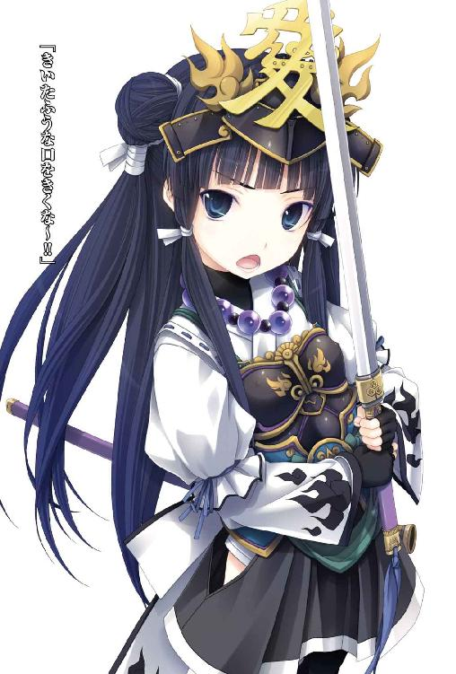
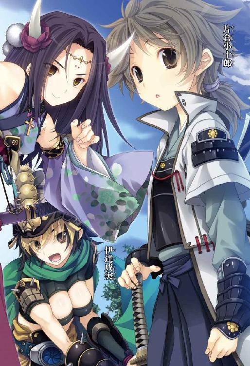
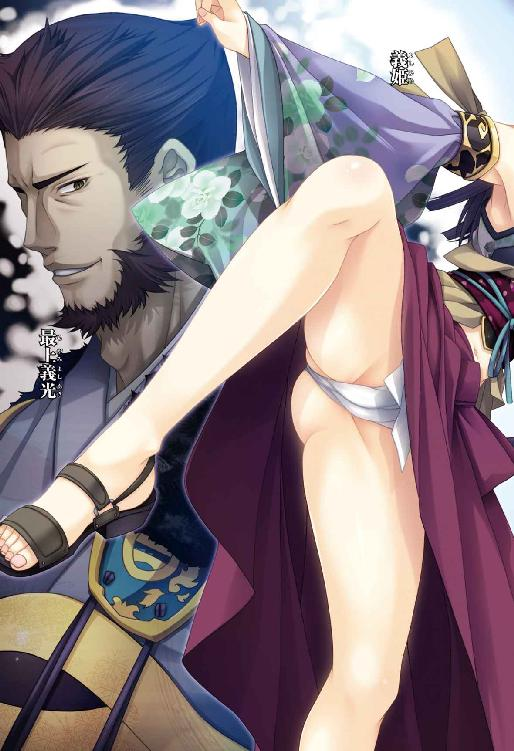
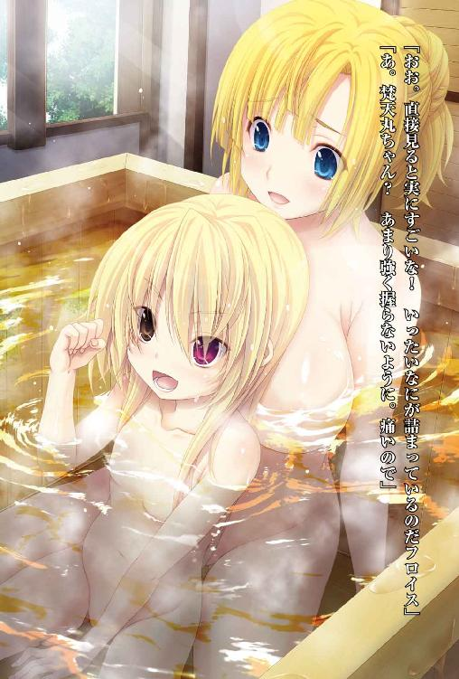
織田信奈の野望外伝
邪気眼竜政宗
春日みかげ

本書に掲載されているコンテンツの著作権等の知的財産権およびその他すべての権利は、ソフトバンク クリエイティブ株式会社または正当な権利を有する第三者に帰属します。
本書の内容を権利者の許諾なく複製・複写・翻案・放送・出版・データ配信（送信可能化を含む）などすることはできません。
カバー・口絵 本文イラスト
みやま零
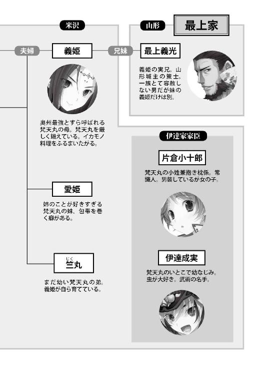
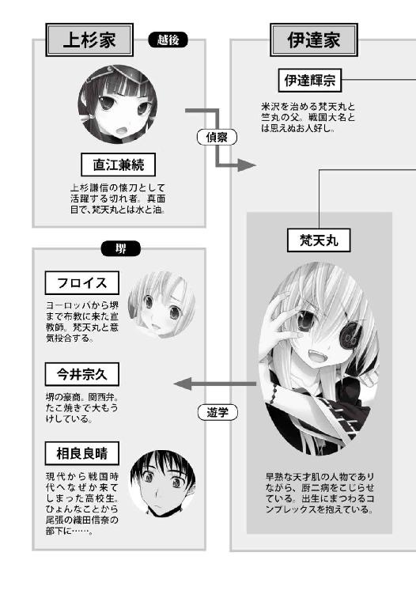
第一の封印 梵天丸登場!!
越後から米沢へと至る山道を、一人の美しい姫武将が白馬にまたがってゆるゆると進んでいた。
雪国の越後で育った姫武将らしく、肌が雪のように白い。
長い髪を束ねて腰まで垂らし、前髪はまっすぐに切りそろえている。
印象的な鋭い視線の持ち主だが、年齢はまだ十二、三歳くらいだろうか。
正確な年齢は、当人も知らない。
生年月日不詳なのだ。
戦災孤児であった少女は、越後の姫大名上杉謙信にその才気を見いだされて小姓として抜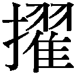され、怜悧な頭脳と腕利きの強者としての実力を認められて破格の出世を遂げた。
彼女はつい最近、越後の名族・直江家の名跡を継ぎ、直江兼続と改名したばかりである。
これは、両親の顔や自分の誕生日すら知らない流浪の少女が、わずか数年で上杉家の家老格へと実力でのしあがったことを意味する。
上杉家の懐刀。
それがこの若き天才・直江兼続のあだ名であった。
直江兼続自身、自分の才気に絶大な自信を持っていた。
その直江兼続が米沢へただ一騎で向かっているのは、主君の上杉謙信から奇妙な命令を受けたためだ。
「奥州にもう一匹の竜がいるらしい」
越後を治める上杉謙信は若き姫大名だが、常人とは異なる独特の思考回路の持ち主で、霊感あるいは第六感とでもいうべきひらめきによって戦や政治を行っている。
その謙信が奥州にいるらしい「もう一匹の竜」のを聞いて、妙に関心を持ったらしい。
謙信自身が「越後の竜」と呼ばれ、「甲斐の虎」こと武田信玄と並ぶ戦国最強武将として怖れられていた。
謙信はその神懸かり的な采配によって知将武田信玄を戦場で追いつめるほどの異様な戦上手であり、かつ、私利私欲を持たずにただ戦乱の世に正義と秩序を回復するために義の戦を繰り返すというおよそ信じがたいほどに純粋で純真な武将だった。
直江兼続は他の上杉家諸将と同じく、この上杉謙信をほんものの毘沙門天の化身と信じて慕い敬っているが、それにしてもさすがに今回の命令の真意ははかりかねた。
「奥州には謙信さまに匹敵する英雄などいるはずがないと思うが......」
戦国時代の東北地方には、二つの国しかなかった。
本州最北端の青森県と、太平洋側の岩手県・宮城県・福島県あたりが、陸奥国（奥州）。
日本海側の秋田県と山形県あたりが、出羽国（羽州）。
この二国を併せて奥羽と呼ぶが、通例ではまとめて「奥州」と呼んでしまう。
ちなみに奥州は南北に長いため、関東に近い現在の宮城県南部から福島県にかけての一帯を南奥州と呼んで、北奥州と区別することが多い。
直江兼続は、ゆくゆくは上杉謙信からこの広大な奥州の仕置きを一任されるはずであった。
今回の旅行も、奥州の視察といった意味あいが強い。
だが、奥州の竜とはいったいなにものであろう。
「かつて奥州藤原家が栄華を誇った頃の力は今の奥州にはない。複雑な姻戚関係を結んでごちゃごちゃに交ざりあった田舎大名たちがそれぞれの土地に割拠しているだけのはず」
直江兼続が奥州で警戒している大名は、「出羽の狐」などと呼ばれている山形城主、最上義光だけである。
日本海側に位置する出羽国は越後と国境を接しており、山形城を本拠とする最上義光と越後の上杉家とのあいだではこれまでしばしば紛争が起こっている。
「最上義光は知勇兼備の武将なれど暴虐な人格の持ち主で、実父や一族とも刃を交えて戦っているという。しかもわれらが越後の北方を侵食しようとする輩だ。許せん」
だが上杉謙信によれば、最上義光などよりもはるかに優れた英雄が、山形からほど近い米沢にひそんでいるのだという。
米沢は地図上では出羽国の南端に位置するが、地政学的には南奥州に属している。
同じ出羽国でも山形の最上義光が領土を拡張していくと日本海側へ出て越後に接触するのに対し、米沢からは太平洋側の南奥州へ出るしかない。
というのも、米沢は日本海側への道を山形城によってふさがれているからであり、かつ最上義光の妹・義姫が伊達家当主・伊達輝宗に嫁いで両家が婚姻同盟を結んでいるからである。
奥州にはこの種の婚姻同盟が異様に多く、大名小名が複雑な親戚関係をあちこちで結んでいて、「上杉家の懐刀」と呼ばれる秀才・直江兼続をもってしても把握しづらい。
「米沢の伊達家のお世継ぎ、梵天丸。まだ子供と言っていい幼い姫でありながら、尋常の人間とは思えぬほどに知能の高い神童だそうだが」
直江兼続は、その梵天丸という神童のもとへ向かっている。
「山形の最上義光が、自分の妹の子である梵天丸を害するかもしれないという。いずれ併合するつもりの伊達家から神童が生まれてきたことを快く思っていないらしい」
梵天丸がまことに神童であり竜であれば、そなたが梵天丸を最上義光の謀略から守り、梵天丸を善導せよ、と上杉謙信は兼続に命じたのだ。
奥州の未来のためである。
上杉謙信は、梵天丸というまだ見ぬ神童にどうも大きな期待をかけているらしかった。
謙信に見いだされて引き立てられた兼続としては少しねたましいが、謙信のひらめきの的中率は異常だ。
それに、実の伯父に狙われているという梵天丸の立場にも同情するところがある。
わたしが梵天丸をしばらくのあいだ守ってやってもいい、と兼続は思っている。
「それにしても梵天丸とは、子供のくせにたいそうな名前だ」
梵天とは仏教の守護神の一柱で、仏法成立以前からインドで崇拝されていた神であるらしい。
伊達家の若き当主・伊達輝宗はとてつもないお人好しらしく、最上義光から妹の義姫を押しつけられた時、その義姫がすでに誰かの子をはらんでいたにもかかわらず縁談を断らなかったというが越後でもまことしやかに語られている。
義姫は米沢に嫁いできてすぐに、梵天丸を産んでいる。
伊達輝宗の実子だとすると、計算が合わない。
だからこのはおそらく、事実であろう。
「かような運命を背負って生まれてきた子に、梵天丸というたいそうな名前をつける伊達輝宗どのはそうとうの徳人らしい」
直江兼続は首をかしげながら米沢の城下へと至り、団子屋に入った。
団子屋の店内で町人たちにいろいろなものをおごり歩き、「梵天丸さまの屋敷はどこだろうか」とたずねてまわった。
まずは町で生の情報を収集するのが、兼続流である。
「梵天丸さまはいずこか」
「月に一度だけ、米沢城へ来られてご両親たちと会食をなさるらしいが」
「今日はその日じゃないよ」
「ふむ。まあもういっぱい」
「これはこれは」
「気前のいい姫武将さまじゃ」
「それで梵天丸さまは、今日はどこにおられる」
「ご自分のお屋敷じゃ」
「滅多にお屋敷から出てこんし、わしら米沢の人間は梵天丸さまのお姿を見たこともない」
「家臣団の前にもほとんど顔を見せぬらしい」
梵天丸は、現代で言うところのひきこもりらしかった。
「どうにもわからぬな。梵天丸さまは神童だとに聞いてきたのだが」
「神童かどうかは、わからんけど」
「そうとうに人見知りがひどい姫さまらしいよ」
「ふうむ」
人見知りがひどいからと言って、ダメな子だとは限らない。
そもそも兼続が敬愛してやまない上杉謙信もまた、人見知りというのとは少し違うが普段は人前に出ることを極度に嫌い、毘沙門堂にこもっていることが多い。
どうやら、孤独こそが上杉謙信のひらめきの源なのだ。
「梵天丸さまが伊達輝宗どののほんもののお子ではないというはたしかなのか」
「いやそれは」
「うかつなことを言うとお仕置きされますで」
「伊達の殿はまことにお優しい名君ですが」
「つねづね、そのだけは聞き捨てならぬと」
「そうか。ともかく梵天丸さまの館へ行ってみよう。場所はどこだ」
「あそこには行かないほうがいいですよ、お侍さま」
「なぜだ」
「それがその、殺風景で不気味な屋敷なんですよ」
「不気味？」
「館に南蛮から来た化け物を飼っているとか、庭に亡者どものしゃれこうべを積み上げているとか、いろいろ奇怪なが流れているんです」
にわかには信じがたい話だった。
「......神童の屋敷とは思えぬ面妖な話だな」
「梵天丸さまが外に出てこられないので、そういう話が広まっているのでしょう」
「山の上にあるせいかいつも白い霧に覆われていて、不気味なところなのは間違いないですよ」
南蛮の化け物屋敷か......奥州ではキリシタンの宣教師など見かけないが、いったいどうなっているのだろう。
キリシタンの布教活動は南蛮船が往来している九州や畿内ではさかんだが、東国にはまだまだ及んでいない。
あるいは、梵天丸の知識がそれほどに進んでいるという証なのだろうか？
兼続は町人たちに小粒金がたっぷりと入った小袋を渡すと、団子屋を出た。
すでに日が暮れつつあったのでその日は宿で一泊し、早朝、梵天丸の屋敷に向かった。
馬で山道を進むと、教えられたとおりの場所に、白い霧に覆われた不気味な屋敷があった。
塀の上には、たくさんの黒猫がたむろしていて、にゃーにゃーと不吉な鳴き声をあげている。
そんな猫まみれの塀の向こうに、見るからにあやしげな南蛮寺がそびえているのが見えた。
南蛮寺のてっぺんには、逆さ十字架が立てられている。
キリシタンが掲げている十字架とは上下の位置が逆である。
兼続は自らを毘沙門天の化身と信じる上杉謙信の影響で仏教に詳しいのだが、キリシタンの教えについても知識として軽く学んだことがある。
「おかしいな。十字架の位置がなぜ逆なのだろう？」
ともあれ、正門にまわって門を開けてくれと頼んだが、人の気配がない。
ゴーン、ゴーン、と霧の彼方から不気味な鐘の音が響いてきた。
たぶん、朝が来たことを知らせているのだろうが、仏教寺院の鐘とは異なった南蛮風味というやつでどうにも音色が禍々しい。
にゃーにゃーと黒猫たちがいっせいに騒ぎはじめた。
こんな不気味なところで一人きりいつまでも立ち往生しているというのはどうだろう。
兼続は礼儀正しい姫武将だが、この時ばかりは梵天丸屋敷のそこはかとない不気味さに耐えられなかったらしい。
それに、兼続には性格的にやや尊大なところがあり、門の前で長々と待たされることを好まない。
「しかたがない。勝手に入るか」
馬を下り、塀を乗り越えて庭園から館に入り込むことにした。
これが直江兼続、通称かねたんの不運のはじまりであった。
米沢の神童・梵天丸の朝は遅い。
「うにゃあああ～」
南蛮お化け屋敷とも呼ばれている梵天丸の屋敷の奥から──。
「うにゃああああ～」
断末魔の猫があらぶっている声のような、それでいてなにかが違うような、とにかくよくわからない咆哮が、白い霧がかかった庭園にまで鳴り響いていた。
「うにゃああああ......」
「姫。朝ですよ。もう起きてください」
「うう、母上。我は母上のふわふわの胸を抱き枕にして、もう少し寝ているのだ」
「ひ、姫。ご母堂と眠っておられる夢を見ておられるのですね......もう少しだけ抱き枕になってさしあげましょう」
「......うっ......はっ、母上っ......またしても我のお膳に......どっ、毒をっ......!!」
「姫っ!? またしてもご母堂に毒を盛られる悪夢にうなされておいでですかっ!? 今、この小十郎が起こしますからっ！」
「......と思ったが、毒どころか滋養満点のニンニクを料理に入れてくださったのだな母上。梵天丸は母上の料理が大好きなのだククク」
「......ううっ。やはり夢の中では母上と仲良くされておられるのですね、姫......わかりました、この小十郎、今しばらく姫の抱き枕係としてこのままの姿勢で姫を抱っこしてさしあげましょう」
「と思ったら、よく考えたらニンニクは南蛮魔族である我にとっては猛毒ではないかっ！ とっ、溶けるうううう！ はっ、母上～っ!?」
「ひっ、姫さまああああ!?」
「うにゃあ。さっきから一人で泣いたり笑ったり騒がしいな、小十郎。ククク」
ぶん。
梵天丸専用の南蛮ベッドから、一匹の子猫......ではなく、よく見ると人間の女の子......がぶん投げられて板間にごろごろと転がった。
「うにゃっ。なにをするのだ小十郎」
「朝っぱらから悪質な冗談はやめてください、姫」
「我の抱き枕係たるものが、主人をベッドから投げ捨てるとは。さては魔王の座を実力で奪い取るつもりか～!?」
床の上をごろんと転がりながら、白い南蛮寝具「ぱじゃま」に身を包んだ小柄な少女が、白い歯をのぞかせて邪悪な笑みを浮かべた。
転がりながら体勢を整えて「ちょちょーん」と手足を思いっきり突っ張った「見得」のポーズを取ってみせたあたり、並大抵の運動神経ではなく、もしかしてほんとうに猫なのかもしれない。
この「見得」という独特のポージング自体、このちびっこい少女が「どうすればかっこよく見栄えがするか」を考え抜いた末に開発した体勢なのだ。
しかしなによりも奇妙なのは、このちんまりとした幼い少女の髪の毛が、まるで南蛮人のそれのように金色に輝いていることと、左の瞳だけが赤葡萄酒のように紅いということだった。
「姫。ボクをからかうのもいいかげんにしてください！ さては最初から起きてましたねっ」
ベッドから梵天丸を投げ捨てた犯人は、梵天丸のお小姓兼抱き枕係の、片倉小十郎。
梵天丸より数歳年長だ。
米沢一の美少年と誉れ高く、伊達家家臣団内の衆道趣味を持つ野郎武士たちが親衛隊を結成しているほどの片倉小十郎だが、実は女の子である。
米沢城主で伊達家当主の伊達輝宗が、たいせつなお世継ぎの梵天丸に悪い虫がついたらたいへんだと先走り、小十郎を男装させてつねに梵天丸のそばにはべらせているのだ。
梵天丸は、この私欲がなくかつ常識人の小十郎が大のお気に入りで、ご飯を食べる時もお風呂に入る時もたいてい一緒で、夜は抱き枕がわりにしているのだった。
小十郎は（ボクはいつ女の子に戻れるのでしょう......）と自分の将来を少し嘆いているが、この金髪とオッドアイを持った天使のように愛らしい梵天丸から目を離せない。
というのは、梵天丸から目を離すとなにをしでかすかわからないからだ。
なにしろ梵天丸は一を聞いて十を知る早熟の神童で、頭の構造が一般人とは違う。
まだ元服前の子供でありながら、父・伊達輝宗が「この子は天才ゆえ」と英才教育を施したためか、すでに古今東西の仏教神道儒学算術軍学暦道などに通じ、「日ノ本の学問には飽きた」と言いだして最近では南蛮の知識をせっせと仕入れている。
だがその結果、梵天丸屋敷はいまや南蛮お化け屋敷と化していたのであった。
まだ実物を見たこともない南蛮寺を伝聞情報と妄想だけで設計して建ててしまったり、しかもその中身がキリスト教の神ではなく南蛮の悪魔と山羊の頭の骨を祀る日ノ本初のあんち・くらいすと教会だったり、白い霧に覆われた庭園に南蛮式のお墓に見立てた逆さ十字架をぽんぽんと飾ったり、南蛮では魔族の使い魔だからという理由で黒猫を大量に飼ったり。
普通、この時代の日本人が南蛮文化に接触するとキリシタンになるのだが、神童すぎて頭が地球を一周している梵天丸はどういうわけか「南蛮魔族の連中はなかなかかっこいいではないかククク」とあんち・くらいすと趣味にかぶれてしまい、「我は日ノ本を覆滅するために南蛮より召喚された魔族である」と言いだす始末。
神童と言えば聞こえはいいが、一歩間違えれば......いや間違えなくても梵天丸は変人奇人の類なのであった。
にゃああああ。
にゃああああ。
屋敷のあちこちから、黒猫の鳴き声が聞こえてきた。
「おお、今朝も魔族の雄叫びが耳になじむぞククク。うにゃあああああ～♪」
「猫と共鳴しないでください。ボクの言葉を聞いているんですか、姫？」
「聞いているとも。そうそう、からかうとはなんのことだ？」
「夢を見ているふりをして、ボクをからかったじゃないですかっ」
「我は小十郎に投げ落とされるまで、ずっと寝ていたぞ」
「噓ですね。ボクはこう見えて小心者なんですから、からかわないでくださいよ」
「いやだ。小十郎は簡単にだまされてくれるからな。からかう」
「それでは本日をもって抱き枕係をやめさせていただきます」
ぷいっと小十郎がそっぽを向くと、梵天丸はうるうるっと涙目になった。
「うにゃああ～。それは困る！ 小十郎が抱き枕になってくれないと我は安眠できぬのだ～！」
「妹のめごさまを抱き枕係になさいませ。めごさまも姫の抱き枕になりたいと志願していますよ」
「うむ。めごはかわいいが、胸がつるぺったんなので抱き心地がいまいちなのだ。我は今までとっかえひっかえいろいろな女を南蛮ベッドに引っ張り込んできたが、小十郎のみずみずしい弾力を持つ若いおっぱいがいちばん快適だったぞククク」
「幼女の分際でどこかの女衒みたいなものいいはやめてください、イラッと来ます」
「幼女とは失敬な小十郎。我はもう大人だ。ちょっとばかり背が低いだけだ」
「大人は、抱き枕係なんかいなくても一人で眠れますっ」
「にゃんだとう？ 一人で寝たりして、夜中におしっこに行きたくなったらどうするにょだっ？」
「行きなさいよ」
「うにゃあああ？ 無理だ、お化け怖い、南蛮ベッドの上でおもらしする！」
「お屋敷を南蛮お化け屋敷に改造したのは、姫じゃないですか～」
「庭に建てた南蛮寺の魔方陣からおぞましい低級魔族が飛びだしてきたらどうするにょだっ、我はきっと立ったまま失神しておもらしするぞっ」
「もらせばいいじゃないですか」
身軽な梵天丸がぴょんと跳びはねて、小十郎の首に抱きついてきた。
「うわああ！ 小十郎、我を見捨てにゃいでくれえええ！ うっく、うっく」
「はいはい。見捨てませんよ、決して」
「ほんとか？」
「絶対に見捨てません。姫がどれほど残念なお子さまでも」
「小十郎～！ やはりわが抱き枕係は小十郎だけだ！ 抱き抱き！」
こういうところは、まだまだ年齢相応のお子さまであった。
小十郎は「はぁ......せめて米沢にほんものの宣教師さんでも来てくれれば、姫ももうちょっと普通の子になるんだろうけど」とため息をつきながら、梵天丸の服を着せ替えはじめた。
「うー。うー」
梵天丸は両手をばんざいして、小十郎のなすがままになっている。
神童だからか、それとも単にそういう性格なのか、梵天丸は横着者なのだった。
特に朝はダメなのである。
低血圧らしい。
「しょうがないですねえ。姫ももう大人なら、自分で着替えてくださいよ～」
「フ......太陽の光がぎらついている朝方は、我の魔力は十分の一に落ちてしまうのだ」
「落ちませんよ。むしろ明るいうちに外出してください。身体にさわりますよ」
「いやだ。昼間、外をうろついたらみなに怖がられる......」
金髪にオッドアイという異相を持って生まれてきた梵天丸は、人の視線に敏感である。
ことにこの米沢は奥州でも山の中にあり、一生海を見ないで死んでいく者が多い。
南蛮人など見たこともない手合いばかりだった。
梵天丸はずっと幼い頃、家臣たちが「姫さまは殿の子ではない。実の父親は南蛮人だ。それゆえに祟られて、あのような奇妙な瞳を持って生まれたのだ」としていた場面を覗いてしまったことがある。
それ以来、梵天丸は人前に出ることを怖れ、避けてきた。
人前に出る時は南蛮合羽をすっぽりと頭からかぶり、顔を隠してしまう。
だから家臣の中にも梵天丸の素顔を知らない者が大勢いる。
現代風に言えば、梵天丸はひきこもりのお姫さまだったのだ。
ほとんど外に出ずに屋敷にこもっていたせいか、想像力と妄想力は豊かである。
あまりにも豊かすぎて「我こそは南蛮魔族なり」などと言いだし、おそらく日本史上初のあんち・くらいすと型中二病を発症したわけだが。
梵天丸の生い立ちから今日までのすべてを知っている小十郎は、そんな梵天丸のさらさらの金髪をそっとなでながら、本日の予定を口にした。
「姫さま。今日は朝ご飯のあと、虎哉和尚の仏道講義のお時間です」
「仏道は古くさくておしゃれの最先端ではない。我は南蛮のばてれんの講義を聴きたい」
「そうは言いましても、米沢に宣教師さんはいませんから」
「米沢に宣教師を招けばよい。南蛮魔族軍団の階級や個々の強さや必殺技の名前について詳しく知っているのは宣教師だけにゃのだ」
この世界の裏側からはるばる命がけで海を渡ってきた宣教師が梵天丸にそーゆー南蛮魔族設定の枝葉末節ばかり聞かれている姿を想像した小十郎は、うっ、と涙ぐんでしまった。
それではあまりにも宣教師が哀れである。
異国までわざわざ神の教えを布教しに来て、なにゆえに悪魔についてばかり語らされねばならないのか。
「姫。宣教師さんが教えていることって、たぶん、魔族がどうとかそーゆーことではないと思うのですが」
「それでは、なにについて教えているのだ？」
「ええと。愛、とか？」
「めごなら、我の妹ではないか」
梵天丸の妹の名は、愛姫と書いて「めごひめ」と読む。
「宣教師より我のほうがめごについては詳しいぞ、お風呂場では頭の先から足の先までねぶるように洗ってやっているからなククク」
「ですから、幼女の分際でそういう親父臭い発言は慎んでください姫」
「そろそろ厠に行きたいのだ。うにゃ～」
「姫は厠に入ったら昼まで出てこないので、却下です」
「あそこがいちばん落ち着くにょだっ！ 客も来ないし、今日のご飯の献立を考えるにもってこいの場所にゃのだ！」
意外だが、梵天丸の趣味は、お料理である。
基本的に屋敷でごろごろしているので食通になってしまったらしい。
「すぐに狭いところに隠れたがるんですから。姫はまるで猫です」
「黒猫も我も、同じ南蛮魔族だからなククク......おお、今朝も魔眼がうずくぞ」
小十郎に漆黒の南蛮合羽を頭からすっぽりかぶせてもらった梵天丸は、「日光は魔族の天敵......今日も黒ずくめで一日を過ごすのだ」と邪悪な笑みを浮かべながらせっせと南蛮靴を履くのだった。
南蛮合羽も南蛮靴もちんまりとした梵天丸の身体とはサイズが合ってなくて、ぶかっとしているのが玉に瑕。
「姫。室内で靴を履いちゃいけません」
「南蛮の家では履きっぱなしでいいらしいぞ小十郎」
「それじゃ部屋が汚れます。どう考えても履かないほうがいいですよ。なんでもかんでも南蛮風にする必要は......」
小十郎が常識人としてのお説教をはじめようとしていたところに、梵天丸の妹・愛姫がふらりと入ってきた。
「姉者。小十郎。一大事」
梵天丸より一つか二つ年少の愛姫は、親愛なる姉とおそろいの南蛮合羽に身を包み、片手を白い布で巻いて首から吊っている。
細い手足のあちこちにも布を巻いているが、これは怪我をしているのではなく、おしゃれとして巻いているのである。
吊っている手もそうで、折れているのではなく敢えて布で吊って動きづらくしているのである。
愛姫も、姉の梵天丸とは少し違う方向で中二病を発症しているのだった。
敢えて言えば、包帯巻き巻き型中二病と名付ければよかろうか。
ただし、愛姫の顔つきがどことなく子猫っぽいのとほとんど無表情なのは、そういうキャラを作っているのではなく、生まれつきである。
ちなみに黒猫軍団の餌やり係は、愛姫が担当している。
梵天丸は横着者なので、毎日猫に餌をやる作業を続ける根気に欠けているのだった。
「めごさま、おはようございます。一大事とは？」
「そうか。めごもとうとう、女になったか......小十郎、今宵はお赤飯だ！ フハハハハ」
「ですから姫、どうしていちいち親父臭い小芝居をしたがるのです。幼女の分際でやめてくださいイラッと来ます」
「幼女ではにゃいっ！ 我は大人だ！ 大人にゃのだっ！ 大人は大人らしい台詞を吐かねばならぬのだっ」
「大人っぽい台詞と親父臭い台詞は違いますよ？」
愛姫は無表情のまま、ぼそりとつぶやいた。
「今朝、南蛮寺に仕掛けておいた罠にかかった者がいる」
「あー。あの姫が考案した、床を踏むといきなり落とし穴に落ちてしまうという邪悪な罠ですね？」
「そう」
「かかったのは鹿ですか熊ですか？」
「人間」
「ええええええええ!? 姫、たいへんですよ！ あんな罠を仕掛けるからっ」
「魔王の屋敷に無断で侵入した者は、それ相応の報いを受けるにょだ。ククク」
「姫～！」
「だいじょうぶだ小十郎。落とし穴の中はふかふかの羽毛でいっぱいだ。本来ならば毒蛇と毒さそりで埋め尽くしておきたかったのだが生き物は世話が面倒でなククク」
「でも、決して這い上がれないくらい深く掘ってるんでしょ？」
「落とし穴の深さは小十郎の身長五人分くらいだな、フハハハハ」
「もしかして罠にかかった人を殺す気まんまんですか姫」
「本来、あれは熊用の罠にゃのだ。たまには熊鍋が食べたいにゃ～」
「ではボクが熊さんを狩ってきますから、罠を永久に撤去してください」
「いやだ。魔王が支配するあんち・くらいすと教会には結界と罠が必須にゃのだ。あと、今夜は鶏を食べたいぞ小十郎」
「うわ。熊鍋に興味なさそうですね姫～。さては熊鍋は罠を仕掛けるための言い訳ですね!?」
「人を困らせる策を弄するための口実と言ってくれククク」
「これ以上南蛮お化け屋敷の悪評が高まったら、いずれ近隣住民の皆さんに焼き討ちされますよ」
「やむを得まい。魔物は人間に狩られる運命なのだ小十郎......」
「いえ姫は少しばかりちびっこいだけで、普通に人間ですから」
「フッ。いざ魔物狩りがはじまったら我は真の魔王として覚醒してしまうだろう。なんだかよくわからないけどすさまじい必殺技を繰りだし、愚かな人間どもに断末魔の鶏のような悲鳴をあげさせてやることになるのだ」
「一方的にボコられた姫が子猫のような悲鳴をあげて終わりになると思いますよ？」
梵天丸と小十郎を放置しておくと、いつまでも漫才みたいなうだしゃべりが続くのである。
「罠に落ちた者を、連れて来た」
我慢できなくなった愛姫が、梵天丸と小十郎に紹介したその被害者とは。
「わたしは越後の上杉謙信さまにお仕えする、直江兼続と申す者！ い、い、いったいあのまがい物の南蛮寺はなんなんだあっ！」
早朝に哀れにも落とし穴の奸計にはまり、そのまま「寒い」とお腹をすかせてこごえていた直江兼続その人だった。
「どうして南蛮寺なのに山羊の頭の骨を祭壇に飾っているんだあ！ 天井に大量のコウモリがいたのはなぜだっ？ うっかり落とし穴に落ちてしまったではないか！」
生真面目な直江兼続は、ちびっこい梵天丸を見るなり「この子供が上杉家の懐刀と呼ばれているこのわたしを罠にはめたというのか」と錯乱してしまったらしい。
梵天丸は梵天丸で、
「なかなか生真面目そうで、かつ尊大なやつらしいな。からかいがいがあるぞククク」
直江兼続を悪い意味でロックオンしたらしい。
兼続がこの時、激昂せずに静かに損害賠償交渉だけをやっていれば、この先の歴史は変わっていたかもしれない。
「越後の上杉謙信の家来が、魔王の屋敷になんの用だククク」
「魔王とはなんだ？ わたしは伊達家のお世継ぎ・梵天丸に会いに来たのだ！」
「ボクは梵天丸さまの小姓、片倉小十郎と申します」
男装している小十郎は、一種独特のオーラを放っている。
小十郎を少年だと思っている兼続は、思わず顔を赤らめてしまい、怒気をそらされてしまった。
「こちらの金髪の姫がその梵天丸さまです」
「こ、こいつが梵天丸？ う、噓であろう？」
「姫は見た目はちびっこいですけど神童なんですよ～」
「噓だっ！」
直江兼続がこれほど大声で叫んだことは、これまでなかったかもしれない。
「ククク。小十郎は噓をつかぬぞ」
「噓ではない。このかっこよくてかわいくて優しい女の子が、梵天丸姉者」
あちこちに巻いている白い布さえ気にしなければこれほど純真な娘はいないというくらいに純粋無垢を体現した愛姫にそう言われると、兼続は「そんなバカな......このちんちくりんが......」と頭を抱えてうずくまってしまった。
そんな兼続の目の前には、梵天丸が「ククク」と笑いながら立ちはだかっている。
ええい抜刀して斬ってやろうか、と兼続は歯ぎしりした。
「我こそが南蛮魔族第五十三番の階級に属する大魔王・梵天丸だ」
「南蛮......なんだって？ 聞き取れなかった、もう一度言ってくれ」
「うむ。我こそが南蛮地獄第七十七階層の魔界を守護する紅竜魔王・梵天丸だ」
「さっきと台詞が違っているような気がするが？」
「気にするな、我はその瞬間瞬間に思いついたことを適当にしゃべっているだけだ。過去は決して振り返らぬ」
このチビガキ、斬首してやろうか......と短気な兼続はいよいよ殺意の波動を抑えられなくなってきた。
梵天丸は、「こやつ小十郎とはまた違った意味でからかいがいがある」とご満悦。
日頃は人見知りが激しい梵天丸だが、兼続とは悪い意味で波長が合うのかどんどん調子に乗ってきた。
「さて、かねたんとやら」
「兼続だっ！」
「我の魔眼を無断で見たかねたんは、本来ならば南蛮魔族の慣習に従って無礼打ちにするところだが」
「かねたん言うな！ って、魔眼とは？」
「無礼者め。我のこの左目のことだ。見ればわかるであろうが！ 見よ！ 南蛮語で言えば、る────っくぅ！」
左の紅い瞳を指さして、梵天丸がカン高い声で叫んだ。
叫ぶと、いよいよ盛りがついた猫みたいな声になる。
兼続は、首をひねった。
「これはしたり。なぜその目が魔眼なのだ」
「いちいち説明させるな。紅い瞳は呪われた南蛮魔族の証にゃのだ」
「なぜだ？」
兼続の朴念仁っぷりに、こんどは梵天丸のほうが立腹した。
ぶんぶんと腕を振り回して、あらぶりはじめた。
激しくあらぶりはじめた。
「この米沢では昔からそう決まっているにょだっ！ 我の魔眼を見た者は魂を抜かれると、みな怯えるにょだっ！」
「なるほど。米沢は紅い瞳を見ると祟りだなんだと怯える田舎者の集まりだということか」
「にゅ？」
「わが越後では、そのような迷信を信じる馬鹿者などいない。むしろ紅い瞳は神性の証。神仏に選ばれし偉大な運命の持ち主だけが紅い瞳を持って生まれてくると言われている」
「にゃんと。どうしてそうなるのだ？ おかしな国もあったものだな......」
「おかしくない。米沢が田舎臭いだけだ」
兼続は、なるほど謙信さまが「もう一匹の竜」と言っていたのは、この紅い瞳のためであったか、となぜか感心している様子だった。
「ただし片眼だけが紅いというのはわたしもはじめて見たぞ、梵天丸。お前には人間の心と神の魂の双方が宿っているのかもしれぬな」
「うまいことを言うが、事実は少し違うな。かつては魔王の魂と神の心の二つが我に宿っていたのだククク。そしてすでに魔が勝利した！」
「ちょっと待て。人間の心はどこにいったんだっ!?」
小十郎と愛姫は「越後ってすばらしい先進国ですね！」「姉者が神の使いであるはずがない」と両極端の反応を示している。
そして梵天丸は「待てよ？ 神だとっ？ いかん、神はまずい！」と左目を押さえて苦しみはじめた。
「ぬおおお。我は神との永遠の死闘を宿命づけられた呪われし魔王。もう我の魂のうちでは紅の魔眼が、すなわち魔が勝利したのだ！ 神ごときの眷属にされてなるものか！」
「お前、毎日そんな小芝居を続けていて人生むなしくならないのか？」
「黙れ。さては貴様、神の陣営から我を調伏しに来たのかっ？」
「このわたしが、そんな面倒臭い使者なわけがあるか！」
「ではなにをしに来た」
ああ、やっと現実の話ができる。嬉しくなった兼続は思わず泣いてしまった。
「よく聞け。わが主君・上杉謙信さまが、米沢の神童・梵天丸を守れと仰せなのだ」
「誰からだ？ すでにわが魂は魔に落ちておるぞ、無力で偽善が好きで実はお小姓趣味がある神ごときには救えぬククク」
「いちいち話の腰を折るな！」
「話の腰？ は・な・し......三文字に分解しても、どこにも腰なんてないぞ」
「......お前が神童だとはとても思えぬが、米沢の隣国・山形の最上義光から梵天丸を守れ、と謙信さまより命じられたのだ」
「あー。あの狐の伯父上か」
梵天丸は耳をかきかきしながら、興味なさげにつぶやいた。
最上義光は、梵天丸の母・義姫の実の兄にあたる。
どういうわけか──たぶん梵天丸の実の父親が南蛮人だからだろう──梵天丸のことを昔から目の敵にしている、狐顔のいやな親父だった。
いずれお人好しの当主・伊達輝宗をなんらかの形で籠絡して伊達家を飲みこむつもりでいることは、誰の目にも明らかだった。
「あの狐はたしかに我の天敵だが、なぜ奥州の魔王であるこの我が越後の上杉謙信に守られねばならんのだ？」
「謙信さまはこの乱世に正義を実現するために戦っておられる」
「ふうん」
「もっと興味深げにうなれ！」
「ほおー」
「もういい。謙信さまは奥州の秩序を乱している最上義光の悪逆ぶりに心を痛めておられる。しかし謙信さまは関東の北条と甲斐の武田信玄という悪辣な二大勢力と戦っているため、奥州にまでは直接出向けないのだ」
「奥州がとてつもなく草深い田舎だと言いたいのだにゃ、貴様は」
「まあそれもある。ゆえにわたしが謙信さまの代行として、奥州の正義と秩序を守るために派遣された」
「ククク。面倒臭い上にうっとうしいやつだな謙信は」
「なんだとっ!? 貴様、謙信さまの善意をなんだと思っているっ」
「ふん。大きなお世話だな。奥州のことは奥州の魔族が勝手にやる」
そこは「奥州の人間がやる」と言うところですよ姫、と小十郎の添削指導が入った。
「とにかく、最上義光がなにか動きを見せるまではわたしは米沢に居座るぞ」
「うぬが先に我の罠にかかって黄泉の国へ旅立つほうが早そうだがな」
「黙れ！ 落とし穴に落とされたので帰国しました、などと謙信さまに報告できるか！」
「めご、かねたんに部屋を用意してやれ。神の眷属らしいから馬小屋がいいだろうククク」
「あい、姉者」
愛姫は梵天丸になついていて、梵天丸がおねだりしたらどんなことでも忠実にやってくれるのだ。
「わたしは神の眷属ではない、人だっ！ あと、かねたん言うなっ！」
「我は毘沙門天が嫌いなのだ。毘沙門天の像はいつも仏法の敵と称して邪鬼を踏みつけているではないか。仏法に帰依しないからといって踏みつけられ続ける邪鬼の気持ちを考えたことはあるのか、かねたん？」
「かねたん言うな」
「都に帰順しないからという理由で討伐されてきた奥州の魔族と、毘沙門天に踏まれる邪鬼。我はな、この両者のあいだにどこか同族の香りを感じるのだ!!」
そこも「奥州の人々」と言うところです、と小十郎がまた添削。
「梵天丸、いいからわたしに人間の部屋を貸せっ！ そろそろわたしも堪忍袋の緒が切れるぞ！」
「やめろ。貧乳のかねたんにそこまで言われると、さすがの我もちょっと傷つくではないか」
「貧......乳っ!?」
梵天丸の、かいしんのいちげき！
兼続は、弱点を発見されてしまった！
あああああと落ちこんでいるうちに食事がはじまってしまい、幼い愛姫に「ごゆるりと」とほほえまれてしまった。
「めご。我がおかずを食べさせてやろう！ わが膝の上に座れ」
「あい。あむあむ」
「いい食べっぷりだ。めごはかわいいなあ。ククク」
「姉者のほうがかわいい。はあ......めごは生きているのが辛い」
愛姫と梵天丸はどういうわけかまことに仲がよく、愛姫は梵天丸にとてもなついている。
家族というものを知らない兼続は（くっ。梵天丸が妙に忌々しい。わたしもめごどのを膝の上に座らせたい......って、なにを言っているのだわたしは？）と戸惑いを隠せなかった。
「姫。上杉家の家臣さんに失礼があってはなりません。馬小屋ではなく、いちばん上等のお部屋をお貸ししましょう」
食事中に常識人の小十郎が梵天丸にそう意見すると、梵天丸はあっさり「そうだな」とうなずいた。
さしもの梵天丸も、小十郎どのの言葉にはわりと素直に耳を傾けるらしい......と、兼続は思ったのだが──。
「では、我がもっとも丹精込めて作りあげた最上級の部屋を貸してやろう、ククク」
梵天丸の邪笑がずいぶんと楽しそうなのはなぜだろう、と気づくことができなかった。
こうして兼続は、やっと部屋を借りることができたのだった。
だがそこは、例の南蛮寺の二階にある謎めいた漆黒の部屋で、しかも黒い床の上には紅い塗料を使った巨大な六芒星が描かれていた。
壁には、猿や鹿や馬の剝製がかけられているだけでなく、黒い山羊の頭をかぶった人間の男の絵がでかでかと描かれていて、その絵が描かれている壁の真横に南蛮ベッドが置かれているという面妖さ。
明かりはもちろん蝋燭だけなので、日が沈むと室内はまさに魔界と化した。
これのどこが人間の部屋なのだ......と兼続はベッドの上で膝を抱えてかちかち歯を鳴らしながら思った。
天井裏からは、
「にゃーにゃーにゃ」
と黒猫軍団の大合唱。
これは、眠れそうにない。
そして枕元には、意外と筆まめな梵天丸からのお手紙が一通。
『どうだ、かねたん。ここが魔族を召喚するためにこしらえた我の特等室だ。本来なら客人を泊める部屋ではないのだが、お前ならまあいい。お前は気位が高くて特等室以外では満足できないだろうからなフハハハハ』
ぶちぶちぶち。
短気な兼続のこめかみのあたりで、血管が切れまくった。
『床に描いた六芒星の魔方陣を見よ。次の満月の夜あたりにほんとうになにか召喚できるかもしれないから、ぜひとも貴重な生贄となってくれククク』
「ぶぶぶぶ無礼なああああ」
『どうしてもというなら我の寝室で一緒におねむしてやってもいいが、その際は我の抱き枕になることが必須条件となるのであしからず。ま、その貧乳では抱き枕失格だがな』
最後の「貧乳」という一言が、兼続に決定的なダメージを与えた！
（そもそもこの「上杉家の懐刀」と全越後で怖れられているわたしを抱き枕にしたいとはどういうことだ、ぶぶぶ無礼者めがっ！）
兼続は顔を赤らめ、梵天丸からの手紙を破りながら思わず叫んでいた。
「おのれ梵天丸め～!!」
『追伸』
「まだ続きがあるのかっ!?」
『魔王が予言しておく。かねたんは今「おのれ梵天丸め～!!」と叫んでいる。ククク』
もっ、もてあそばれているっ......!! あんなチビガキにっ......!! この上杉家の懐刀がっ......!!
「ううううう！ くっ、悔しいいいいいっ！」
大変なところに来てしまった......と激しく後悔しきりの兼続だったが、越後の武士たちにとって謙信の命令はまさしく神の言葉なのである。
（あの梵天丸がむざむざ暗殺されたりするはずがない！ 謙信さま、今回ばかりは納得できません！ チビガキのくせにすでに魔道に落ちたやつ、今すぐ米沢を討伐して梵天丸を山中深くに埋めるべきです！）
もちろん謙信にそんなことは言えない。ベッドの上で突っ伏して、思わず泣き言を口走ってしまうのが生真面目な兼続にとっての限界だった。
「ああ。わたしはこんなところに来とうはなかった！」
深夜の南蛮寺。
「この南蛮寺には厠がないではないか。まったく」
ここ米沢の夜は半端なく冷える。
寒さで目を覚ましてしまった兼続は厠を探したが、寺の中にはなかった。
「また罠にかからぬようにせねば......」
梵天丸の本館に渡り、厠へと続く長い廊下を静かに進んでいると、梵天丸の寝室の前を通ることになった。
（まさか、妙な南蛮の儀式でもやっているのではないだろうな）
なんとなく気になってちらりと見ると、梵天丸は南蛮ソファーの上で小十郎にしがみついてぐずっていた。
（えっ？ こ、小十郎どのと梵天丸は、まさかそのような関係っ？ そんなあ。梵天丸はまだ子供ではないか！）
あ、あ、あの善良そうな小十郎どのを権力にあかせて──ゆゆゆ許せぬ！
兼続にはあるまじきことであるが、思わず室内を覗いてしまった。
だが、そこで見た光景は──。
「......母上に会いに行きたくない」
「姫、勇気を出してください」
「母上は、我が父上の子でないから、我を嫌っている。会いたくない」
「それは姫の誤解です」
「小十郎。どうして我は、父上の子でないのだろう」
「それは......」
「我が父上の子であったなら、母上もきっと梵天丸を愛してくれたのに」
「......姫」
梵天丸は、声を詰まらせて小十郎の腕の中で震えていた。
魔王の仮面を脱いだ梵天丸は、痛々しいほどに傷ついた少女だった。
信頼しきっている小十郎にしか見せない、もう一人の梵天丸がそこにいた。
兼続は思わず息を詰まらせていた。
（あの髪の色、あの片方だけが紅い瞳。誰の目にも、伊達輝宗どのの実子には見えない。利発な梵天丸は自分の伊達家における浮いた立場を意識せずにはいられぬのだろう）
梵天丸が自分を南蛮魔族だなどと言い張っているのも、自ら先んじて自分を異形の者だと言い張ることで己の傷ついた心を守るためなのだろうか。
（梵天丸は、自分が人間の世界の外からやってきた南蛮魔族なのだという物語を信じなければ、笑っていられぬのかもしれない。南蛮人である実の父の顔すら知らぬであろう梵天丸は、キリシタンの教えにすら自分の居場所を見いだせないのだ）
なまじ神童に生まれついてしまったばかりに──。
しかも、このような雪深い山国に生まれてきたために──。
謙信さまが「もう一匹の竜」として気にかけられた理由が、わかった気がする。
（それにしても梵天丸を励ます小十郎どのの、なんとお優しいことか。わたしにも兄というものがいたならば、あのように）
静かに廊下から去ろうとしたところで、小さな影にぶつかっていた。
愛姫だ。
やはり、厠へ行く途中だったらしい。
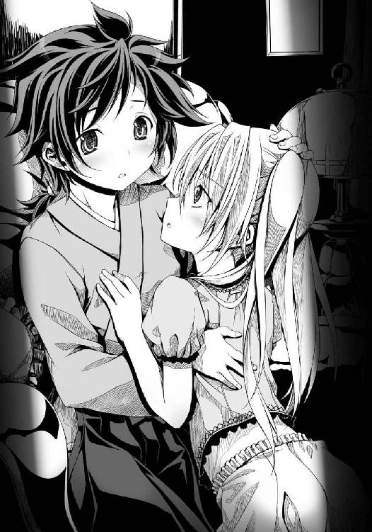
「めごどの？ これは失礼」
「かねたん。姉者をどう思う」
「どうって......あ、会ったばかりで、よくわからぬが。めごどのにとってはよき姉であると思うが」
ここだけの話、身内には愛想がいいが部外者に対しては少々どころではないくらい無礼者だ、その上ずっと屋敷にひきこもっているのではお世継ぎとして問題がある、と噓がつけない兼続はずばりと言ってしまった。
「姉者を、嫌わないでほしい」
愛姫が、うるっ、と瞳をうるませた。
「も、申し訳ない！ わたしはどうも、ずけずけと言いたいことを言ってしまうたちで」
「めごは、伊達家の子供ではない」
「なんですと、めごどの？」
「めごは、他家から人質として米沢に送られてきた」
「ええっ？」
兼続にとっては、信じがたい話だった。
梵天丸からはまるでそのようなそぶりなど、感じられなかった。
「米沢に連れて来られて泣いていためごに、姉者はとても優しくしてくれた。この梵天丸がめごを生涯守ってやるから怯えるな、笑うのだ、とほほえみかけてくれた......」
「めごどの」
「血がつながっていなくてもめごは我の妹だ、と言ってくれた」
「あの梵天丸が」
「姉者は、ほんとうはとてもお優しい人。それなのに、あのような態度をとって敵ばかり作ってしまう。みんなが、姉者を誤解している」
兼続は驚いていた。
まったく気づけなかった。
梵天丸の態度からも、愛姫の態度からも。
二人が実の姉妹だと頭から信じて疑うこともなかった。
「めごどのは、よき姉をもたれた」
兼続は、もうしばらく米沢に滞在して梵天丸を守ってあげよう、と決めた。
第二の封印 梵天丸の一族
「今日は月にいちどの伊達家お食事会ですよ、姫」
「う～。いやにゃのだ。行きたくない」
「姫。ご自分のご母堂を怖れてどうするのです。別に取って食われるわけではありませんよ」
「母上は妙ちくりんな創作料理に凝っているからな。油断したらてんぷらにされておいしくいただかれてしまうのだ......う～」
梵天丸は生まれつきお腹が弱い。
幼い頃、母親の義姫が唐辛子を多用して作った激辛料理を食べてお腹を壊し、危うく死にかけたことがあった。
その折に梵天丸は高熱を発して生死の境をさまよい右眼を失ったとか、義姫が伊達家の血をひいていない梵天丸を疎ましく思って毒を盛ったとかいう悪いが米沢中に流れた。
むろん、義姫と梵天丸を快く思っていない者が流した根拠のないには違いないが、感受性が強い梵天丸は義姫が自分になにかと辛くあたってくることに気づいていたから、あるいはもしかして、とそれ以来心の底で義姫を怖がるようになっていた。
「小十郎。母上の料理があやしげなものばかりであることは知っておろう。我はいずれ、母上に毒殺されるに違いないにょだ」
「はあ。姫の妄想癖には困りましたね。兼続どのからもなにか言ってあげてください」
「小十郎どの、説得する必要はない。こいつを縛りあげて馬に乗せ、米沢城に連行すればいい」
「こらっ、なにをするのだ貴様っ!? 居候の分際で～！」
伊達家の家族には、月にいちど米沢城に集まって食事をするという決まりがある。
この日が、その食事会の日だった。
梵天丸は兼続にあえなく捕らわれ、じたばたと暴れて抵抗したものの容赦なく縛られてしまった。
「めご～！ 神の眷属に捕らわれた姉を助けるにょだ！」
「姉者、めごも米沢城へ行く」
「め、めご～!?」
全身包帯だらけの愛姫は、義姫がふるまう独特の創作料理が楽しみらしく、すでに自分の愛馬に乗っていた。
小十郎が愛姫のあとを馬で追い、兼続は馬の背中に梵天丸を縛りつけたまま出発した。
「放せっ放すのだっ。やっ......やめろおおっ、我の中に眠る真の魔王が目覚めてしまうではないか～」
「うるさい。へたれ猫みたいな声であやしげな台詞を叫ぶな。耳がキンキンする」
「そもそも、どうしてかねたんが伊達家の食事会についてくるのだ？」
「最上義光がこの機会にお前を暗殺するかもしれん。謙信さまのご命令により貴様を監視する」
「伯父上は人間とはいえ魂はむしろ魔族に近いのだぞ？ それにかねたんはまだ生娘だろう、伯父上に生き血を吸われて不死者にされても知らんぞククク」
「ぶ、ぶ、無礼者！ 小十郎どのの前でなんということを！」
「図星だったかククク。かねたんはまったく、からかいがいがあるにゃ」
「うわああ！ 貴様は少し黙ってろ、頭痛がする！」
「お尻を叩くな、叩くにゃああああ！」
「こ、小十郎どの。念のために伊達家の食事会に参加する顔ぶれを知りたいのだが」
兼続が照れ照れになりながらたずねると、小十郎がさらりと笑顔で答えた。
「ここにいる面々の他には、まず当主の伊達輝宗さま。姫たちのお父上です。戦国武将とは思えぬ、とても温厚な方です。戦はからっきしですが領民に慕われています」
「ふむ。よくもそのような乱世に不向きな性格で城を保っていられるものだ」
「奥州は婚姻同盟だらけでなぁなぁですし、特に武勇知略悪逆の三拍子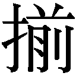った山形の最上義光さんと同盟しているのが効いていますね」
「なるほど」
「次に、ご母堂の義姫さま。最上義光さんの妹ぎみですね」
「の義姫どのか。梵天丸が妙に怖れているようだが」
「ご母堂はお父上とは正反対で、武勇知略ともにばつぐんに優れ、一騎打ちにおける実力は最上義光さん以上とも奥州最強とも言われ、周囲から怖れられています」
「ほう。鬼のようないかつい姿を想像してしまうな」
「いえいえ。姫に似て愛らしいお方ですよ？」
「そうなのか。そもそも梵天丸が愛らしくないのだが」
「う～！ 我は愛らしいにょだ！」
兼続は、ぺちぺちと梵天丸のお尻を叩いて黙らせた。
「くっ......かねたんごときにお尻を叩かれるとは、なんたる恥辱。おお、おお。魔族の天敵である日光さえ浴びてなければ！」
「いいから外出時くらいその南蛮合羽を被るのをやめろ」
「これはわが内なる魔王が覚醒せぬように封じ込めるための拘束具だククク」
「あーはいはい。小十郎どの。他に参加する方は」
「さらに、弟ぎみの竺丸さま。まだ歩けるようになったばかりの幼子です」
「こら、かねたん。我を無視するな。拘束具とはなんだ？ と驚け」
「驚いているぞ。梵天丸に弟がいるということに」
「我には妹がいるのだから弟がいてもおかしくにゃい！」
「お前の屋敷には妹のめごどのはいるが、弟の姿など見ていない」
「まだ幼い竺丸さまはいつもご母堂とご一緒ですので、南蛮お化け屋敷にひきこもっている姫と会う機会は少ないんですよ～」
「なるほど」
「ふん。竺丸は父上の子だからな。母上にひいきされているにょだ。家臣どもだって、我を引きずり下ろして竺丸をお世継ぎにしたがっているにょだ」
兼続は眉をひそめた。
輝宗の血をひいた弟がいるとなると、お世継ぎであるはずの梵天丸の立場はまことに微妙だ。
「あとはですね。姫のいとこにあたる伊達成実どのが来ることもありますが、成実どのはこのところ虫採りに忙しくて出席率は低いです」
「伊達成実？」
「姫と歳はほとんど変わらないんですが、背が高いので大人びて見える女の子です。ただ昔から三度の飯よりも虫が好きで、あはは」
「今日は天気がよいから、虫採りには絶好の日だな」
森の奥から、虫の羽音が聞こえてきた。
ぶう......ううう......ん。
いなごだ。
いなごの大群が、森の奥から飛びだしてきたのだ。
兼続は思わず刀の柄に手をかけていた。
「な、な、な」
「おお、成実ではないかククク」
「これは姫。お食事会へ行くのか」
森からいなごの大群を引き連れて、裸同然の上半身に緑色になめした革を羽織り、毛虫の前立てをあしらった鉄兜をかぶった一人の姫武将が薙刀を担いで現れた。
梵天丸のいとこ、伊達成実。
早熟なのだろうか、梵天丸と歳が変わらないようにはとても見えない。
というかわたしより発育がいい......と成実の胸元を見ながら兼続は嘆息した。
「ククク。成実は来ないのか」
「今日はいなごを採る日だ。今日を逃すとしばらくこれほどの大群には出会えない」
「虫が好きだにゃ、成実は」
「虫はかわいいだけでなく滋養豊富で栄養満点。姫もいなごの佃煮をたくさん食べれば背が伸びる」
「ぶるぶる。我はいなごの佃煮などいらん」
「......こんなにかわいいのに......」
待て。どうやっていなごを集めているのだ、なぜこんなにも寄ってきてるのだ、と兼続が思わず成実に問いかけた。
「姫。誰だこいつは。姫を攫おうとしているのか？ ならば」
殺す！ と成実が薙刀で兼続に斬りかかってきた。
足下を踏みしめることもなく、無造作に腕の力だけで。
おそるべき膂力、非常な速度、その腕前はまさに天才だった。
しかも、まるで躊躇していない。
兼続が武芸の達人でなければ、避けられずに一撃で落命していただろう。
「違う！ わたしは上杉家家臣、直江兼続！ 梵天丸を守りに来た」
「なんだ。違うのか、つまらん」
「成実。いなごを集める奥義を、かねたんに教えてやれ」
「承知した」
成実はしかし、口数があまり多くない。
かわりに弁が立つ小十郎が簡潔に説明した。
「成実どののお腹に鉄製の腰巻きが巻かれているでしょう」
「う、うむ」
「あの腰巻きの中にゼンマイ仕掛けのからくりが入っています。そのからくりが回転すると、虫にしか聞こえない音が出るんです」
「ほう......」
「その音に惹かれて、虫が集まってくるんです。成実どのが自ら作られたからくりです」
苦節三年ついに完成した「虫採り腰巻き」だ、といきなり成実が別人のように目を血走らせて唇をつりあげた。
まだわたしを殺すつもりかと兼続は焦ったが、虫への愛に目がくらんでいるだけらしい。
「これでいろんな虫をぶんぶんと集めて、佃煮食べ放題！ ウラ、ウラウラ！」
成実は妙な声をあげながら、いなごたちを引き連れて再び森の中へと走り去っていった。
「兼続どの。成実どのはああいう野生児のようなお方で、虫めづる姫と言われています」
「おそろしいまでの使い手だったが、ああ見えてまだ子供なのだろうか」
「そうですね。身体は大きいですが、成実どのは無邪気でまだ人の生き死にというものがよくわかっておられません。それゆえに戦う時は容赦がなく、とてつもなく強いです」
知将の小十郎どのと剛勇無双の成実。
梵天丸にはいずれ知勇の名将となる二人が両腕としてっている、と兼続は思った。
「乳も成実のほうがかねたんよりでかいな。ククク」
「ええい、貴様は黙っていろ！」
「お尻を叩くにゃ、叩くにゃあ！」
「お城が見えてきた」
南蛮合羽に身を包んだ愛姫が指さした先には、質素そのものといった風情のこぢんまりとした平城があった。
険阻な山岳を要塞化した越後上杉家の居城・春日山城に慣れている兼続は思わず、
「これが、本城？」
と本音を漏らしてしまい、縛られて馬の背に転がされていた梵天丸の足蹴りをお尻に喰らった。
「失敬なかねたんめが。越後にカエレ！」
噓やお世辞が苦手な兼続は時々、こういう失言をしてしまう。
だが、その米沢城にすんなりと入ることはできなかった。
「梵天丸。いつものことだけど、ただでは通さないわよ」
いったいなにごとだろう。
門の前に、若い姫が一人で立っていた。
まだ二十歳になるかならないかといううら若き艶やかな姫であった。
身体は小柄で細い。
だがその鷹のように鋭い目つきは、どこか梵天丸と面影が似ている。
「は、母上～！」
誰あろう、梵天丸の母、義姫だった。
「母上？ この姫がっ？ いくらなんでも若すぎる！ それでは十一、二歳かそこらで梵天丸を産んだのか！」
兼続は舌を巻いた。
「わわわわたしくらいの歳で、ななな南蛮人の男と契りを結んだというのか、この人は？ いったいどういう経緯でそういうはしたないことにっ!?」
それだけでもお堅い兼続にとっては鼻血が噴きだしそうなほどに信じがたい話だったが、義姫の細い身体から発せられている問答無用の殺気のすさまじさにもたじろがざるを得なかった。
義姫は見た目の可憐さとは裏腹に、猛獣のような激しい気合いの持ち主だった。
「得物はなんでもいいわよ。かかってきなさい、梵天丸」
顔だちはいかにも良家に生まれ育った愛らしい姫といった風情があるが、その獰猛な視線と見る者を圧倒する殺気の放ち方は、まさしく奥州最凶・最上家の血がなせるわざ。
最上家の家督を継いだ兄の最上義光も怪力無双として怖れられているが、その義光よりもさらに強いらしいという義姫の戦闘力は、ただごとではない。
なぜこれほどに強い姫が武将にならず、平々凡々とした伊達輝宗の妻としておさまっているのか、兼続にはなにもかも理解できないことだらけだ。
そして梵天丸は「あうううう。ぶるぶるぶるぶる」と涙目になって怯えている。
「自分の母親の前で怯える者があるか。しっかりしろ」
兼続は梵天丸の身体を膝の上に引き寄せ、縄をほどいてやった。
梵天丸は「あうあうあうあうあう」と泣きながら、馬を下り、義姫の前に立った。
震えながら、子供用の短い刀を抜いている。
「はははは母上、ごごごごご機嫌うるわしゅう。ぼぼぼ梵天丸は良い子にしておりましたたたたた」
「ほんとうに良い子にしてた？」
「そそそそれはもう。ううう上杉家からかねたんが参りましたので、うんとおもてなしして喜んでいただきましたっ♪」
「待て。わたしはおもてなしなど受けておらん！」
「えーい黙れ居候！ じゃなかった、我の母上の前でそのような怒声をあげてはいけまちぇんよ？ お行儀よくしましょうね、かねたんさま♡」
「ここまで表裏があるやつだったとは。それともこれが真の魔王とやらの正体なのか」
「やだなあもう。梵天丸は真っ白い天使さんなんでちゅよ、かねたんさま？」
「ええい。不気味だから目をぱちぱちしばたたいて頰を赤らめるのはやめろ」
「梵天丸。そろそろ伊達家次期当主のあなたがどこまで腕をあげたか、わたしが直接確かめてあげる」
「姫！ 修業の成果をご母堂に披露する時です！」
小十郎が声をからして梵天丸を励ますが、義姫と梵天丸とではその武威に猫と鼠ほどの圧倒的な差があった。
「どうしたの梵天丸。かかってこなければ、城には入れないわよ」
「はぐっ!?」
義姫がくいっと指を突き立てただけで、梵天丸はひきつけを起こしそうになっている。
「姉者、死中に活」
愛姫がかぼそい声をあげて拳をつきあげ、兼続は皮肉っぽく笑って梵天丸を挑発した。
「なるほど。ちび魔王の母親は真の大魔王だったというわけか。魔族階級とやらが違いすぎる。ちび魔王が勝てる道理はないな」
「だ、黙れ～！」
梵天丸は「くわっ」と目を見開き、刀を振り回しながら義姫へと突進した。
「うにゃああ！ 母上、僭越ながら参ります！ 十二使徒再降臨魔界全殺！」
「甘い！」
ガッッッッ。
義姫は、梵天丸のお腹を蹴り飛ばしていた。
梵天丸は「うにゃっ」と悲鳴をあげて転がっていた。
「ああっ。姫とボクがひそかに特訓してきた一撃必殺の突きが効きません......！ 通用しません......！」
小十郎が梵天丸を救いにかけつけようと一歩踏み出したが、義姫が視線でその小十郎を制した。
「まだまだね梵天丸。その小柄な身体じゃ、わたしの間合いに入るなんて無理よ」
「うぐぐ。と見せかけて、忍者手裏剣です母上っ」
「こんなへろへろの手裏剣なんて、効かないわね」
梵天丸が転がりながら器用に投げた手裏剣も、義姫は回し蹴りで簡単に払ってしまった。
そのまま義姫は跳び上がって、梵天丸へと接近した。
「死にたくなければこの拳を避けるのよ、梵天丸！」
「うにゃああああっ!?」
「両者とも、そこまで。これ以上は危険ゆえ」
母と子の決闘を止めた声の主は、小柄で風采のあがらない三十歳くらいの武士だった。
伊達輝宗。
伊達家第十六代当主。
戦はからっきしダメだが、徳人として知られている。
存在そのものがまばゆく輝いている義姫とは対照的に、ずいぶんと印象の薄い男だった。
その腕には、まだ幼児の竺丸が抱かれていた。
「ち、父上～！ 梵天丸は、良い子にしておりました！」
助かった！ とばかりに梵天丸は立ちあがり、輝宗に抱きついていた。
義姫は不満げである。
「えー。もう終わり？ まだ梵天丸への指導が終わっていないのに」
「お義。もうそれくらいに。今日は家族団らんを楽しむ日ゆえ」
「この子はわたしがこうして相手してあげないと、怠けてぐーたら遊び暮らすのよ？ 梵天丸は伊達家のお世継ぎなんだから、強い子に育てないといけないのに」
「お義のやり方はめちゃくちゃすぎるゆえ。梵天丸は神童とはいえ、まだ子供ゆえ」
「輝宗どの！ 梵天丸のしつけはわたしに任せてちょうだい！ わたしが伊達家に嫁いできてあげた時から、そういう約束だったでしょう？」
「......はい。そうでしたゆえ」
「伊達家の次の当主がまた輝宗どののような戦下手では、この家は最上に飲みこまれちゃうでしょう！ だからわたしはこうして梵天丸に武術の英才教育を施しているのよ」
「はい。そのとおりゆえ」
「梵天丸、母が抱きしめてあげるからいらっしゃい」
「は、母上は抱っこすると見せかけて我の関節を固めていきなり肘を外したりしないですよね？ 梵天丸は良い子にしておりました～！」
「どうかしら～？ 今日は肩関節を外すかもね。梵天丸？ 戦場で敵に組み敷かれた時には、自分で関節を外して脱出できないとね～」
「うにゃっ!? ぼぼぼ梵天丸は良い子です！ 父上、お助けを！」
「あー。うん......さ、さて、そろそろ余は食事をいただくとするゆえ」
「ちっ、父上～！」
もしかして輝宗どのは義姫どののお尻に敷かれているのかと兼続が小十郎にたずね、小十郎は「見てのとおりです」と情けなさそうな声で答えた。
「ここだけの話ですが、もしもご母堂が伊達家を乗っ取るおつもりになられましたら、一日で伊達家と米沢城はご母堂のものになるでしょう」
「伊達家はいつ最上家に乗っ取られても不思議ではないということか......」
「はい。しかしご母堂はそのようなお方ではありませんから。ああ見えて実は殿ととても仲がよろしいんですよ～」
「こ、この兼続には、男女の仲のことはまだよくわからん」
「それに、ご母堂は姫に大きな期待をかけておられます。いずれこの奥州を飛びだして竜として天に昇る子だと。厳しく武術を仕込まれているのも姫を英雄としてお育てするため」
「その前に、義姫どのの手で昇天させられそうだが？」
兼続には、この母と子の奇妙な関係がまぶしいもののように思えてならなかった。
しかしずっと伊達家に仕えてきた小十郎は、義姫も梵天丸もどちらも性格がおそろしく素直でないことを知っているから、気が気でないらしい。
「ご母堂の厳しいご指導が逆効果になっていることは否めません。姫は感受性が高すぎるのです。ご母堂に愛されていないから厳しくあたられる、と思いこまれているんです」
「誤解を解くために、じっくりと話し合えばよいではないか」
「ご母堂はああいうお方ですから」
小十郎は、梵天丸の行く先を心から心配している。
「月にいちどの家族の団らんを邪魔してはならないな。わたしは廊下で見張っていよう」
「あ。ではボクと一緒に見張り役をお願いします」
「しょ、承知した」
兼続がめずらしく気を遣ったのは、こうして話しているだけで心を奪われそうになってしまう小十郎の隣にはべりたかったからではなく、この家族にどこか近寄りがたいまぶしさがあったからかもしれない。
小十郎と兼続が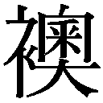を隔てた廊下に詰めて、万一に備えている中──。
伊達家の食事会がはじまった。
まだ乙女にしか見えない義姫が、ほとんどの料理を自分で作っている。
「さあ召し上がれ。南蛮や呂宋、琉球といった海の向こうの食材をたくさん仕入れて、わたし独自の創作料理を作ってみたのよ」
門前で梵天丸に稽古をつけていた時の殺意あふれる視線は、もうどこにもない。
武術から離れた義姫は、どこからどう見ても可憐な美少女。
梵天丸と竺丸、二人の子供を産んでいる母親だと言っても誰も信じるまい。
「ありがたい。ありがたいゆえ」
ましてや、この風采があがらぬ小男・伊達輝宗が義姫の夫だとは。
「器量よくしかも若いお義のおかげで、余は幸せ者ゆえ」
輝宗が義姫に対する態度には、妻を扱っているというよりは、どこか神さまに接しているかのようなうやうやしさがある。
いちどくらいは武神と化した義姫に襲撃された経験があるのかもしれない。
「お父上、お母上。めごはご飯をいただく」
「おうおう、めご。食べるがよいゆえ」
「めごどのは相変わらずおすこやかなようで、わたしも安心したわ」
「はい」
「梵天丸におかしなことをされていない？ 妙な儀式の生贄役とか」
「お母上。姉者は世界一優しい姉者。めごを泣かせるようなことはしない」
「梵天丸はめごどのに対してはずいぶんと素直なようね。素直になれる相手が片手の指ほどもいないのは困ったものだけれど」
「お義は、梵天丸を厳しくしごきすぎるゆえ」
「あら。それは梵天丸の父親がまるっきり武術音痴だからじゃないかしら」
「......余もご飯をいただくゆえ」
愛姫は今日も白い布を腕に巻いているが、別に怪我をしているわけではないことは伊達家の家族であればみな知っている。
「うー」
「ほら竺丸。粥よ」
「あむあむ」
義姫がほほえみながら、膝の上に座らせている竺丸に手ずから食事を与えた。
姉と幼い弟のように見えるが、実は母と子である。
「......うー」
梵天丸は、竺丸をうらやましそうに見つめている。
だが義姫が「？」と視線を梵天丸に向けると、
「......う......兎、食べたいなあ～......」
あわてて目をそらして、意味不明の言動に走るのであった。
「梵天丸。さっきの刀を使った技はまあまあよかったわよ」
「ほ、ほんとうですか母上！」
きらりん、と梵天丸の瞳が輝いた。
「でもその小さな身体では、戦場での太刀働きはまだまだ無理ね。間合いが狭すぎるもの」
「はい」
「殺傷能力をあげるには、手裏剣の技を磨いたほうがいいかもしれないわね」
「梵天丸は精進いたします、母上」
「戦場に出れば四方八方すべてが敵よ梵天丸。容赦なく問答無用に無慈悲に複数の敵を同時に殺傷する技術を磨きなさいね」
「はっはっは。さすがは母上、次は手裏剣に毒を塗って参ります」
「その意気よ、梵天丸。ただし毒を用いるならば、自分の身体を毒に慣らしておかなくては危険よ。時折、少量の毒を食べ物に混ぜれば慣れていくわ」
「ありがたきお言葉。この梵天丸、幸せにございます」
母親からこんな荒んだ言葉しかかけてもらえない梵天丸の内心はさておき、満面の笑みで殺伐とした会話をかわす母と娘であった。
「姉者、かっこいい......はあ......」
愛姫は、母親とそんな殺伐とした会話を続ける梵天丸をなぜか尊敬の眼差しで見つめている。
一方、これが最上の血というやつかのうゆえ、と輝宗は少し困惑していた。
お義がもう少し梵天丸に普通の母親らしく接してくれればよいのだが、まるで武術忍術の師匠ゆえ。
いくら学問を学ばせても梵天丸がどんどん妙ちくりんな方向に育ってしまうのは、もしかしたらお義の殺伐とした武術指導ゆえか。
「これ、お義。梵天丸をそのような人間兇器に育ててくれては困るゆえ。梵天丸はまさしく梵天さまの化身に違いない知恵のまわる神童ゆえ」
「輝宗どの。知恵がまわる上に殺人術にも長けていれば、戦場で不覚を取ることはないでしょう？」
「ふうむ」
「梵天丸に生きてもらいたいために、わたしはあえて鬼師匠となっているのよ」
「それはそうだがゆえ」
「梵天丸が成実のような強い身体を持って生まれてくれば、さほど技に頼る必要もなかったのだけれど。さあ梵天丸、たくさん食べて大きくなりなさい」
「は、はい母上」
いただくと言っても、義姫の料理は独創的すぎた。
南蛮やら呂宋やらの香辛料の香りが、日本古来の食材と微妙にミスマッチで、しかも見てくれも実にあやしげだった。
「梵天丸。これは、南国果実のぱいなっぷるを八丁みそと伯方産の塩で煮込んだ甘辛汁」
あやしかった。
「こっちは、南蛮渡来の唐辛子をたっぷりと使い、仕上げに越後の氷で麵を冷やしてしめた冷辛麵。口に入れると唐辛子の辛みと氷の冷たさが同時に襲ってきて最高よ」
やっぱり、あやしかった。
「これはノコギリザメの頭を煮込んで煮込んで煮詰めて煮詰めて真っ黒になるまで煮詰めまくった滋養強壮のための薬味よ。見た目はみそみたいだけれど味はまったく違うわ。野生原始の味とでもいうのかしら。ま、簡単に言えばうんこ味ね」
絶対に、あやしかった。
梵天丸はかつて義姫の料理にあたって死にかけた時のことを思いだし、震えが止まらない。
「は、は、は。さすがは母上、奇抜な料理ばかりですね」
「お愛想はいいから、食べなさいよ。食べないと大きくならないわよ」
「ぐぬぬ」
梵天丸は舌の感覚が鋭敏なので、義姫の失敗料理を口にするとダメージが大きい。
愛姫が無表情でぱくぱくとこの種のイカモノ料理を平らげられるのが、梵天丸はうらやましくてたまらない。
だがいちばんうらやましいのは、義姫に抱かれてお粥を手ずから食べさせてもらえる幼い竺丸だった。
毎日義姫と一緒にいられる竺丸と、月にいちどの食事会でしか会えずしかも毎回命のやりとりをさせられる自分とでは、同じきょうだいだというのにあまりにも扱いが違いすぎる。
しかもこの料理が、なんというか、たまらないゲテモノばかりなのだった。
愛姫はなぜか義姫の料理を大好物にしているが、梵天丸にとっては拷問にも等しい。
（小十郎はそうではないと言ってくれるけれども、やはり母上は我をお嫌いなのであろうか）
義姫は梵天丸に対していつも厳しい。梵天丸がそう思うのも無理はなかった。
「梵天丸。お前は天に選ばれし者ゆえ、梵天の名を授けたゆえ」
輝宗が「食べねばならぬのですか母上」と涙目になっている梵天丸の肩をぽんと叩いた。
「......父上」
「梵天丸のその紅い左の瞳は、そなたが天に選ばれし英傑である証拠ゆえ」
「父上」
「伊達家十六代の悲願、奥州統一はそなたが果たすゆえ。お義も余と同じく、そなたがいつか奥州の覇者になる神童だと信じているゆえ」
それゆえにお義はそなたを厳しくしつけているゆえ、と輝宗は言った。
「いつも言っているように、そなたにはいずれ伊達家中興の祖・伊達政宗さまの名を名乗らせるゆえ」
癖になっているらしい妙な語尾はともかく、淡々とした話し方であるがゆえに、梵天丸の胸を打つ言葉だった。
「あら。奥州の覇者なんて小さいわ。梵天丸の行く末は天下人、いえそれ以上よ」
「そ、それ以上とはいったいなにゆえ？」
「さあね。わたしにもわからないけれど、ただ......梵天丸は生まれてくるのが少し遅れたでしょう。世に出るには、残された時間が少ないの」
義姫は、甲斐の武田信玄、越後の上杉謙信、相模の北条氏康、そして尾張の織田信奈の名をあげた。
義姫は、まだ幼い梵天丸にこれら乱世の英傑たちと早く戦えとけしかけているのだ。
そんなの無理だ、と梵天丸は泣きたくなった。
それでも、梵天丸は襲ってくる身震いをかろうじてこらえた。
「天下を競う英傑はすでに成長して家督を継ぎ、覇を競って戦っている。梵天丸だけがまだ幼い。それなのにこの子は横着者で、目を離すとぐうたらしちゃうでしょう？」
「梵天丸をそんな獅子どもの群れの中に放りこむのは早すぎるゆえ」
「早すぎないわ。遅すぎるのよ。この子は臆病すぎるのだもの。家臣の前にもぜんぜん顔を出さないし、いつも髪と瞳を人目から隠しておどおどしているし」
「まだ梵天丸は子供ゆえ。いずれ度胸もつくゆえ」
「このままじゃダメだわ。伊達家の当主になるなんて無理だわ」
「余は伊達家のお世継ぎは梵天丸と決めているゆえ。梵天丸は神童ゆえ」
「もう戦国の世は終わりに向かっている。慎重な大器晩成型じゃダメなのよ。梵天丸がわたしのような強い性格であれば、心配はいらなかったのに」
「......」
梵天丸は無言で、義姫の料理をぱくぱくと口に放りこんだ。
（みぎゃああああ！）
悲鳴をあげそうになりながら、梵天丸は料理をかんでむりやりに飲みこんだのだった。
梵天丸が義姫の地獄料理を口にして悶えている時だった。
異変が、起きた。
「これは輝宗どの。お久しぶりでござる」
伊達家団らんの場に、招かれざる乱入者がやってきたのだ。
熊の毛皮を身にまとった男だ。
虎のような獰猛な視線は、義姫によく似ていた。
しかも背が高く筋骨隆々で、小男の輝宗と並ぶとまるで大人と子供のようだった。
「兄上。なにをしに来たの？」
「おお、お義よ。元気にしておったか」
この見るからに狷介そうな大男が、山形城主・最上義光だ。
知謀・武力ともに秀で、独裁体制を築くために父親や弟たち一族と容赦のない抗争を繰り広げ、越後の上杉謙信に奸悪の者と目をつけられている義光が、予告もなく米沢城を訪れたのだ。
「どうやって入ってきたの」
「ちょっとばかり山形から兵を率いてきてな。それに米沢城内にもオレとお義を応援してくれる者はいる」
義姫の正面にどかっと腰を下ろした義光の背後には、山形から来た義光の家臣だけでなく、米沢伊達家の家臣十数名が控えていた。
一同、異様な雰囲気である。
「......めご。廊下へ出て小十郎のもとへ」
梵天丸はとっさに愛姫を部屋から逃がしたが、自分は逃げ遅れた。
義光に見つかり、声をかけられてしまったのだ。
「おお梵天丸ではないか。伯父が飯をよそってやる、食え」
「伯父上。我はちと腹が痛くて、ククク」
梵天丸は忍法・畳返しを用いて畳をめくり、とっさに畳の下に隠れた。
義光に与しているらしい家臣たちに紅い瞳を見られたくなかったためだ。
見られれば、いよいよ「南蛮人の祟りだ」「伊達家も終わりだ」と騒がれることになってしまう。
「ふん。相変わらず兎のように臆病なやつだ」
義光は、酒をかっくらいながら輝宗に向き直った。
「義光どのは今も父君と争っていると聞くが、この輝宗が仲裁に入ってもよいゆえ」
「ふん。親父はもう押しこめて隠居させた」
「兄上、ほんとうなのそれは」
「おう。オレはな、お義。山形で終わる男じゃねえ。上洛して将軍さまに拝謁したこともある男だぜ。さっさと出羽一国を平らげて港を確保したいのよ」
「だからって、兄上」
「親父はよ、オレが甘い顔を見せてきたからつけあがったんだ。オレは修羅を喰らう羅刹よ、出羽三山の天狗魔王よ。その覚悟を山形の連中に見せつけてやったまでよ。これでもう二度と山形で反乱は起きないだろうよ」
最上義光はこともなげに言ってのけた。
「兄上は鬼ね」
「そう言うなお義。天下を狙う以上、しかたがなかったのだ」
輝宗は「それもまた戦国の世のならいゆえ」と静かに茶を飲んでいる。
「輝宗どの。そなたも梵天丸が伊達家の世継ぎでは心配であろう。なにしろ梵天丸はそなたの実の子ではない」
「兄上！ いったいなにを言いたいの？」
「まあお義も聞け。かつてオレはな、どこの誰とも知れぬ南蛮商人と恋仲になって赤子を身ごもってしまったお前の処遇に困り果てた」
「それはまあ、あの時家中は大騒ぎになったけど」
「あの忌々しい南蛮商人は国外に追放してやったが、その時にはすでにお義の腹は大きくなっていて取り返しがつかなかった」
義光は怒りに震えながら、盃に入った酒を飲み干す。
「オレの妹に手をつけるとは、あの南蛮商人は絶対に許せん。八つ裂きにしてやりたかったわ。なぜだ。なぜお義の子の父親が、オレではないのだ？」
「あのね。兄上が梵天丸の父親になってどうするのよ」
「よほど、この子はオレの子だ！ と宣言してお義ともども引き取りたかったわ！ うおおおお～ん、うおおおおお～ん」
「熊みたいな声で泣かないでよ！ やめてちょうだいほんとうに」
「だがなぜかこの国では兄と妹の祝言は禁じられている。結局オレは、隣国の伊達輝宗にお義を嫁にくれてやることにしたわけだ。まもなく梵天丸が生まれたわけだが、これがまた一目見て南蛮人の子だとわかる容貌の持ち主。梵天丸を見るたびにオレはあの南蛮商人を思いだす。忌々しくてたまらぬわ！ うおおおお～ん」
「そんな昔のことをいつまでも......いったいなにをしに来たのよ。帰ってちょうだい」
ぴたりと泣き止んだ義光は、輝宗の前に乗り出してすごんでみせた。
「輝宗。オレぁよ、南蛮商人の子を身ごもっているお義をあんたに押しつけた。今でも気がとがめてなぁ」
「押しつけられたのではないゆえ。余が、お義を見初めたゆえ」
「あえて伊達家のために言ってやるが、お前の血をひいた子を世継ぎにしたほうがいいぜ。ほれ。竺丸がいるだろう」
「世継ぎは嫡子の梵天丸ゆえ」
「梵天丸は最上の血をひいた子ではあるが、伊達家の子ではない！」
「お義は余の妻ゆえ、妻の子は余の子ゆえ」
義光に脅されても輝宗はまったく動じない。
義光が放つ凶暴な殺意の波動を、柳のようにさらりと受け流して泰然自若としている。
義姫は、この影の薄い輝宗を見直したように見つめている。
畳の下に隠れてお尻だけを出している梵天丸も、「父上......」と思わず涙ぐんだ。
しかし、奸雄の義光は今、伊達家内でクーデターを起こしているのだ。
竺丸を推している伊達家家臣団の一部を取り込んで、この場に連れて来ているのである。
「殿」
「伊達家は十六代続いた名門」
「お血筋が途絶えたならばともかく」
「竺丸さまがおわす以上、お世継ぎは竺丸さまでなければ筋がとおりません」
「梵天丸さまは嫡子といっても、殿のお子でないことは明白」
「嫡子のうちには数えられません」
彼ら竺丸派家臣団が手引きして、義光とその手勢を米沢城へと引き入れたのだ。
部屋の周囲を囲まれた輝宗と梵天丸は、義光がその気になればこの場で討たれるかもしれない。
梵天丸がいわゆる魔眼の相を家臣団の前に出せないでいるのも、この異様な雰囲気を察知しているからである。
うかつに魔眼を見せて恐怖させれば、家臣団は暴走してなにをするかわからない。
「兄上！ 伊達家を二つに割るつもり？ なんてことを！」
義姫が声をはりあげたが、義光は「まあまあお義。オレがお前を害するわけがなかろう。騒ぐのはおよし、なんちて」とうすら寒い冗談を口にして取り合わない。
「なあ輝宗。世継ぎを竺丸にすると宣言して、この場で隠居しろ。もちろん竺丸の後見人はこのオレだ。そうすりゃお前も梵天丸も命だけは助けてやる」
「兄上。竺丸はまだ喋れない幼子なのよ。いいかげんにしないと怒るわよ」
「お義、お前が伊達家をいつまでも乗っ取らないからオレが出て来てやったんじゃねえか。このオレの上手を行く奥州最強のお前が、なにが悲しくて米沢くんだりで南蛮人の子を育てなきゃならないんだ。さっさとこの兄とともに戦場へ出ろ」
「無駄だわ。わたしは武将にはならない、梵天丸を日ノ本最強の武将として育てると決めたのよ」
「それこそ無駄だ。梵天丸は見込みのないガキだ。見ろ、畳の下に隠れて尻だけ出してらあ」
義光に指さされて笑われたが、梵天丸は顔を出すことができない。
（父上はなにがあってもこの梵天丸を世継ぎの座から外さない。たとえ拷問されても......くっ。このままでは）
いっそこの魔眼からほんとうに敵を倒す怪光線が出てくれればいいのに、と梵天丸は歯がみした。
「おい輝宗。返答せい！ 抵抗すればどうなるか、察しはつくであろう！」
「輝宗どの!!」
「梵天丸の未来を閉ざすことは、余にはできぬゆえ」
「見てのとおりここに詰めている家臣団はみな竺丸派だ。どうするんだ、おい輝宗」
輝宗は、絶体絶命の窮地に追い込まれていた。
梵天丸は、輝宗を救わなければならない。だが。
（くっ。ダメだ。わが内なる魔王は覚醒してくれぬ）
やはり我は魔王などではなかったのか、真の魔王は自らの父と戦い勝利した最上義光か......我にはそのような真似などできぬ、と梵天丸の心は折れかけている。
たとえば自分が輝宗に弓をひくなど、梵天丸には考えもつかない。
ダメだ。我は最上義光には勝てない、と梵天丸はあきらめつつある。
やはり、生まれてくるのが遅かったのだ......。
（この梵天丸自らが世継ぎを竺丸にかえてくださいと申し出るしかない）
梵天丸は、震えながらそう決心しようとした。
その時、義姫が叫んだ。
「梵天丸！ 家臣たちの前に顔を出しなさい、そして絶対に世継ぎの座は譲らぬと宣言しなさい！」
魔眼を見せたら家臣団が怯えて父上の命が危なくなる、と梵天丸は驚いて固まってしまった。
「なにをためらっているの。この裏切り者の家臣たちに、確固とした意志を見せるのよ！ 不忠者どもを成敗しなさい！」
「......そんなことをしたら、父上が」
畳の奥から、梵天丸はへなへなと声をあげた。
「自分自身の居場所がほしいのならば戦いなさい、梵天丸！」
義姫のその声は、まるで悪鬼羅刹を従える毘沙門天のような怒気と鋭気に満ちていた。
「......父上を捨てることはできません！ 我は......」
「梵天丸！」
義姫が一瞬我を忘れたその隙に、義光は刀の切っ先を輝宗の首元につきつけていた。
これで、輝宗は完全に義光の人質に取られてしまった。
「兄上、やめて！」
「ふん。やめるものか。お義、お前のためにやってやってるんだ！ こんななよっちいボンクラは、お前の夫にはふさわしくないわ！ 米沢はお前の城ぞ！」
これで煮て食うも焼いて食うもオレの自由だ！ と義光はいよいよ輝宗を脅すが、輝宗はなおも顔色ひとつ変えずにいる。
「余は、梵天丸の足手まといにはなりたくないゆえ。殺すがよいゆえ」
「輝宗どの！」
「てめええええ！ なんだその目は！ 少しは怯えやがれ！ オレが怖くねえのか!?」
「......父上......！」
義光は激昂して感情だけで人を斬るような粗暴な男ではないが、まるで禅僧のような澄んだ輝宗の目を見ていると、どうにも腹立たしくて我慢がならなくなってきた。
（こいつがお義の夫だと......畜生......あの南蛮商人さえいなければ今頃オレは毎日お義と甘ったるい暮らしを）
義光は、現代風に言えば重症のシスコンなのであった。
大名らしく政略結婚もしているし子供ももうけているが、真に愛している女性は妹の義姫、ただ一人なのであった。
もちろん、この感情は純粋な愛である！
実の妹をぺろぺろしたいとかそういう邪悪な感情ではないのである！
義光はいよいよ輝宗が許せなくなった。
「ええい。いっそこいつと梵天丸をまとめて斬り捨てるか」
「兄上！ そんなことをしたら絶対に許さないわよ！」
「ははは。お義。お前にオレを斬れるのか。お前を目の中に入れても痛くないほど溺愛してきた兄を斬れるか。あの南蛮商人とお前が駆け落ちしようとした時にあれほど錯乱した哀れなお兄ちゃんを斬れるのかああああ！」
「......ダメだわ、兄上はいつもの理性を見失っている」
義姫は、義光が日頃は冷静だがいざ妹のことになると常軌を逸することがあると知っている。
南蛮商人と恋仲になったことが発覚した時の義光の取り乱し方とその後の行動はまさに異常。
義姫はそれゆえに、輝宗を人質にして立ちあがり「輝宗、世継ぎを竺丸に定めねばこの場で刺し殺す」と怒鳴り散らしている義光に攻撃を仕掛けることができなかった。
義姫が夫のために自分に刃を向ければ、義光は前後不覚となってほんとうに輝宗を刺し殺すだろう。
「かねたん。姉者とお父上を助けて」
廊下に詰めて事態を見守っていた兼続に、愛姫が抱きついていた。
「最上義光の奸悪ぶりは許しがたい。助けたいが、梵天丸本人の心が折れてしまって立ちあがることもできないのでは」
「まだ折れていない。あの紅い目を家臣たちに見せては取り返しがつかない混乱が起きるとわかっているから姉者は動けない」
「む。なるほど。米沢の連中はそこまで迷信深いのか、めごどの」
「お父上を助けて。お父上が殺されれば、姉者はその時こそ」
「その時こそ梵天丸の心が折れてしまうというのだな」
「お父上にとって、姉者は恋仇の子。それでもお父上は姉者をわが子として慈しんできた」
「兼続どの、お願いします。ボクが出て行きたいところですが、ボクは姫のお守り役。竺丸さまを擁立しようとしている者たちに君側の奸と目の敵にされています。かえってことを荒立ててしまいます」
義光に出し抜かれて不覚を取った小十郎は「姫の心を憎悪の炎で燃やしてはいけません」と歯ぎしりしている。
「殿のお優しき心は、姫の心の中に受けつがれています。ですがこのままでは姫は最上家のあらぶる血に支配されて、ほんとうに闇に落ちてしまいます」
「かねたん。姉者を助けて......！」
梵天丸はめごどのを実の妹同様に慈しんできた。輝宗が梵天丸をわが子として遇してきたその心が梵天丸に引き継がれているのだ、と聡い兼続は気づいた。
「そうか。梵天丸の心には、輝宗どのの善なる心が受けつがれているのだったな」
ここで輝宗を殺させてしまえば、梵天丸は悪の道へと向かってしまうだろう。
だが輝宗を救うことができれば、輝宗の優しさと最上家譲りの知謀を兼ね備えた梵天丸はいずれ奥州の竜となるかもしれない。
（謙信さまの予想は的中していたのだ）
兼続は立ちあがった。
「わたしが三寸の舌先で弁舌を振るい、反逆した家臣団と最上義光をひとまず黙らせる」
「お願いします」
「だが小十郎どの。部外者のわたしだけでは無理だ。梵天丸が家臣団の前に顔を見せねば、己の意志でこの局面に立ち向かわなければ、事態を収拾することはできない」
「これを」
小十郎が、妙に禍々しい気を発している黒い眼帯を兼続に手渡した。
普通のまともな眼帯ではない。
どこがどうとは言えないのだが、とにかく雰囲気があやしげだった。
南蛮のものではないが、またしても面妖な小道具だな、と兼続はいぶかしく思った。
「姫の弱点は、あの色違いの瞳です。ひとまずこの眼帯を姫に」
「しかし眼帯をつければかえって梵天丸は萎縮してしまうのでは」
「ただの眼帯では、そうなります。でも、この眼帯は特別なのです。きっと姫にとって力となります」
いかなる由来の眼帯なのかはわからないが、小十郎は折を見てこの眼帯を梵天丸に授けるつもりだったらしい。
「さすがは片倉小十郎。これで勝てる見通しがついた。かたじけない！」
兼続は、室内へと踏みいった。
「なんだ貴様は？」
義光がいぶかしげに兼続をにらみつけた。
兼続はしかし動じない。
兼続が弁舌を振るって勝てぬ相手は、南蛮お化け屋敷にこもっている時の梵天丸くらいのものだ。
「わたしは越後の上杉謙信さまにお仕えする、直江兼続という者」
「け、謙信だと!?」
「謙信さまは奥州の仕置きをいずれこのわたしに一任されるおつもりだ。謙信さまは奥州には最上義光という奸悪な男がいる、米沢の梵天丸に危害を及ぼすかもしれぬと仰せられ、かかる事態をすでに見通しておられた」
「噓をつけ！」
「噓ではない。謙信さまはこの世の悪を懲らしめるために義の戦を続けておられる。越後からほど近い山形にも正義の目を向けておられる」
「だとしても謙信は関東の北条と甲斐の武田を相手にしておって、山形に攻め込む余裕などないわ」
「甘いぞ最上義光。この兼続がその気になれば、三寸の舌先を振るって山形討伐軍をたちまち結成してみせる」
「ガキにできるものか」
「これはしたり。貴様が輝宗どのを解放して山形に帰らぬというのであれば、貴様を本日ただいまより上杉家の仇敵と認定する。この兼続と一戦に及ぼうではないか」
義光が「うおおおお、なんていやなガキだ！ したり顔をやめろ！」と喚いたが、兼続は相手を不愉快にするしたり顔で弁舌を振るうのがなによりも好きらしい。
義光は（なんでこんなやつがここにいるんだ）と計算違いの展開に迷った。
（......こんなガキはどうでもいいが、謙信が今出て来たらまずい。もっと領土を広げねえことには謙信と決戦なんざできねえ）
いっそこのガキをここで討ち果たすか。
いやいや、殺したら謙信にケンカを売ったことになる。
「輝宗。てめえのせいでオレが追いつめられてるじゃねえか！ なんとかしろ！」
「なんとかしろと言われても困るゆえ」
「なんとかしねえと殺すぞ！」
「だから、殺せばよいゆえ」
「うおおおおおお！ こいつにはまるで脅迫が通じねえ！」
輝宗の野郎はどうにも得体が知れない、やはり斬れるうちに斬っておこう、と義光は決定的な殺意を抱いた。
「しまった！」
つい挑発しすぎて最上義光を逆上させてしまった、と兼続は気づいたが後の祭り。
「出て来なさい、梵天丸！」
義姫が、悲鳴のような声をあげた。
「片倉小十郎どのがお前のために準備してきた眼帯だ、これをつけて事態を収拾しろ！」
兼続が、畳の下にいる梵天丸めがけて、眼帯を投げた。
梵天丸の小さな手が畳の脇から伸びてきて、はっし、と眼帯をつかんだ。
「姫！ その眼帯は、甲斐の名軍師・山本勘助さまから特別に譲っていただいたものです！」
片手に刀をかまえ、愛姫を守りながら室内へと入ってきた小十郎が、声をはりあげる。
「勘助どのは姫の境遇を聞くやいなや滂沱と涙を流されまして、『罪なき無垢な幼子のためならこの山本勘助、いかなる援助もいたしまする～！ 眼帯でも軍配でもさしあげましょう、よろしければ勘助の館にて姫をお預かりしてわが軍学のすべてを伝授いたしまする、お風呂にも入れてさしあげまする～』とそれはもう親切と善意のかたまりみたいなお方でした～！」
いやいや一部にめちゃくちゃいかがわしい情念が混じっていないか、と兼続はひいた。
家臣団の多くは、風説によって梵天丸が右眼を失っていると思いこんでいる。
つじつまを合わせるために眼帯をひとまず右の目に装着した梵天丸は、「おおお身体が軽い！ これが我の真の力か！」と叫びながら、畳の下から飛びだしてきた。
ちょちょーん。
かっこいいポーズ（梵天丸用語で「見得」という）を取りながら、家臣団と義光たちの前へと躍り出たのだ。
「......眼帯をつけると同時になぜか背中に悪寒が走ったが、まあよい。小十郎！ この山勘眼帯を得た我はもはや天下に怖いものなしだ、ククク」
おお梵天丸さまだ、と義光に荷担した竺丸派の家臣団が驚きの声をあげた。
今まで、家臣の前に顔を出そうとしなかった梵天丸である。
いつも南蛮お化け屋敷にこもっていて、が一人歩きしていた梵天丸である。
南蛮の祟りで左右の瞳の色が異なるというのは作り話で、実はふためと見られぬおぞましい容貌の姫らしい、などと一部でまことしやかに語られてきた梵天丸である。
だがその真実の姿はどうだ。
家臣団は思わず「ほおおお」「ほああああ」と怪鳥のごとき嘆声をあげていた。
梵天丸はその愛らしさと美しさで家臣団に崇拝されている義姫にそっくりで、しかもちんまりと小さくて、きらきらと輝く金髪は人間離れしている。
弱点のオッドアイを眼帯で封じたことで、梵天丸は自分の屋敷にいる時のように満面に生意気きわまる笑みを浮かべ、その愛らしさは輝くばかりに増していた。
「と違って、う、美しい！」
「か、かわいらしい姫さまではないか」
「お風呂に入れてさしあげたくなった」
「拙者は添い寝してさしあげたい」
「拙者は厠へお連れしたい」
「おのれ、今まで片倉小十郎一人がこのような愛らしい姫を独占しておったとは」
「片倉小十郎、我らはこの場で頭を丸めて殿と姫にお詫び申し上げるが」
「だがしかし片倉小十郎、貴様だけは殺す！」
「覚悟せい！」
「ひいい。どうしてボクが～!?」
男の子だと思われている小十郎は、不幸にも家臣団からの嫉妬を一身に背負うことになった。
「竺丸を担いで狐を城内に引き入れた家臣どもは今ここで父上に詫びを入れれば許してやるククク！ だが伯父上、お前はダメだ！」
最上義光も（うっ......お、お義が幼かった頃に生き写しの美幼女ぞ！）と思わずよだれを垂らしそうになったが、（いかん。オレは輝宗を人質に取っているのだった）とかろうじて踏みとどまった。
「ええいこのチビガキ、ダメとはなんだっ！ オレを殺すというのなら輝宗も道連れだぞっ！」
梵天丸はしくしくと泣きだし、大げさに手足を動かしまくって一人芝居をはじめた。
「おお......我には聞こえる。父上の心の声が......『余を最上義光ごと撃て！ 撃ち殺せ！ 梵天丸よ、自ら撃ち殺した父の屍を乗り越えた時こそそなたは真の魔王として覚醒できるゆえ！』」
「な、なんだとっ!? なんじゃ、そりゃあああっ!?」
「ちっ父上、そこまでこの梵天丸を愛してくださっていたのですか......！ ありがたき幸せ！ 遠慮なく撃たせていただきます！」
いや余はそんなことは思ってないゆえと輝宗が思わず口走ったが、梵天丸はすっかり自分の世界に入り込んでしまっているらしい。
ぽろぽろと泣きながら、梵天丸は「ちょちょーん」と右手を前へ突きだして「見得」のポーズを切り、叫んでいた。
「うっく。うっく。さっ、さらば父上～っ！ 者ども、撃て、撃つにょだ！」
げっ、と義光が悲鳴をあげた。
「ははは、座興はよせ。オレごと輝宗どのを撃てるはずがなかろう！」
だあん！
梵天丸に命じられた家臣たちが、天井へと威嚇射撃を放った。
「待て！ やめろ、やめろバカっ！ 冗談だ！ これはちょっとした座興だっ！ 撃つんじゃないっ！」
義光は、刀を放り出して降参した。
人質作戦は、相手が人質を撃てないからこそ成立する。
まさか梵天丸が竺丸派の家臣団の心を一瞬で掌握し、あまつさえ自分に酔って「さらば父上～！」と攻撃を命じるとは予想もしていなかった義光は、「座興だ」の一言ですべてをごまかすことにした。
この時点で義光の味方は山形から引き連れてきた数名の家臣たちだけになっている。
「お義、お前からも言ってくれ！ ぜんぶ冗談でしたと！ 頼むっ！」
「輝宗どのを放してくれるならね」
「放すが、オレの命も保証しろっ！ このチビガキはどうかしている！」
「梵天丸。このような兄でもわたしの兄上なの。もうケンカは終わったのだから攻撃はやめなさい」
「わかりました母上」
梵天丸の涙は、噓泣きの涙だったらしい。
輝宗が解放されると同時に、けろっとして邪悪な笑みを浮かべたではないか。
「あっ、噓泣きか。最初から撃つつもりなどなかったのだ。だまされた！」と義光は気づいたが、もう遅い。
なんという底意地の悪いヒネガキだ、オレが降参しなかったらどうするつもりだったんだと呆れつつも、自分ほどの奸雄をだましてこの窮地を切り抜けた梵天丸に対する恐怖心と猜疑心が義光の中でむくむくとわいてきた。
「梵天丸！ このままじゃ終わらねえぞ！ お前が伊達家の嫡子だなどと絶対に認めるか！」
「ククク。負け狐の遠吠えほど見苦しいものはない。カエレ、カエレ」
「このチビガキがああああ～！」
義光は歯ぎしりしながら、手勢を連れて山形へと引き返していった。
こうして、義光によるクーデターは未然に阻止された。
義光になんの文句も言わずに、それどころか豪華なおみやげまで持たせて帰らせた輝宗こそまことの名君なのかもしれないが、単になにも考えていないという可能性もある。
ともあれ──。
山本勘助の眼帯、略して山勘眼帯を手に入れて家臣団の前ではじめて活躍した梵天丸は、小十郎たちに抱きつかれて照れまくった。
「くっ。放せ。放すのだ。はずみで魔王が覚醒してしまったらせっかく守った米沢が危ない」
「姫、素敵でしたよ！ 撃て～と言いだした時は失神しそうになりましたけど～」
「眼帯をつけた姉者、かっこよすぎる......めごは姉者が好きすぎて生きているのがつらい......」
「まあまあ。そう褒めるなククク」
「わたしの正々堂々の弁舌と貴様のハッタリ戦術はまるで逆だな。もしも最上義光が降参しなかったらどうするつもりだったのだ」
兼続だけは「ついていけん」と青ざめていた。
「噓も方便というではないかククク。勝負ごとはな、勝てばよいのだぞかねたん」
「自ら輝宗どのを撃ち殺すはめになったらどうする、と言っている」
「かねたんの弁舌では父上を解放させることはできなかったではないか、ククク」
「むむむ」
「なにがむむむだ！」
だが、好事魔多し。
この日の夜のことだった。
風呂に入っていた輝宗が急に胸を押さえて「心の臓が苦しうなったゆえ」と倒れ込んでしまったのだ。
輝宗はもともと心の臓が弱く、疲労しきると時折こうして寝込むことがある。
しばらく安静にすれば回復する。命に別状があるような病ではない。
しかし、間が悪かった。
家臣団は「梵天丸さまが殿を射殺しようとしたために心労が重なったのだ」と誤解した。
さらに、家臣団の中からこんどは「梵天丸さまはおそろしいことをなされる」「いずれ伊達家を滅ぼすのではないか」「最上義光ごと殿を射殺せよと言いだすとは、やはり最上の血のなせるわざだ」と梵天丸のとっさの機知をあとから批判する者たちが現れた。
雨降って地固まるというわけにはいかず、伊達家はまたしても内部分裂寸前となった。
輝宗の血をひかない嫡子の梵天丸と、輝宗の血をひく弟・竺丸。
この二人が輝宗のもとにある限り、家臣団の分裂は避けられないらしい。
もちろん、性懲りもなく最上義光が山形にいながらにして伊達家臣団の再分裂を煽っていることは言うまでもない。
数少ない梵天丸派の家臣の中からは「いっそ竺丸さま擁立をはかる者どもを成敗しては」という声もあがったが、成敗するにはあまりにも数が多すぎた。
また、輝宗はそのような非情の措置をなせる男ではない。
家臣団の動揺は、これ以上放置してはおけないというところまで来た。
この事態を憂慮した義姫は、ついにある日、梵天丸を自分の部屋に呼び出して、打開策を提案するに至った。
「梵天丸。兄上はほんとうに粘着気質でしつっこくて、いちど抱いた恨みは必ず晴らす困った人間なのよ。伊達家の家督争いはますます激しくなるわ」
「うう。申し訳ありません母上」
「そもそも、輝宗どのが死んだらどうするつもりだったの」
「そこは賭けです。伯父上は破れかぶれになる人ではありませんから、追いつめればしらばっくれて戯れ言だと言いだし、刀を捨てるであろうと」
「賭けで自分の父親の命を失ったら取り返しがつかないでしょう」
「......あの時は、他に方法がなかったのです」
「兄だって逆上することはあるのよ！ あんな真似は二度としないように！」
「......はい」
義姫は、梵天丸が輝宗の命を危機に陥れたことを怒っていた。
梵天丸が「父上を撃て」と命じたのは芝居であったこと、本気で輝宗を撃つつもりはなかったことは、承知している。
だがもしもあの時なにか手違いがあれば、輝宗は義光ともども蜂の巣になっていた。
梵天丸は「父親殺し」の汚名を被ることになり、しかも輝宗と梵天丸は血がつながっていない。養子に等しい梵天丸が輝宗を殺せば、伊達家の家臣団は片倉小十郎などの一部を除いてほとんどすべて離反するだろう。
実際、すでに家臣団の多くが梵天丸の過激さを怖れ、竺丸派になってしまっている。
そもそも、義姫が梵天丸を素直に溺愛できず、竺丸だけを手許に置いている最大の理由は、伊達家の家臣団が梵天丸に反感を抱くようなことがあってはならないからである──。
（わたしが人目もはばからずに輝宗どのの実子ではない梵天丸を溺愛すれば、伊達家の家臣たちはわたしだけでなく梵天丸をも憎むようになる。母子不和であれば、梵天丸は同情されこそすれ憎まれることはない）
このような義姫の想いは、誰にも漏らしたことがない秘中の秘であった。
梵天丸にずっと寄り添っている片倉小十郎には気づかれているようだが......。
「梵天丸。才気というものは、見せびらかすものじゃないの。智者は慎重にことを運ぶものよ」
「うう。反省しています」
梵天丸は（我が父上の実子であれば、母上も家臣たちも我をほめてくれたはずなのだ......）と肩を落とした。
「しばらく米沢を離れたほうがいいわ」
「は、母上。それは......梵天丸に、米沢から出て行けとおっしゃるのですか？」
「家督を継ぐのをあきらめたふりをして、乱世に飛躍するために遊学しなさいと言っているのよ」
「うにゃっ？」
「兄上が天下盗りの野望を抱いたのは、若い頃に上洛したためよ。梵天丸も早く都を見たほうがいいわ」
「......うう。体のいい島流しなのですな、母上」
「違うわよ。どうしてそんなふうに考えるの？」
「......梵天丸は、父上の命を天秤にかけました。母上に憎まれても当然です......」
「憎んでなどいないって言ってるでしょう？」
「うぐぅ......憎んでいないのなら、どうして一言梵天丸をほめてくれないのです......」
「あ、甘やかしていたら、あなたはすぐに調子に乗って横着するでしょう？」
「うう......梵天丸は......」
義姫も梵天丸も、お互いにどうしても素直になれない。
義姫は家臣団の手前、梵天丸を溺愛できず、厳しくあたってしまう。
梵天丸は「南蛮の祟り」に憑かれて生まれてきた自分は義姫に嫌われていると思いこんでいる。
梵天丸派と竺丸派に家臣団が割れているのは、つまりはこの母と子のすれ違いが原因なのだった。
この状況を打破するには、梵天丸が伊達家の家督を継ぐと自分から言いだすしかない。
この時義姫は、できるならばこの場でその一言を梵天丸の口からひきだしたかった。
「梵天丸。だったら寝込んでしまった輝宗どのにかわって、兄上と合戦できる？」
梵天丸は義光の巨体を思いだして、震えあがってしまった。
舌戦ならともかく、あの伯父を相手に合戦で勝てる自信はない。
梵天丸は幼く、まだ初陣すら果たしていないのだ。
「......む、無理です......」
過酷ではあるが、やはり今の梵天丸にはさらなる修業と経験が必要なのだ。
梵天丸に足りないものは、経験と、そして自信だ。
ほんとうならば、義姫が梵天丸を抱きしめて自信を与えてあげなければならないのだが、今の義姫にはそれができない。
梵天丸が伊達家の当主となり、押しも押されもせぬ奥州の覇者になった時、はじめて伊達家の家臣団は梵天丸を真の伊達家の姫として認めてくれるはずだ。
そのために義姫は、梵天丸に次々と試練を与えなければならなかった。
「梵天丸。都へ行きなさい。兄上を超えるためのなにかを見つけてきなさい」
「伯父上を、超える......」
「海を見てきなさい。南蛮文化を見てきなさい。あなたのその目が南蛮の祟りなどではないことを知って、迷妄から覚めるために」
「わかりました。梵天丸は旅に出ます、母上」
梵天丸は義姫にぺこりとおじぎをした。
「ただし小十郎を連れていってはダメよ。一人で旅をなさい。自分を救えるのは自分だけ。あなた自身の心があなたを縛っているのよ。梵天丸」
「......わかりました」
梵天丸は震えながら、首を縦に振った。
けなげで可憐な娘だった。
梵天丸は母の愛を得たいがために、母のどのような無茶な命令にも必ず従うのだった。
（梵天丸を無理に伊達家の当主にしなくてもいいのではないか。天下を争わせる英雄に育てなくてもいいのではないか。ただ母と子とで、ひっそりと暮らして日々の幸せをかみしめて生きていけばいいのではないか）
義姫は、梵天丸の震える身体を抱きしめてあげたくなった。
だがあまりにも時期が悪い。
今ここであえて突き放して旅に出さなければ、梵天丸はおそらく世に出る機会を逸する。
（いけない。この子は感受性が強すぎる子だから。梵天丸が自分の心の闇に勝つには、自分の居場所を見つけるには、天下を争う英雄になるしかないの。わたしははじめからこうなることを覚悟していたはず）
その思いが、義姫を押しとどめた。
梵天丸を天下に羽ばたかせたいという想いと、梵天丸と普通の母子として暮らしたいという想い。自分の心が二つに引き裂かれていることを、義姫はこの時、はじめて知った。
傷心の梵天丸はその日の夜、屋敷で旅支度をはじめた。
「厳しすぎます。つい先日まで屋敷にこもっていた姫に一人で畿内へ行けだなんて無茶です」
小十郎が出発に反対したが、梵天丸は背伸びしながら「よいのだ」と小十郎の肩を叩いた。
「並の眼帯をつけていればみじめな気持ちにもなろうが、この大軍師から譲られた山勘眼帯があれば我は堂々と外の世界に出られる」
「姫」
「ククク。離れ離れになっても、我の心はつねに小十郎と一緒だ」
「うう......姫......立派になられて......今まではダメダメでしたが」
「う、うるしゃいっ」
小十郎は、この夜も一途に梵天丸を励まし続けた。
小十郎ははるばる甲斐まで旅をして山勘眼帯を入手してきただけでなく、この眼帯をつけた梵天丸にふさわしい伝説と通り名をも見つけてきたのである。
「仰せのとおり米沢を出られましても、その眼帯が姫を守ってくれるでしょう。ところでいにしえの唐国には隻眼でありながらそれは強い強い猛将、李克用さんという偉人がおりまして」
「李克用。ぴんと来ぬ名前だな」
「李克用さんは隻眼ゆえに独眼竜と呼ばれて敵に怖れられていたと言います」
「おお。独眼竜か──ククク。なかなかかっこいい通り名ではないか小十郎！」
梵天丸は、この独眼竜という言葉の中二的な響きがすっかり気に入った。
「姫も、独眼竜を通り名になさいませ」
「わかった、小十郎。よくぞ我にふさわしいかっこいい通り名を見つけてくれた、褒めてつかわす！」
「ありがとうございます！」
主従の抱擁を眺めていた兼続はいよいよ片倉小十郎という少年（ほんとうは女の子だが）に敬服した。
小十郎どのは梵天丸の鬱屈した思いを外の世界へといざなうために、ありとあらゆる可能性を探しては試してきたのだろう。なんという細やかな愛情であろうか......。
はっ？ もしかしてこの胸の高鳴りは恋？ まさかっ......わ、わたしは謙信さまと同じく生涯不犯を貫くつもりなのに、と一人で赤くなったり青くなったり。
「姉者。めごも眼帯をしてみた」
「めご。しばらく離れ離れになってしまう。すまぬ、すまぬ」
「姉者と再会するまで、眼帯を外さない」
「しばらく会えぬが必ず戻って来る。小十郎と成実と仲良くせよ」
「......はあ......姉者がかわいすぎて死にたい......」
そういうめごどのがかわいくてわたしは死にそうだ、と兼続は思った。
これまで恋だの家族だのに憧れたことはなかった兼続だが、梵天丸の屋敷で暮らしているうちに自分の中に家族を求める強烈な心があったことにはじめて気づかされていたのだ。
涙混じりの別れの夜であったが──。
「ウラ！ いなごの佃煮を餞別に持って来た」
成実だけは、なにがあっても成実だった。
梵天丸はそんな成実がよほど気に入っているらしく、この時は苦手ないなごの佃煮を「ありがたくいただこう」と頰張った。
もっとも、別れが辛いという理由とは別の原因で泣いていたが。
そしてこの夜、小十郎やめごどのと一緒に時を過ごしたい、もう少しだけこの米沢に留まっていたいという気持ちを兼続は断ち切った。
「こほん。お前が米沢を去るのであれば、わたしもいつまでも厄介になっているわけにはいかんな」
「やっと自分が無駄飯食いだと気づいたか。まったくかねたんは厄介者だな」
「黙れ！ 貴様は米沢の外をよく知らぬのだろう。わ、わたしが途中まで道案内してやってもいいぞ、梵天丸」
「いらん。余計なお世話だ。かねたんはさっさと越後へカエレ」
「なんでだ！ なんでだっ！」
「お前が小十郎やめごを見る目が、妙に艶めかしい」
「ななな、艶めかしくないっ！」
「かねたんには小十郎もめごもやらんぞ」
「きっ、貴様ああああ～！」
兼続が「情にほだされたわたしが間違っていた。やっぱりこいつはいずれ悪の魔王として覚醒して奥州に大騒動を起こすに違いない」と確信したのは言うまでもない。
梵天丸は「なぜ姫が一人で都へ？」「義姫さまに追い出されたらしい」「殿を射殺しようとして義姫さまの逆鱗に触れたとか」「どうなるんだろう伊達家は」「わからん」「殿も体調を崩されたままだし」「このままではいよいよ伊達家を最上義光に乗っ取られそうだ」と家臣団が騒然となる中、畿内へと遊学の旅に出ることになった。
第三の封印 邪気眼竜誕生
直江兼続に港まで送ってもらった梵天丸は、船に乗って堺に上陸し、そこから陸路で京の都に行く予定だった。
しかし、梵天丸は一目見て堺の町が気に入ってしまった。
「おおー。南蛮人や明の人や、どこの国から来たのかもわからないめずらしい人々が大勢いるではないか！ ククク」
この当時の堺は巨大な国際貿易都市として栄えており、外国から船で渡ってきた商人なども大勢堺を訪れていた。
その中には当然、赤毛や金髪の南蛮人もいるわけで、梵天丸はこの堺では異邦人という立場を感じる必要がなかったのだ。
同じ日ノ本なのに、堺は米沢とはまるで違う──広い海に連なる港を持つ町とはこのようなところなのか、と梵天丸は感激した。
（我はもう、このまま米沢に戻れぬかもしれぬ。母上や小十郎たちに会いたい）
そんな悲しみも抱きつつ、目の前に広がる異国情緒あふれるパノラマ風景に梵天丸はすっかり夢中になった。
堺を走り回っているうちに、梵天丸は衝撃の邂逅を果たした。
「くんかくんか。この香りは」
梵天丸の鼻を刺激する、甘辛いなんとも言えない食べ物の匂い──。
見ると、堀の脇に屋台が出ていた。
「今井のたこ焼き」
看板には、そう書いてある。
「......た、たこ焼き......いったいにゃんだこれは？」
わからない。
おそるおそる、屋台に近づいてみた。
片眼鏡をかけたいかつい男が、むすっとした顔で謎のたこ焼きを焼いていた。
梵天丸は、ぴょんぴょんと跳びはねて、たこ焼きを見物しようとした。
鉄板の中には丸い穴がいくつもあって、その穴の中におっさんが白いタネを注ぎこんでいる。
「おお、おぼこい南蛮のお嬢ちゃんやな。イスパニアから来はったんか、それともポルトガルのお子さまでっか」
屋台の亭主が、ぴょんぴょん跳んでいる梵天丸に声をかけた。
顔はいかついが、意外と子供には愛想がいいらしい。
「いすぱにあ？ 我は米沢から来た梵天丸だ、ククク」
「ほう。ヨ・ネザーワでっか。聞いたことあらへん国やな。世界は広い、ふうむ」
「違う違う。我の故郷は奥州だ。刀も持っているぞ」
「なんやて。お嬢ちゃんは、お侍さんなんか？」
「う、うむ」
やはり奇異な目で見られるのだろうか、と梵天丸が首をすくめた。
だが亭主は、
「最近は南蛮商人と日本の娘さんが祝言をあげる例も多くなってきましたからな。奥州も存外進んでおるんですなあ」
と梵天丸の頭をぽんぽん叩いて、豪快に笑ってくれた。
（南蛮人に慣れている堺の人間は、梵天丸を魔物だと怖れない。もしかしたら右眼の眼帯を外しても）
梵天丸はそう予感したが、さすがにまだ外す勇気はなかった。
堺の南蛮人たちの中にも、左右の瞳の色が違う者は見当たらないのだ。
「お嬢ちゃん、お父さんお母さんは？」
「我は、一人で堺へ来た」
「なんと。奥州からたった一人で？ 苦労してはるんやな、お嬢ちゃん」
「それより亭主。この、たこ焼きとはなんなのだ？」
「まず、小麦粉を溶いたタネをこの鉄板で焼きますんや」
「こんがりといい香りが漂ってくるぞククク」
「次に、このタネの中に、庖丁ですぱっと切ったたこの足を投入」
「おお！」
「この時、たこを入れ損ねることがおま。きっちりすべてのたこ焼きにたこを放りこむのが達人の技でっせ」
亭主は流れるような手つきで、次々とたこの足を切っては投げ切っては投げ。
梵天丸は思わず「おおー」と拍手していた。
義姫の妙に南蛮風を採り入れたイカモノ料理を思いだして、なぜか不意になつかしくなってちょっと泣きそうになったが、亭主のたこ焼き芸のすばらしさが梵天丸をへこませない。
「たこを放りこんだら千枚通しでひっくり返して、裏面も焼きます」
「庖丁に千枚通し。ずいぶんと兇器を用いるのだなククク」
「くり、くりっと」
「おおお！ おそるべき速度でたこ焼きが裏返るではないか！ 我にもやらせてくれ！」
「素人はんには難しい芸でっせ」
と言いながら、亭主は梵天丸を屋台の中に引き入れて、千枚通しを握らせてくれた。
ずいぶんと堺の人間はノリがいい。
「えいっ！ ぶすっ！」
「これこれ。全力でたこ焼きを突き刺したらあかん。端っこに千枚通しの先をひっかけて回転させるんですわ」
「刺してはいけないのか」
「刺さずに、端をくるっとまわせばよろしい。力は必要ありまへんねや。ほれ、力を抜いて」
「うにゃあ。これはなかなか難しい......武芸の心得に通じるものがあるなククク」
「あるかもしれませんな。自分よりも大柄な敵を倒すには、正面から力を加えるよりも虚を突いて少ない力で相手を転がすほうが効率がええ」
「ほう。亭主は武術もたしなむのか」
「たしなみ程度ですわ。この堺ではいかなる武家も暴れることはできまへんからな」
「どうしてだ」
「銭ですわ。堺には世界中から銭が集まっとる。武家といえども、これほどの銭の力にはかないまへん」
「にゃるほど、これからの世の中は銭か」
「逆にこの堺を押さえる大名が現れれば、その大名さんは天下人になれますな」
「ではこの梵天丸がこれより堺を占領する。覚悟しろククク」
「これこれお嬢ちゃん。千枚通しを振り回したらあきまへん」
「うにゃあ？ 武器をあっさり奪われたあ!?」
「お嬢ちゃんがまっすぐそれがしにつっかかってきたら、そら大男にはかないまへん」
「うう。策がないとたこ焼き師匠に勝つのは無理にゃのだ」
実はこの亭主、本名を今井宗久と言って堺有数の豪商なのだが、南蛮料理をヒントに開発した創作料理・たこ焼きを焼くのが好きで、時々こうして身分を隠して店先に立つのだった。
「お嬢ちゃん、宿はありますのんか」
「ククク。宿などいらぬ。我は故郷を追われた風来坊......そのあたりで猫と一緒に寝られればよい」
「あきまへん。夜が更けると子供攫いが出てきますで」
「みぎゃっ？ にゃ、にゃんだそれはっ？」
「南蛮には、露璃魂ちゅう心の病を患ったおっさんたちがおるらしいんですわ。露璃魂の病を発すると、なぜか童女をぺろぺろしとうなるとか」
「ろ、露璃魂？」
「未来語やそうな。未来の日ノ本には、露璃魂に感染した男がぎょうさんおるとか」
「み、未来語？」
「最近、尾張美濃あたりでは未来の言葉が流行っているそうですねん。露璃魂やとか魔坐魂やとか『はぁれむ』やとか」
「聞いたことがない言葉ばかりにゃのだっ!?」
梵天丸は、わけがわからない。
（南蛮魔族の物語にも登場しない耳慣れない言葉ばかりではないか。いったいどうなっているのだ堺は？ もしかして堺には我がまだ知らない強力な魔族がいるというのか？）
人を驚かせるのが趣味だった梵天丸だが、堺では自分が驚き役にまわっている。
ちょっぴり屈辱的だった。
一刻も早く謎と神秘に満ちた堺の全貌を知らねばなりゃない、と梵天丸は誓った。
「亭主。童女をぺろぺろとは、いったいどういう病なのだ。悪の香りがする。魔族の予感がする。我はとてつもなく興味をひかれるぞ、ククク」
「かわいそうな不治の病に憑かれた人たちや、お嬢ちゃんが近づくとかえって苦しめることになりまっせ」
「えーっ。ますます近づきたいにょだ」
「それより、ほれ。たこ焼きや。南蛮風味のそぉすを塗ってできあがり」
亭主が爪楊枝でたこ焼きを刺して、梵天丸の口の中に放りこんでくれた。
「あむっ......うっ、うまいいいいいいいっ!?」
梵天丸は泣いた。
この世にこれほどうまい食べ物があろうとは。
もともとが美食家で料理好きなだけに、感激もひとしおだった。
「堺にはこんなうまいものがたくさんあるのかっ!?」
「今井のたこ焼きがいちばん人気でおま。他にも、お好み焼き、焼きそばなどもありますな」
「にゃるほど！ とりあえず粉ものを焼くにょだなっ」
「焼くだけやのうて、南蛮風味のそぉす、ちゅうのが大事なんですわ」
「亭主！ 梵天丸を弟子にしてくれ！」
「弟子？」
「我は、堺料理を究めて屋台を持ちたくなった！」
「それはあきまへん。お嬢ちゃんのご両親の許可をえんことには、それがしが子供攫いになってしまいますがな」
「うにゃあ。ダメか......くくっ」
梵天丸は後年グルメ料理家として名を馳せることになるが、その素地はこの堺でのたこ焼きとの出会いによって形成されたらしい。
「うう。梵天丸が武士をやめると言いだしたら、母上からお叱りを受けそうなのだ」
亭主が「そや。南蛮寺を訪問しなはれ」と提案してくれた。
「南蛮寺。ほんものを見たことはないのだ」
「お嬢ちゃんはキリシタンらしいし、同胞のよしみで泊めてもらえばよろしい」
「待て亭主。我はキリシタンではないぞククク。南蛮魔族だ、あんち・くらいすとだ。つまり南蛮寺は我の天敵なのだ」
「ま、宗派は違えど似たようなもんでっしゃろ。こっちですわ」
梵天丸の自己紹介は聞き流された！
「はっ、放せえええっ！ ダメだ、聖水をかけられたら我は溶けるううう！」
「露璃魂に捕まる前に、南蛮寺にねぐらを確保したほうがよろしおまっせ」
梵天丸はかくして、魔族の仇敵がひそむ堺の南蛮寺へと連行されたのだった。
堺の南蛮寺には、少女宣教師のルイズ・フロイスが暮らしていた。
「はじめまして。あなたがヨネザワから来られた、梵天丸ちゃんですね」
「う、うむ」
「宣教師のルイズ・フロイスと申します」
「う、うむ」
清楚な修道女姿のフロイスと、漆黒の南蛮合羽を着た梵天丸の出会いの場は、南蛮寺の礼拝堂だった。
梵天丸は、はじめて異国の少女と会話したのだ。
フロイスは少女と言っても梵天丸よりもずっと年上のお姉さんで、梵天丸が「げっ？」と小さな悲鳴をあげてしまうほどに胸が大きかった。
いや。大きいというよりも、なにかの間違いとしか思えない。
梵天丸の母・義姫も米沢では無駄に胸が大きい姫君としてよくも悪くも評判になっていたが、フロイスの胸はそんなレベルではなかった。
実際、フロイスはヨーロッパで暮らしていた頃には魔乳の持ち主と呼ばれ、ただ胸が大きすぎて殿方の心を惑わせるという理由で魔女の疑いをかけられていたほどである。
梵天丸は、一目見てこのすばらしい抱き枕素材を持つフロイスが気に入った。
「ふ、ふわふわでふかふかなのだ。フロイスよ、こ、今宵より我の抱き枕になることを命ずる」
「まあ。梵天丸ちゃん、抱き枕ってなあに？」
「よいではないかよいではないか。夜になればわかることだククク」
「？？？」
「我はあまり手持ちの銭がなくてな。すまぬが泊めてくれぬか」
「話はうかがっています。いつまででもいてくれていいですよ、どうぞ」
「い、いいにょかっ？」
「ええ。ただ、堺ではキリスト教はあまり流行っていないので......信者の皆さんからの差し入れが少ないの。その日の食べ物にも不足するありさまで......それでよければ」
「流行っていないのか？」
「ええ。このあたりでは、大坂のにゃんこう宗という宗派が流行しているの」
「ふうむ。たしか、黒猫を拝む魔道の宗派だったか」
「あと、わたしは胸が大きすぎるので、堺の皆さんが、特に殿方がわたしを見て怯えるの......南蛮の娘は魔乳を持っていると......キリシタンは魔物だと......くすん」
「なんと。これほどすばらしい抱き枕を見て怯えるのか。愚かな連中だな、ククク」
「梵天丸ちゃんはわたしの胸を見ても怖がらないわね」
「当然だ。むしろ抱き枕にしたいにょだっ！」
「ふふ。お母さんを思いだしちゃうのかしら？」
「そそそういうわけではにゃいぞ」
この時代、ヨーロッパにも日ノ本にも「巨乳ばんざい」という思想はまだ生まれていない。
ことに女性の貞淑を重んじるヨーロッパでは、大きすぎる胸は罪悪であるとさえ考えられていた。
フロイスが乙女のまま修道女となりはるばる日ノ本まで布教という名の奉仕に来たのも、幼い頃から「魔乳」「魔乳」と周囲に怯えられ責められてきたからに他ならない。
程度の差こそあれ、魔乳の持ち主フロイスと魔眼の持ち主梵天丸は、はじめからどこか似たような生い立ちだったのかもしれない。
二人はたちまち、親友同士であったかのように意気投合した。
「でもこんなに幼いのに一人で堺まで遊学に来るだなんて、梵天丸ちゃんは勇気があるわね」
「は、母上に命じられたから来てやっただけだ。母上は我に天下を争わせたいとおぼしめしにゃのだ」
「天下を？」
「うむ。母上は奥州最強の姫武将であったが、幼くして南蛮人の子を、つまり我を身ごもったために天下争いの夢を断念したにょだ。だから、母上の夢を我が果たすにょだ......」
「まあ」
フロイスはその職業柄、数多くの子供たちに出会ってきたが、梵天丸ほど母親の愛情を渇望している子供ははじめて見た。
「偉いわね、梵天丸ちゃん。お母さんのことをとても好きなのね」
「べ、別にそういうわけではない！」
「この南蛮寺では、本心を語っていいのよ。宣教師は決して人の秘密を漏らしたりしないからだいじょうぶ」
「う、うにゃあ」
さわさわと頭を撫でられてしまった。
抱き枕としてすばらしいというだけではなく、フロイスはどこか小十郎を思いださせるような優しい笑顔で梵天丸に接してくれる。
しかも、南蛮から来た少女で、梵天丸と同じ金髪の持ち主でもあった。
（この黄金の髪の毛。間違いない。フロイスは我の実の父と同じ世界から来たのだ）
フロイスに対する仲間意識のようなものがすぐに梵天丸の心に芽生えたのは言うまでもない。
だが、残念ながら二人は仲間にはなれないのだ。
なぜなら。
「こ、この空間は息苦しいのだ。神めっ、神めっ......そのフロイスの胸元に輝いている銀の十字架が我の魂の波動をかきみだすにょだ！」
「梵天丸ちゃん？」
「フロイスは神の僕、我は神と永遠に敵対する南蛮魔族の魔王にゃのだ。宣教師と魔王は仲間にはなれぬのだ。おお、呪われしわが運命よ！ ダメだっ、フロイスを闇の世界にひきずりこんで堕落させるわけにはいかにゅ！」
「あの～、梵天丸ちゃん？ どうして眼帯を押さえてうめいているの？」
ごろごろごろ。
ごろごろごろ。
梵天丸が小さな身体をぴくぴくと震わせながら床の上を転がりはじめたので、フロイスは「すわ旅の疲れがたたって病に」と心配し、梵天丸の身体を拾い上げて抱きしめた。
フロイスの胸はふわふわでふかふかで、そしていい匂いがするにょだ、と梵天丸は感動したが、感動すればするほど心の中では正義と闇が、神と魔王が葛藤するのである。
「ちっ、違うにょだ。病ではにゃい！」
「まあ」
「フロイス。残念ながら我は、神の敵！ 南蛮魔族なのだ！ キリスト教のお話によく出てくる悪魔の眷属にゃのだ！」
「まあ、そうだったの。って、そんなわけないでしょう？」
「証拠はある」
「どういう証拠かしら？」
「それはまだ見せられぬ。それよりフロイス、我はまだほんものの聖書を見たことがない」
「聖書なら、ここにあるわよ」
「我は魔族ゆえ、宿敵である神のことを調べておかねばならん。敵を知る者はおにょれを知る！ 南蛮寺に来たあかつきには聖書を朗読してもらおうと思っていたにょだ」
「長いから、梵天丸ちゃんが興味のあるところだけをかいつまんで読みましょうね」
「魔族に神の秘密を教えてよいのか？」
「もちろん。キリスト教では、悪魔の王サタンはもともとは神に仕える天使だったと言うわ。その元の名は、明けの明星。ルシファー。美しい名前でしょう」
抱っこされた梵天丸はそのままフロイスの膝の上に座って、「おおお」と歓声をあげている。
「神の眷属が、魔族に闇落ちしたのか。仏の教えでは魔族が仏に降参して改心する話が多いのだが......やはり南蛮趣味はやめられぬなククク」
フロイスは、梵天丸が幼い見た目よりもずっと高い知能の持ち主であることをすぐに理解した。
ヨーロッパから来たフロイスにとって、教育水準が高い日ノ本の子供はみな知能が高くかつ気品があって美しい、いわば一種の天使のように見えているのだが、その中でも梵天丸は特別な存在のようであった。
「そうね梵天丸ちゃん。善と悪、光と闇、正義と不正は表裏一体だから」
だからフロイスは、聖書についてかなり突っ込んだところまで梵天丸に知識を与えてあげても理解してもらえるだろう、と思ってしまったのである。
敬虔で純真なフロイスには、「中二病」という概念がなかったのだ。
これが、梵天丸そして奥州、それどころか地球にとって大いなる運命の転機となった。
「善と悪は表裏一体か。しかし悪魔王サタンが実は天使だということは、神と悪魔の戦いとは自作自演なのではないかククク」
「そうね梵天丸ちゃん。いつかは善と悪の戦いに最終的な決着がつく、世界最終戦争ハルマゲドンによって、とも言われているけれど」
「世界最終戦争？ はるまげどんっ!?」
ずっぎゅーん！
ああ、ああ。
今、フロイスは梵天丸の中二マインドにダイナマイトを仕掛けて爆発させてしまった。
世界最終戦争ハルマゲドン。
それは一千年以上にわたり世界中の中二病患者を虜にしてきた、おそるべき中二イベント用語。
この世で最後の戦い、永遠とも思われていた神と悪魔の長い長い対立に完全な決着がつく、いわば宇宙のラストバトル。
キリスト教の世界に魔族だの魔王だのといった素敵な悪しき反乱者たちが大量にはびこっていることに気づいて南蛮趣味にかぶれていた梵天丸も、まだ『ヨハネの黙示録』についてはなにも知らなかった。
「はるまげどん。そ、そ、それはいったい、な、ななん、なんなのだっ!?」
「新約聖書の最後に収録されている預言書、『ヨハネの黙示録』で預言されている戦争の名前なの。って梵天丸ちゃん、身体が震えているけれどだいじょうぶ？ 怖い話だったらやめておきましょうね？」
「これは武者震いにゃのだっ！ 聖書の中に預言書があったにょかっ？ 『ヨハネの黙示録』っ!? それはなんだ、いったいっ!?」
「うーん。『ヨハネの黙示録』は教会では異端的な書として扱っていて、信者の皆さんには滅多に朗読しないのだけれど......ほんとうに怖くない？」
「怖くない！ いや怖いけれど、ぞくぞくするほどにおもしろいぞ！」
人を疑うことを知らない純真なフロイスは、「梵天丸ちゃんがこんなに喜んでくれるなら」と梵天丸を膝の上に座らせたまま、『ヨハネの黙示録』を朗読した──。
梵天丸の心の中で、第一の封印が解かれ、第二の封印が解かれ、第三の封印が解かれていく──。
「ハルマゲドンは、七つの封印が解かれることによってはじまるの。第一の封印が解かれると、白い馬に乗った騎士が地上に現れる。第二の封印からは赤い馬に乗った騎士。第三の封印からは黒い馬に乗った騎士。第四の封印からは蒼ざめた馬に乗った騎士──この四人の騎士を、黙示録の四騎士と呼ぶの」
「にゃんと？」
「『見よ、青白い馬が出てきた。そして、それに乗っている者の名は〝死〟と言い、それに黄泉が従っていた』」
「お、お、おおおお......かっ......かっこい......いいっ......!?（衝撃のあまり脳がしびれている）」
かっこよすぎる。この世に、これほどかっこいい預言書があっただなんて。フロイスのふにふにの膝を椅子にしてこんなかっこいい預言書を朗読してもらえるなんて。あああ堺に来てよかった！ と梵天丸は感動の涙をぽろぽろ流した。
「七つの封印が解かれたあとには、こんどは七つのラッパが鳴り響くのね。七つのラッパが天空に鳴り響くと、空から『にがよもぎ』という名の大きな星が地上に落ちてきたり、太陽や月や星が暗くなったり、いなごが大量発生したり、さまざまな厄災が起きるそうよ」
「おお、にゃんということだ！ やばいぞ人間！ がんばれ日ノ本！ はるまげどんは、はるまげどんはまだかっ？」
「えーと。まだもう少し先なの」
「おおう、まだ序盤戦だったとは！ もうこの時点でとっくに人間は絶滅している気がするが」
「わ、わたしもそう思うのだけれど、ここからが少し難解なお話になるの」
黙示録のクライマックスは、いまだにマニアたちがけんけんごうごうと謎解き合戦を続けているほどに難解、いや神秘に満ちたものである。
「七つのラッパが鳴り終わるといよいよ、地上に大魔王サタンの化身──赤い竜が降臨するの」
「赤い竜！ 竜は唐国の怪物ではないのか？ 南蛮にもいるのか？」
「梵天丸ちゃん。竜の伝説は世界各地に残っているのよ。もしかしたらはるかなる過去の時代には、ほんものの竜が地上に暮らしていたのかもしれないわね」
「おおおおお......」
「わたしも日ノ本への船旅の途中で、巨大な竜の骨を見たことがあるの」
「竜の骨──！」
梵天丸の心にこの時、「大航海魂」が植え付けられた。
世界の果てまで冒険して、伝説の竜の痕跡を見つけたい！ という激しい衝動である。
梵天丸の想像力と才気と妄想力と冒険心のすべてが、今、あどけないフロイスによってその封印を解かれて世界に放たれようとしている。
「フロイス。もっと。もっと読んでほしいのだ～！」
「はいはい。『見よ、大きな、赤い竜がいた。それに七つの頭と十本の角とがあり、その頭に七つの冠をかぶっていた』」
「おおおおお......これが赤い竜の登場場面か......！」
「この赤い竜が、地上の人々を支配するために海の底から『獣』──ビーストを召喚するの」
「びぃすと？ 召喚っ!?」
「『わたしはまた、一匹の獣が海から上がって来るのを見た。それには十本の角、頭が七つあり、それらの角には十本の王冠があって、頭には神を汚す名がついていた。わたしの見たこの獣はひょうに似ており、その足はくまの足のようで、その口はししの口のようであった。竜は自分の力と位と大きな権威とを、この獣に与えた』」
「お、お、おおおおおお......」
梵天丸はもう息も絶え絶えで、腰が砕けてしまってフロイスの胸の谷間に顔を埋めて「ぴく、ぴく」と痙攣している。
「お......お......おもしろい......!!」
「よかった。ちなみに赤い竜と獣の見た目はこういう感じらしいわ」
フロイスは、七つの頭を持つ赤い竜と獣が描かれている挿し絵を梵天丸に見せてあげた。
禍々しい。
あまりにも禍々しい挿し絵だった。
さながらその絵は、「真夏の映画祭り・怪獣映画大行進！」の予告編カットであった。
「この獣の正体は、隠されているの。預言書を解読すれば正体がわかるらしいんだけど」
「お、お、おおおお......どこまでおもしろいにょだ、黙示録は？ わ、我が謎を解いてみせるっ！」
「謎を解く手がかりは、この一節。『ここに、知恵が必要である。思慮のある者は、獣の数字を解くがよい。その数字とは、人間をさすものである。そして、その数字は六百六十六である。』」
「六六六......!! しかもびぃすとの正体は、人間にゃのかっ!?」
「ふふ。そうらしいわね。でも誰もこの謎を解いた人はいないの。正解は最初からないんじゃないかしら」
「我は神童・梵天丸である！ 我が本気を出せば、六六六の謎が解ける気がするっ！」
フロイスは梵天丸があまりに大はしゃぎするので、ついついディープな解説を続けてしてしまう。
「獣は、人々に獣の刻印をつけて支配するの。地上は悪魔の王国になってしまうのね。この時、天使が神から授かった七つの鉢を大地へ向けて傾ける。第六の鉢が傾けられた時に発生する世界最終戦争が──ハルマゲドン」
「はるまげどん......びぃすとが神の軍団に勝つのかっ？」
「神の軍団が勝利して、地上に千年王国を築くの。この千年王国の終わりに最後の審判が行われて、すべてが終わる......らしいのだけれど、このあたりになるともうわたしにもなにがなんだか......」
「せ、千年王国か！」
梵天丸は、「もうお腹がいっぱいで死にそうにゃのだ」と悶えながら、生まれてはじめてその天才的な頭脳を１００％解放して知恵を絞った。
六六六の数字とはなにか。
六六六が示している人間とは誰か。
（待てよ。赤い竜がびぃすとを召喚するにょだ。赤い竜とびぃすとは一心同体と言えるにょだ。この赤い竜の正体がわかれば、六六六のびぃすとの正体もおのずと判明するのではなかろうか......いや逆か。びぃすとの正体を突き止めれば赤い竜の正体も......ええい、さすがは聖書。ずいぶんと難しいぞ）
梵天丸は日頃は横着者なので頭をあまり働かさないが、本気になれば驚くべき速度で思考することができる......ただし本気になるようなことは滅多にない。
「ぼ、梵天丸ちゃん？」
「そうか。もしかして」
梵天丸は「もしや」と叫びながら、右眼の眼帯を外した。
オッドアイがあらわになったが、当人はそれどころではなくなっているらしい。
「これだ！」
そして、結論が出た。
「わかったぞフロイス。謎はすべて解けた」
「えっ？ ほ、ほんとうに？」
「六六六とは、これだ」
「が、眼帯？」
「我の眼帯をよく見よ！ 紋様が刻み込まれているであろう、ククク」
「......たしかに、三つの紋様が刻まれているけれど......」
「我は今までこの紋様を読めなかった。これは漢字でもなければ仮名文字でもない。南蛮で用いられている数字なのだ！」
ばーん！
６・６・６。
見よ。アラビア数字の「６」が三つ、禍々しくてあやしげな気を放つ山勘眼帯に刻まれているではないか！
「ぼ、梵天丸ちゃん？ これはこの国古来の紋様なのでは......６に見えるのはただの偶然で......」
「フハ。フハハハハ。そうだったのか！ 我の出現はすでにはるか彼方の南蛮で預言されていたのだ！」
「あの～？ ぼ、梵天丸ちゃん？」
「しかも我の通り名は、独眼竜」
「独眼竜？」
「小十郎が考えてくれた通り名だ。すなわち、竜という文字もまた、わが名に刻まれていた。これは偶然ではない」
「ぐ、偶然じゃないかなあ？」
「赤い竜と六六六のびぃすとの降臨は、この梵天丸が天下騒乱の日ノ本に降臨して大暴れする未来を示しているのだ！」
「な、なんですってー？」
「フロイス、見よ。わが魔眼を。紅い瞳だ。我こそが黙示録に預言されていた赤い竜である証拠だ」
梵天丸は、眼帯を外し素顔をさらしたまま、フロイスのほうへと振り向いていた。
フロイスは、この時、梵天丸がただ南蛮人の血をひく子供だからという理由で苦労してきたわけではなかったことを理解した。
オッドアイ。
ヨーロッパでもほとんど見ることのない、異形の瞳だった。
「六六六が刻印された奇怪な眼帯。紅い瞳。そして独眼竜という通り名。どうだフロイス、反駁できまいククク」
「それは。違うわ、梵天丸ちゃん。奇跡的に偶然が重なっただけで。考えすぎよ」
「黙示録の赤い竜と六六六のびぃすとは、我のことだ。やはり我は魔王だったのだ。母上が我を嫌うのも当然......」
「梵天丸ちゃん。そうじゃないの。そうじゃないのよ」
フロイスは、主がわたしにこの幼子の魂を癒やせと命じておられる、そのためにわたしをこのジパングにいざなわれたのかもしれない、と思った。
梵天丸の頭をなでようとした。
梵天丸はフロイスが自説を認めてくれないのが不満だったらしい。
フロイスの手を避けながら、泣き叫んでいた。
「フロイス。黙示録のびぃすとでなければ、我はなんだ！ 何者なのだ！」
「......それは」
「我は日ノ本の人間でもなければ、南蛮人でもない！ 我には、居場所がないのだ！」
わたしが修道女の道に進んだことには意味があった、とフロイスは知った。
誰かがこの子の心の傷を癒やしてあげなければならない、と知った。
「フロイスならばわかってくれると、思っていた、のに......」
フロイスは梵天丸の小さな身体を両腕で抱きしめながら、けんめいに頭をなでた。
梵天丸は涙をこぼしながら、「うーっ」と暴れた。
子犬のように、フロイスの腕にかじりついた。
それでもフロイスが決してあきらめずに梵天丸の身体を抱き続けると、少しずつ梵天丸はおとなしくなっていった。
「梵天丸ちゃんは、梵天丸ちゃんよ。だいじょうぶ。だいじょうぶだから」
「それでは、答えになっていない......」
「では梵天丸ちゃんがほんとうの居場所を見つけるまでのあいだだけ、暫定的にびぃすとになりましょう」
「暫定的に......？」
「はい」
「というわけで梵天丸ちゃん。髪を洗ってあげますね」
堺の南蛮寺はさびれていて、フロイスはその日の食べ物にも困っている。
だがこの南蛮寺、お風呂だけは豪華だった。
梵天丸はフロイスと一緒にお風呂に入ることになり、好奇心を炸裂させて目を輝かせている。
「おお。温泉のような湯船があるではないか」
戦国時代はまだまだ蒸し風呂のほうが多い。この堺でたっぷりと湯船に注がれたお湯につかれる幸運に出会えた梵天丸の喜びは大きい。
「しかもお湯の中でもフロイスを人間椅子にしてほわほわとくつろげる。最高だなククク」
「だ、抱き枕の次は人間椅子？ 梵天丸ちゃんって微妙に猟奇的ね」
「我は黙示録のびぃすとだからなククク。フロイスは悪に敗れて捕らわれた哀れな下僕というところか」
梵天丸はフロイスの膝の上がよほど気に入ったらしい。
ふにふにの背もたれが最高だと白い歯をこぼして湯船の中でご満悦だった。
「おお。直接見ると実にすごいな！ いったいなにが詰まっているのだフロイス」
「あ。梵天丸ちゃん？ あまり強く握らないように。痛いので」
「い、痛むのか。我は母上のおっぱいに抱きついた記憶がないので、よくわからぬ......」
「力を入れすぎなければ、だいじょうぶ。いくらでもどうぞ」
「うむ。フロイスは我の命令に逆らえぬのだなククク」
これほど優しいフロイスを魔眼の力で闇落ちさせてしまった我はなんという悪党なのだ......くっ、さすがは黙示録のびぃすと......と梵天丸はフロイスの胸に甘えながらうそぶいた。
「しかしフロイス。宣教師がこんな贅沢をしていていいのか」
「ふふ。ご近所に小西さまという熱心なキリシタンの商人さまがおられまして、薪はいくらでもいただけるの。廃材が余るそうなので、捨てるくらいなら使っちゃおうと」
「ふむ」
「小西さまには、梵天丸ちゃんのようなお子さんがいるそうよ」
「我のような？」
「ええ。小西さまとヨーロッパから来た女性とのあいだに、お子さまが」
「ほう......そういう魔族の子は、我だけではないのだにゃ！」
「魔族じゃないけど、そうね。梵天丸ちゃんと似ているわね。ふふ」
「そうか。いちど会ってみたいものだな、わが眷属に」
でもその子は残念ながら今は堺にはいないそうなの、とフロイスが微笑んだ。
「だがフロイス。お風呂には毎日入るにょか」
「宣教師は本来もっと清貧でなければならないのだけれど、ジパングの人は皆さんきれい好きだからこちらも身体をきれいに保っていないと。けっこうたいへんかも」
「そうだにゃ。風呂からあがれば、次は飯だな。我は鶏を食べたいぞ」
「そうねえ。食べ物は我慢してもらわないと。今夜はうこぎ鍋ね」
「そんなのいやだ！ 小西とかいう商人に、鶏を差し入れさせるにょだ」
「さすがにそれは......宣教師はささやかな施しだけで暮らすのが決まりなので」
「異国まで来てご面倒なことだなククク。どうせ我の魔眼に魅入られて闇落ちしているというのに」
「うーん。でも育ち盛りの梵天丸ちゃんの食べる分を工面するためには、皆さんからの差し入れの量を増やさないといけないかも」
「つまり信者を増やせばよいのだな。だが我は魔族、神の僕を増やすわけには......おお......なんという運命のいたずら！」
「ふふ。とりあえず、礼拝堂にお祈りに来てくださる方が増えれば解決するのだけど」
「お祈りか」
「毎日聖書の朗読もしているけれど、いまいち反応が薄いの。堺の人は商売第一という方が多いからかしら？」
「どのような朗読を？」
「わたし、山上の垂訓のくだりをよく朗読しているの」
こころの貧しい人たちは、さいわいである、天国は彼らのものである。
悲しんでいる人たちは、さいわいである、彼らは慰められるであろう。
柔和な人たちは、さいわいである、彼らは地を受けつぐであろう。
義に飢えかわいている人たちは、さいわいである、彼らは飽き足りるようになるであろう。
あわれみ深い人たちは、さいわいである、彼らはあわれみを受けるであろう。
心の清い人たちは、さいわいである、彼らは神を見るであろう。
平和をつくり出す人たちは、さいわいである、彼らは神の子と呼ばれるであろう。
フロイスが、透きとおった声で『マタイの福音書』の一節を読みあげた。
きれいな声なのだ......と梵天丸はつい神の子の言葉に聞き入ってしまい、「はっ？ いかん！ 神の精神攻撃にやられた！」とお湯で顔を洗った。
「平和を説く神の子か。殺すか殺されるかの殺伐黙示録とは正反対のノリだな、ククク」
「あのう。こっちが通常なのよ？ 黙示録は、ちょっと特殊なの」
黙示録は、迫害されたり戦争に巻きこまれたりして命を脅かされ、平和や愛を信じるだけでは生きていけないほどに追いつめられた人々の心を癒やすために書かれた預言書なのかもしれないわね、フロイスはそう梵天丸に語った。
「この乱世だ、フロイスの言葉によって魂を救われる者も多いかもしれんな」
「ありがとう、梵天丸ちゃん」
「だがこの堺は戦がないし、みんな商売で稼いで銭をたくさん持っている。清貧平和路線は少々受けが悪い気がするぞククク」
「そうね。人それぞれ、必要としている物語は異なるものだものね。梵天丸ちゃん」
「物語？」
「人間は、自分とはこのようなものである、世界とはこのようなものであるという物語を持たなければ生きてはいけないの」
フロイスは梵天丸がオッドアイをあらわにしてから、ずっと考えていた。
梵天丸に、なにを語ればいいのかを。
すべては神の御心のままに、という言葉では梵天丸は救われない。
「キリスト教も仏教も、すべては人間に『自分はこのようなものである、世界はこのようなものである』という物語を与えるために存在するようなものなの」
「ふうん。つまりは作り話か。なぜそのようなものを与えるのだ」
「人間はどのような不幸や不運を前にしても、自分と世界の関係さえ見失わなければ、自分自身が何者かということさえ見失わなければ、生きていけるの」
今は『我こそは黙示録のびぃすとである』という梵天丸自身の物語を信じていてもいい、とフロイスは優しく諭しているのだ。
「だが......しょせんは作り話なのだろう。噓ではないか」
「真実か噓かは、誰にもわからないでしょう？」
「それはそうだが」
「その人が生きていくための糧になるのなら、その物語はその人にとっては真実なのよ」
フロイスの優しすぎる笑顔を、梵天丸は正視していられなくなった。
すがりついて泣きだしてしまいそうになる。
「ではフロイスは、イエス・キリストの物語によって生きているのか？」
「わたしはこの世界から憎しみや争いごとを少しでも減らすために、宣教師になったの。キリスト教が絶対に正しい、とは思っていないわ。こういう考え方はカトリックでは異端とされるので、ここだけの話ね」
「つまり『平和をつくり出す人たちは、さいわいである』という言葉をフロイスは信じているのだな。そして、それを実践しているというわけだな」
はるか彼方の南蛮から命がけで日ノ本に渡ってきて、そんな噓かほんとうかもわからない言葉を信じて実行しようとしているフロイスはすごい、と梵天丸は感動した。
「神の眷属にもなかなか立派な者がいるのだな、ククク」
「わたしは故郷で黄金の国ジパングのお話を幼い頃からずっと聞いてきて、いつか行ってみたいと憧れていたわ。でも、現実のジパングはもう百年も戦争が続いていて、京の都は荒れ果てていて......これほど潔癖で礼儀正しくて頭のよいジパングの人たちがどうして戦争をやめられないのだろうと不思議でならないのだけれど、きっと、今のジパングからはなにかが失われているの。ジパングとはどのような国であるのかという物語が人々の心から失われている気がするの」
フロイスががんばればこの乱世は終わるかもしれぬぞ、と梵天丸は頰を赤らめてがらにもない台詞を口にした。
「でも......皮肉なことに、こうして宣教師が世界の隅々まで布教の旅に向かうようになって以来、かえって世界が悪しき方向に進んでいる気がするの」
「にゃに？ それは、どういうことだ？」
「ヨーロッパの商人や軍人たちの中には、船で訪れた町を占領してしまう人たちがいるの」
「にゃんと？」
「神の名のもとに宣教師の皮をかぶって、実際には他国を侵略するために活動している者もいるのよ」
「キリシタンに限らず、どこにでもそのような者はいるものだ。フロイスもたいへんなのだなククク」
「キリスト教が広まった町に乗りこんで言葉巧みに土地を奪い取る、そんな手口が横行している。わたしが愛してやまないこのジパングがヨーロッパ勢力に飲みこまれてしまう原因をわたし自身が作っているのかもしれない、と迷うこともあるの」
梵天丸は、そのような卑劣なやり口は悪の風上にも置けない、それは偽善というもっとも恥ずべき行いだ、と憤慨した。
これほど純粋に生きようとしているフロイスの心を傷つける奴は、絶対に許さん、とも。
「だいじょうぶだフロイス。そのような連中は、我がやっつけてやる」
「まあ。梵天丸ちゃんは優しい子ね」
「我はいずれ米沢へ帰り、伊達家の家督を継ぐ。いつかは天下を盗り、南蛮軍団とこのジパングで世界最終戦争はるまげどんを戦ってやるにょだ！」
「え？」
「ククク。南蛮の神の軍団よ、待っているがよい。最後に勝つのは神ではない、この黙示録のびぃすと・梵天丸だ！」
「あの......梵天丸ちゃん？」
梵天丸は今、やる気まんまんになっている。
「フロイスには感謝するぞ。つまり、我こそが黙示録のびぃすとだと信じ続ければ、必ず真実になるということなのだな！ 我はびぃすとでいいのだ！」
「な、南蛮軍団とハルマゲドンとか、ほんとうにそんなところに行き着いちゃダメよ？ それは行きすぎよ。あくまでも今はびぃすとになりきってもいい、ということで......つまり梵天丸ちゃんが自分に自信を持つことができたその時にびぃすとは卒業するべきで......あの、その......」
「キリスト教を隠れ蓑に他国を侵略するような手合いは、愛と平和を説くだけでは通用しない相手ではないか。武力も必要だにゃ。その武力を、我が手に入れる」
「ぼ、梵天丸ちゃんが手に入れなくてもいいのよ？ というか黙示録のびぃすとだなんて名乗ったら、かえってヨーロッパの強硬派を刺激して、ほんとうにハルマゲドンになってしまうかも......えっと......」
「フハハハハ。我はやるぞ！ 必ずやフロイスを悲しませる連中をはるまげどんでやっつけてやる！ とりあえず今夜はフロイスを抱き枕に任ずるのだ！」
すっかりできあがってしまったらしい梵天丸の両目が、らんらんと輝いていた。
「おおそうだ。南蛮と戦うためには、手始めに奥州の覇者とならねばならぬククク。さっそく明日からそのための大戦略を練るにょだ！」
「練らなくてもっ？」
「奥州を一撃で平らげることのできる、ものすごい秘密兵器を開発する！」
「開発しなくてもっ？」
「なんだか小十郎と似たようなことを言うのだ、フロイスは」
「普通誰でもわたしと同じ反応をすると思うのだけれどっ？」
ダメだわわたしの真意がどこかで間違って伝わってしまっている！ とフロイスはやっと気づいた。
そうよ、あなたこそが黙示録のびぃすとなのよ！ などと吹聴して梵天丸をけしかけた覚えはないのだが、気がつくとなぜかそういう結果になっていた。
（主よ。わたしは純真で幼い梵天丸ちゃんを、おそるべき魔道に導いてしまったのかもしれません。なぜかはわかりませんが、取り返しがつかないことをしでかしてしまった気がしてきました。ああ、どうすればよいのでしょう）
なぜだろう。
解いてはならない封印を解いてしまった、そんな気がする。
思わず、十字を切って神に祈ってしまうフロイスであった。
「いきなり人生に目的が見えてきた。自分の物語を持つということはこれほどにやる気を起こさせることだったのだなフロイス。ククク」
「そ、そうね梵天丸ちゃん」
「しかし世界広しと言えども、聖書に登場を預言されている英傑はこの梵天丸くらいであろう。フハ、フハハハハ！ ああ、呪わしい！ 神を殺すという運命を背負って生まれてきてしまった自らの因果と才能がなにもかも呪わしいぞ！ はは、はは、はあはあはあ......あ、熱いにょだ」
「そろそろお風呂からあがらないと、のぼせるわよ」
「......うにゅ......くたあ」
「きゃーっ梵天丸ちゃんっ!? ゆでだこみたいにのぼせちゃってる！」
堺の南蛮寺は期間限定で、梵天丸プロデュースによる「納涼！ 南蛮お化け屋敷」へと改装されることになった。
梵天丸とフロイスを引き合わせた豪商・今井宗久と、熱心なキリシタン商人の小西ジョウチンが「なんやおもしろそうでんな」「いかにも」とタッグを組んで、廃材を再利用しての南蛮寺の改装に着手したのだ。
「ククク。人は恐怖に興味を惹かれるにょだフロイス。一宿一飯の恩義を返すために、我が南蛮寺を訪れる客を増やしてやろうではないか」
「客じゃなくて信者さんよ、梵天丸ちゃん」
「まあ同じようなもにょだ。我を信じよ」
「ええ。信じるけど......この山羊の頭を被ったバフォメットの像はしまっておきましょうね？」
「なぜだっ？ 祭壇に山羊の悪魔を飾らねば、あんち・くらいすとの集会は開けぬにょだ」
「あはは。バフォメットを飾ったら、わたし、異端宣告されてしまうので......」
「異端宣告？ こっ、これはまた、かっこいい南蛮語なのだ！ それはいったいにゃんだっ？」
「正統なカトリック信者ではないと羅馬教会から宣告されてしまうことよ。異端は異教徒よりもある意味邪悪な存在として扱われるから、とても怖い目にあうのよ」
わたしはもともと異端ではないかと疑われているので、毎日「ジパングには悪魔の仏教徒がはびこっていますが、神のご加護によってカトリックが勝利しつつあります」とむりやり羅馬教会を持ち上げる日記を書き続けているの......こんな文章、書きたくないのに......とフロイスが肩を落とした。
「羅馬か。神の慈悲を説くくせに不寛容な連中だなククク。フロイスがあなてまされた時はわがあんち・くらいすと教団に大幹部として招聘してやるにょだ」
逆さ十字架を掲げた梵天丸と聖書を手にしたフロイスが「フロイスは神の名のもとにおいて、あなてま！」「やめましょう、そういう遊びは」とバルコニーで戦っていると、今井宗久が上がってきた。
「なにをわいわい騒いではるんでっか」
「おお。たこ焼き屋の亭主ではないか。貴様を神の名のもとにおいて、あなてまする！」
ぐさっ。
今井宗久の頭に、梵天丸が投げた逆さ十字架が刺さった。
「あ、穴手間？」
「これで亭主はもう教会から破門されたにょだ！ この世の地獄、あんち・くらいすと教団へようこそなのだ。ククク」
「梵天丸ちゃん、ダメですよものを投げては。すみませんすみません」
「子供は元気すぎるくらいがよろしい。そやけど、ずいぶんと人が集まってきましたな」
「え？」
「ククク。ちと見世物小屋っぽくなったが、これくらいせぬと堺では目立たぬからな」
梵天丸は南蛮寺の垣根を、壁画で覆わせた。
言うまでもなく、黙示録のびぃすとや赤い竜、黙示録の四騎士など、どこかおそろしく、そして謎に満ちた黙示録のキャラを総登場させて人目を惹かせたのである。
門の周辺には、
「金髪宣教師が説くこの世の終わり、世界最終戦争はるまげどんの大預言！」
「黙示録のびぃすとキター」
「ここに数字がある。知恵のある者はこの数字を解くがよい。正解者には米沢のお米一年分を進呈」
などなど、立て看板に煽り文句をびっしりと。
「おっかなそうやわあ」
「坊主が説く地獄巡りよりも、目新しいで」
「南蛮にも地獄があったんか」
「こわっ。南蛮妖怪の絵、こわっ」
「世界最終戦争ってなんや？」
堺の人々は好奇心が旺盛である。
キリスト教の世界にも実はおそろしげな預言モノがある、しかも見たこともない異様なモノらしい、と知って次々と南蛮寺に押し寄せて来た。
「まあ。嬉しいけど、あんち・くらいすとの教会になりつつあるような......」
「ククク。『ヨハネの黙示録』を朗読してくれればいいのだフロイス。あれは聖書の読み物だから、羅馬にバレてもあなてまとは言われにゃい」
「なんにせよ、注目されて流行るちゅうのはいいことですわ。そやけどお嬢ちゃんは幼いのによう知恵がまわりますなあ」
「我は身体こそちっちゃいが、中身は神童なのだ」
「だが一つ、それがしに提案が」
今井宗久が「眼帯は紅い左目につけたほうがよろしおま」と梵天丸に言った。
「なぜだ」
「この堺にはお嬢ちゃんの紅い瞳を怖れるような田舎者などおりまへんが、今回の演し物はお化け屋敷らしい怖い趣向を凝らしまくってますからな」
「うむ。まあな」
「ことに夜の薄暗い礼拝堂でその紅い瞳はちと迫力ありすぎますな。この演し物は客商売のようなものや、なにごともほどほどがよろしい。お嬢ちゃんの右目のほうは紅くないんでっしゃろ」
そうか、我の演出が出来過ぎていて怖すぎるか、と梵天丸はうなずいた。
「気を悪うされたなら、謝りますよって」
「いや、問題ない亭主。眼帯は魔眼である左目に付け替えておこう、魔眼を封ずればびぃすとの暴走を防ぐ効果もあるしなククク」
めずらしく素直になって眼帯の位置を左へと変えた梵天丸は、しかしこの時、なにかをひらめきそうになっている。
かくして、堺の南蛮寺は一躍大人気となった。
祭壇に立ったフロイスが澄みきった美声で『ヨハネの黙示録』を淡々と朗読し、小さな梵天丸が「赤い竜」や「黙示録のびぃすと」の自作着ぐるみを被って礼拝堂の中で大暴れ。
ついには、客席に詰めかけている人々の中から希望者に「黙示録の四騎士」の扮装をさせて寸劇に直接参加させるという荒技まで飛びだして、堺は黙示録の大ブーム。
梵天丸は、「万事派手好きの堺の人心をつかむには、内容よりもまず宣伝とハッタリで興味を惹くことにゃのだ」と自ら南蛮寺のハッタリ宣伝担当に就任し、黙示録の寸劇を大々的に宣伝して南蛮寺の知名度をアップしていった。
梵天丸の才能は、戦場における槍働きよりも、奇抜な発想でハッタリをかまして人目を惹くというところにある。
輝宗を最上義光の乗っ取りから救ったのも、思えばとっさに打ったハッタリ芝居の勝利であった。
梵天丸自身が、自分が芝居をしているか本気で暴れているか区別がつかないほどに芝居にのめり込む体質らしく、「我こそは黙示録のびぃすとである」と着ぐるみを着て騒いでいる時などは完全にびぃすとそのものになりきってしまい、神童現る！ と騒然となったほどである。
「キリスト教は貧乏礼賛な鬱展開ばかりかと思っとったけど」
「意外や意外」
「おそろしくて、目が離せんやないの」
「坊主の地獄巡り講釈よりもずっと迫力あるわー」
認知度があがれば、信者も差し入れも増える。
梵天丸も、鶏にありつけてほくほく顔。
フロイスは「やっぱり、あんち・くらいすと教会になりつつあるような」と苦笑いしながらも、梵天丸が「いける。我は神童だ。いけるにょだ」と自信をつけはじめていることを喜び、「山羊の頭で煮汁を作って客にふるまおう」とかその手の異端宣告確定行為を止める以外は梵天丸の好きにさせてあげた。
さらにフロイスは、利発な梵天丸が南蛮の文化に好奇心を抱いていることを知ると、望遠鏡を与えたり南蛮の暦を与えたりして、梵天丸にどんどん新しい知識を吸収させた。
すでに南蛮暦は、畿内の知識人のあいだでは「この国の暦よりも正確だ」と評判になっている。
日食や月食の発生日を当てる的中率なども、旧来の暦よりはるかに優れていた。
というのも日ノ本古来の暦法は、年を追うごとに徐々に秘奥義というべき重要な知識が失われてしまったため、この頃になると日食・月食をなかなか当てられなくなってしまっていたのである。
「南蛮暦はすごいな。米沢に持ち帰っていいかフロイス」
「ええ。どうぞ。でも」
「でも？」
「強引に南蛮暦を広めようとすると、騒動になっちゃうから。そこは注意しましょうね」
「ほう。騒動になるか」
「ええ。わたしも来日当初は暦の問題を深く考えずに、教えてはならない方に南蛮暦を教えてしまい、たいへんなことになってしまったから......」
「教えてはならないやつ？」
「都でジパングの暦をつかさどっていた貴族のご子息に南蛮暦を教えてしまったの」
以前、やまと御所の暦を作成している著名な陰陽師の家・勘解由小路家のお世継ぎがフロイスに「南蛮暦を学びたい」と申し出たことがある。
これが当主つまり父親に知れてお世継ぎの勘当騒ぎとなり、後継者を失った勘解由小路家はすったもんだの末、長年のライバル関係にあった土御門家に吸収合併されて事実上断絶してしまった。
日ノ本の暦法を一手に握っていた勘解由小路家断絶のきっかけは、実に南蛮暦の出現だったのである。
戦国時代における南蛮文明の登場は、合戦だけでなく陰陽師の世界をも激変させていたのだ。
「わたしが無神経だったの。暦というものは、その国の世界観そのものに等しい存在だから。簡単にかかわってはならなかったのね」
「にゃるほど。難しいものだな知識というものは。武器にもなれば自爆のタネにもなるのか」
「それからわたしはジパングの文化に寄り添って学ぶことにしたの」
フロイスは偉いな、と梵天丸は思った。
だが、より正確な暦を学ぼうとする者が、暦法をつかさどっている一族から追われるだなんて、梵天丸にしてみればバカらしくてたまらない。
（奥州の大名どもが婚姻同盟を結びまくってちんたら田舎合戦を続けているのも、不正確な暦を改めようとする者が追われるのも、同じことだ。南蛮文化が続々と流入して世の中が変わってしまっているのに古い権威がいつまでも居座っているから、この国はめちゃくちゃなままなのだ）
この時、梵天丸は決意した。
（ククク。戦国乱世がはじまって百年も経つというのに生まれ変われぬ愚かな人間どもよ──やはり時代はこの梵天丸を望んでいる。古き秩序を破壊する黙示録のびぃすとが暴れなければ、千年王国を建国することはできない──）
どうやら、日に日に中二病が進行しているらしい。
「フロイス。いずれ我は港を盗り、大きな船を造って南蛮へ使者を送る」
「まあ。ヨーロッパと貿易をはじめるの？」
「世界最終戦争はるまげどんを開催するから日ノ本へ来い、と招待してやるのだ」
「......はあ......主よ、梵天丸ちゃんはまだ子供なのでお許しください」
この短い堺遊学時代、梵天丸は南蛮寺で朗読会にたこ焼き修業にお風呂に南蛮暦の習得にフロイスの抱き枕とせわしなく暮らしながら、米沢の人々にせっせと手紙を送った。
堺での自由な暮らしを満喫しながらも、本音では寂しくてたまらないのである。
『母上。我は今、堺の南蛮寺であんち・くらいすとの尖兵として活動しています。京の都にもそのうち行くつもりですが、南蛮寺の宣教師のフロイスが泣いて我に助けを乞うのでもうしばらく堺にいてあげるつもりですククク。ぼんてんまる』
『小十郎。最近では我も抱き枕なしで眠れるようになってきて、我ながら成長したものよと自分で自分のいじらしさがかわいくて死にそうである。決して堺で新しい抱き枕係を見つけてふわふわほわほわと安眠しているわけではないのでヤキモチは焼かないようにククク。ぼんてんまる』
『めごには、おみやげを持って帰ってあげよう。堺には、たこ焼きというすばらしい食べ物がある。だがこれは焼き方が難しく、たこ焼き屋の亭主からたこ焼き焼き器を盗み出さないと米沢では作れぬかもしれぬな。ぼんてんまる』
などなど、大量の手紙を米沢へと書き送った。
そんな中、小十郎からの返事が、次第に切迫しはじめてきた。
堺と南蛮寺を巡る状況も緊張を増してきた頃である。
まず、フロイスが都での布教活動にあたって頼りにしていた足利将軍が、松永久秀たちに襲撃されて明へ亡命。
将軍家なきあと都で権力を伸ばしてきたやまと御所の関白・近衛前久は、大の南蛮嫌い。都におけるフロイスの布教活動を禁止してしまった。
このためフロイスは都に入ることができなくなり、堺で足止めされたのだ。
さらに、美濃から織田信奈が上洛してきた！ 堺も火の海になるかもしれぬ！ とその堺もまた騒然となっていたある日。
『輝宗公は快復されましたが、最上義光さんが米沢を奪おうと再び暗躍しはじめています。ご母堂は兄上に対してあまり口を挟めないようですし、竺丸さま擁立派が急きょ竺丸さまを元服させて伊達小次郎と名乗らせまして、いよいよお世継ぎ問題に端を発する家臣団の対立は深まっております。なにとぞお早い帰国を。こじゅうろう』
この手紙を受け取った時、梵天丸はベランダでフロイスの膝の上に陣取って茶を飲んでいた。
「フロイス。どうやら米沢が危なくなってきたにょだ」
「まあ。では、梵天丸ちゃん。米沢に帰らなくては」
「だが今帰っても、仇敵である伯父上に勝つ算段がない。あれは悪知恵がまわる上に剛力無双、戦場では鬼のように強い」
「その上、お母さんの実のお兄さんでは、やりづらいわね」
「梵天丸はお芝居をやっていたい、合戦は勝手がわからぬ」
「そうね。梵天丸ちゃんはまだ子供だから。戦場に出るお年頃ではないかも」
「......だがこのまま米沢を放置していれば、母上にお叱りを受けるかもしれない」
「梵天丸ちゃん自身が、自分の進む道を選べばいいのよ」
「うにゃ～」
フロイスに優しく頰をなでられると、梵天丸は妙に落ち着く。
ひとたび落ち着けば、本来は明晰な頭脳がすらすらと動きはじめる。
「一気呵成に奥州の覇者になりあがれる大戦略を思いつけばよいのだが、どうも梵天丸は戦にはあまり興味がない。我は横着者なので、ハッタリをかますいんちき作戦しか思いつかぬのだ」
「真剣に戦をして勝つよりも、ハッタリで相手をだまして勝ってしまうほうが足軽さんたちの犠牲も少なくなるし、いいんじゃないかしら」
「そうか？」
「黙示録寸劇で人を集めてもキリシタンは増えないかもとわたしは最初心配していたけれど、梵天丸ちゃんの読み通りだったわ。まず興味をひかないと、その先には進めないことがわかったの。南蛮寺が軌道に乗ったのは梵天丸ちゃんのおかげよ」
「......えへへ......」
「甘い考えかもしれないけれど、梵天丸ちゃんならば戦でも同じように宣伝とハッタリで勝ちをおさめることができるかもしれない。真剣に戦えば多くの兵が死ぬけれど、もしも梵天丸ちゃんの流儀が通じれば」
「......そうだなフロイス。足軽も人間、一人でも犠牲は少ないほうがよい」
「ええ、そうなのよ。さすがは梵天丸ちゃんね。ほんとうに優しい子ね」
「なぜならば、世界最終戦争はるまげどんでは一人でも多くの兵が必要だからだ！ はるまげどんの前哨戦で消耗していては、狡猾な神には勝てぬ！」
「......ああ......主よ、梵天丸ちゃんはまだ子供なのです。神をも畏れぬ異端発言の数々、お許しください......」
堺に来た梵天丸は学んでいた。
人間の性格はどうも地域によって違うらしい。
堺の人々は黙示録をおっかない寸劇として楽しむ、いわばお祭り好きでスレた性格だ。
だが奥州の人々はもっと生真面目で純朴で、黙示録の寸劇を怖がりながら楽しむ余裕などまったくないだろう。
それは、梵天丸が堺で「南蛮寺のちびっこ」として人気者になっている現状と、米沢で「南蛮の祟りの子」として不吉がられ敬遠されてきた過去を照らし合わせれば、あまりにも明らかだ。
（待てよ？ 堺では黙示録芝居で大受けを取ったが、奥州でも黙示録を宣伝の武器として活用する方法があるのではにゃいか。奥州人気質に合ったやり方が）
梵天丸は、どうやらなにかをひらめきつつあった。
あと少しで、ひらめきが飛びだしてくる寸前まで来ているらしい。
だが、最後の一押しが出てこない。
「あうう。あまり真面目に考えこんでいても、ひらめきはやってこないにょだ」
「梵天丸ちゃん。そろそろ礼拝堂で朗読の時間ですよ」
「今日は寸劇はお休みする。狐のせいでお腹が痛いし......もうちょっとでなにか天才的な考えが出て来そうなのに、うう」
「そうね。じゃあ今日は朗読だけで終わらせましょうね」
この日、南蛮寺の黙示録朗読会に、一人の奇妙な訪問者があった。
その者こそ、出遅れてきた英雄・梵天丸の運命を大きく変える未来からの使者。
われらが相良良晴、通称サル。
相良良晴は二十一世紀の日本から戦国時代に突然流れ込んできた少年で、この頃は上洛を果たして一躍天下人に名乗りをあげた織田信奈の家臣として、また貧乳こそ美徳とされていた戦国時代の常識を覆す巨乳至上主義を唱えるおっぱい評論家として台頭しつつあった時期だ。
なお、われらが相良良晴はさらに、未来には露璃魂という不治の病があると唱えている。
これが、どうやらこの時代にも露璃魂がいるらしいというの出所にもなっている。
槍働きは苦手だし、見た目は並の下くらいといった良晴だが、時代を超えた未来人独特の視点の持ち主で、気むずかしい主君の織田信奈にもその点を高く評価されていた。
そんな未来人・相良良晴と、黙示録のびぃすととして目覚めつつあった梵天丸が、堺の南蛮寺で出会ってしまったのだから人間の運命とはまったくわからないものである。
とはいえ、おっぱい評論家の良晴は礼拝堂で出会ったフロイスのおっぱいに夢中になって、ちびっこい梵天丸は眼中になかった。
こいつのフロイスを見る目つきはおかしい！
邪悪とかそういうものとも違う、もっと危ないなにかを感じる！
まだ乙女になっていない梵天丸だが、そんな梵天丸にさえ感じ取れるほどに相良良晴が放つ気配はあやしかったらしい。
梵天丸はフロイスの身を案じ、相良良晴を倒そうと暴れたが、どこまでも寛容なフロイスに止められてしまった。
「ここは教会です。抜刀しては、いけません」
残念ながら相良良晴との武力対決は先延ばしにされてしまったが舌戦は止まらない。
「ククク、この梵天丸も子供ではない。決着をつけるのは後日としよう」
「子供だろーが、お前。俺のへそまでしか背が届いてないぞ」
「子供ではない！ 我こそはこの日ノ本の転覆をはかる破壊の大魔王、黙示録のびぃすとこと梵天丸なるぞ！」
決まった！ ちょちょーん！
「はあ、日本転覆だあ？ ずいぶん悪いガキだな。お尻ぺんぺんだな」
「こらー、我を抱きかかえるでない！ 放せ放さぬか！」
梵天丸は捕らわれてお尻を叩かれてしまった！
相良良晴は、子供相手でも容赦のない男であった。
こうして、梵天丸は「び、びぃすとの上を行く悪だ。いや、悪とか正義とかそういう尺度を超えた危険な男だこいつは」と相良良晴に調教されてしまった、もとい感服させられてしまったのだ。
さて。
その相良良晴は、ほんとうにヘンな男だった。
まず、俺は約四百年先の未来から来た未来人だ、という驚愕の自己紹介で梵天丸の好奇心をわしづかみにした。
魔王。黙示録のびぃすと。梵天丸は己自身を誰よりも奇怪な存在とすることで居場所を確保したつもりになっていたが、「未来人」とは。
これはもうあまりにもぶっとんだ存在である。
くっ、負けたかもしれん、と良晴の膝の上に捕らわれた梵天丸は歯ぎしりした。
さらに。
ヨーロッパでは悪魔的と怯えられ、日ノ本でも「牛みたいや」と奇異な目で見られていたフロイスの胸を、良晴はどういうわけか目を血走らせつばを飛ばしながら褒めちぎったのだ。
良晴は万事、思ったことをそのまま口に出してしまう単純な性格らしく、つまりフロイスの大きな胸こそが「大正義である！」と本気で訴えているらしい。
「そうなのですか？」
「ああ間違いない、断言する！」
半信半疑のフロイスを、良晴は「この時代の人間の美意識のほうが間違っている」「おっぱいと七つの海は男のロマン」「胸を張って威張れ」とわけのわからない言葉で絶賛しまくった。
どうやら相良良晴は大正義おっぱい教の信者らしい、と梵天丸は思った。
それにしても、「この時代の人間の美意識のほうが間違っている」という良晴の言葉は、梵天丸の心をわしづかみにした。
（我はずっと自分の魔眼をおそろしいもの、醜いものと恥じてきたが、そのようなことを言うこの時代の人間のほうが間違っているだと？ その発想はなかった！ こやつ、もしや天才か？）
我の魔眼が間違っているのではない。
間違っているのは世界のほうだ！
まさに逆転の中二発想！
この考え方はアリだ！ と梵天丸がひそかに感動しているあいだも、良晴はフロイスの胸によほど感激しているらしく、さらに斜め上を行く爆弾発言を繰り返した。
梵天丸のような異国人を親に持つ子は未来の日ノ本には大勢いて、しかも人気者だというのだ。
「ほんとうなのか。噓ならば叩き斬る」
梵天丸は、思わず口を挟んでしまった。
しまった、と気づいたが、もう逃げ場はなかった。
フロイスに髪を撫でられて勇気づけられながら、梵天丸は自らの身の上を未来人に語った。
複雑な出自のために母の義姫とぎくしゃくし続けていることなどを、語ってしまった。
同情されてしまうのも、もらい泣きされてしまうのも、いやだった。
哀れみの目で見られてしまうのは、もっといやだった。
だが相良良晴は、「信奈もお母さんとは不仲なんだぜ」とさらりと語った。
同じ悩みを抱えているのはお前だけじゃない、そう深刻になるな、と微笑まれているようだった。
梵天丸はなぜか、肩の荷がおりたかのような気持ちになった。
「信奈は保守的な人間のそぶりをして母に愛されることよりも、天下のために、民のためにうつけと笑われながらも天下を相手に戦う道を選択したんだ。あいつの目的は日本の平定じゃねえ。この国を、南蛮諸国と対等につきあえる国際的な貿易大国にすることだ。百年先、三百年先までを考えているんだ」
「......ほう」
織田信奈という名前が梵天丸の胸に刻まれたのは、この時である。
母親の愛をあきらめて、天下人になるという夢を選んだ織田信奈。
その夢の行き先は、海の向こうの世界。
梵天丸自身と境遇がそっくりでありながら、織田信奈は迷わずにひたすら戦い続け、ついには上洛を果たしたというのか。
織田信奈は仏敵である第六天魔王を自ら名乗っている、と聞いたこともある。
梵天丸は焦りを感じながらも、感動していた。
世の中には、すごいやつがいる。
自分には時間がない。
我は織田信奈に先を越されている、と知った。
「織田信奈は強いやつだ。梵天丸も、かくありたい」
梵天丸が目標とすべき人物が、ついに見つかったのだ。
（それでも我は、母上をあきらめることなど、できないかもしれないが......織田信奈はほんとうにすごいやつだ）
以後、梵天丸は、織田信奈に憧れ続けることになる。
そして、お調子者の相良良晴はこの日、梵天丸にもうひとつとんでもないものを与えた。
「相良。我のような者も、未来では人気者か」
「おう。保証するぜ。お前は眼帯してる上に南蛮好き、しかも黒魔術かぶれ。無駄にキャラが立ってるからな。邪気眼っつーか」
ああ。
ああ。
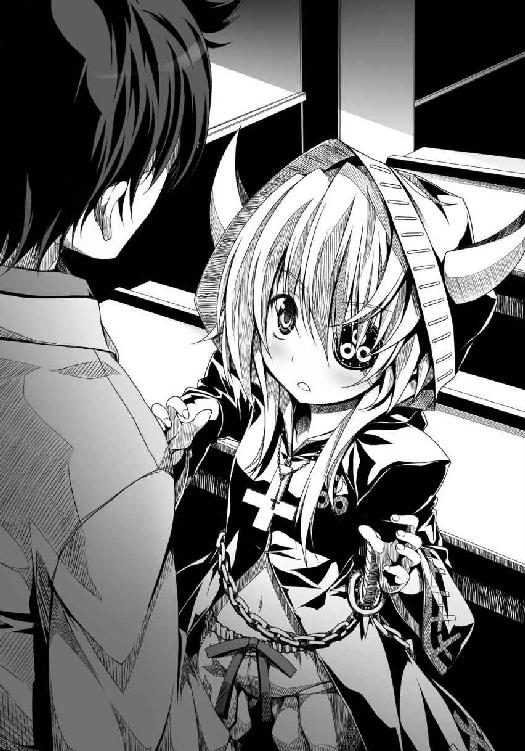
決して聞くはずのない未来語を、梵天丸は、聞いてしまった。
その時、歴史は動いた。
梵天丸、邪気眼という言葉に出会う！
邪気眼。
邪気眼。
邪気眼っ!?
いったいにゃんだそれはっ!?
（も、黙示録と出会った時以上だ。全身にびりびりっと稲妻が走った!?）
邪悪な気を放つ瞳、という意味にゃのかっ？
眼帯で隠しているわが魔眼の力をこいつは見破ったのか、さすが未来人！
しかし、なんと禍々しくてかっこいい言葉にゃのだ......！
「俺も言葉の意味はよくわからないけど、たしか眼帯しているほうの目におそろしい魔力が宿っていると言い張っているやつが語源だったかな？」
梵天丸の身震いは止まらなくなった。
おおお。
やはり見破られているにょだ！
相良良晴、おそろしいやつ！
「邪気眼。ククク、それはもしかしたら我のことかもしれぬ」
「またはじまったぜ」
「間違いない。なぜなら、我も魔眼の持ち主だからだ」
梵天丸は、フロイスに続いてオッドアイを見せてもよい相手に出会うことができた。
未来人・相良良晴。
この風変わりな少年の態度いかんで、梵天丸のその後の生涯が決定づけられると言っても過言ではない。
（未来から来た相良良晴は我の魔眼を怖がるだろうか。それとも）
もしも怖がられたら、梵天丸はこの世界の未来に絶望するだろう。
二度と立ち直れないほどの衝撃を受けるだろう。
だがフロイスが、怯える梵天丸の背中を押してくれた。
「眼帯を取って見せてあげましょう、梵天丸ちゃん」
フロイスはおっぱいを褒められたから相良良晴を信用しすぎているのだ！ と疑った梵天丸は暴れようとしたが、良晴はさくっと梵天丸の眼帯を外してしまった。
そして、感動して声をあげていた。
「これはみごとなオッドアイだ」
「お......おっどあい？」
「瞳の色が左右で違うキャラ設定のことを、オッドアイと言うんだ」
なんだそれは。またヘンな言葉を使って我をたぶらかそうとしている、と梵天丸は泣きたくなった。
なぜ、我はこやつに手放しで絶賛されているのだろうか？
こやつには、南蛮の祟りが怖いとか、そういう常識はないのか？ そもそも、我を哀れとも思わぬとはどういう了見にゃのだっ？ 少しは我をかわいそうな子だと思え。この無神経男めが。
もしかして我は悩まずともよいことをずっと無駄に悩んできたアホの子だとでも言いたいのか、相良良晴は？
梵天丸は、どういうわけか自分の紅い瞳を「きれいだー」とまじまじ眺めている相良良晴に罵詈雑言を雨あられとばかりに投げつけてやりたくなった。
腹が立った。
こいつは無神経とかそういうものを通り越した、ほんもののバカだと思った。
気を遣うとかそういう常識も知らないで「きれいな瞳だーすげえ」と大はしゃぎしている、どうしようもないアホ男だと思った。
しかし、そのどうしようもないアホ男の間が抜けた笑顔が、凍りついていた梵天丸の心を噓のように溶かしはじめている。
「ほんもののオッドアイは希少なんだぜ」
お前はお前のままでいい、お前は、梵天丸はこの世界にいていい、お前はお前のままですばらしい......そう言われているような気がした。
教えられるのでも説教されるのでも悲しまれるのでも同情されるのでもなく、ただ、相良良晴は梵天丸にありのままの事実だけを伝えてくれた、そんな気がした。
むろん当の相良良晴本人は思いついたことを叫んでいるだけでそんな深いことなど考えていないのだが、人は時折、ほんとうに自らが求めている言葉を、ずっと探していた言葉を、他人の言葉の中から不意に発見することがある。
梵天丸はこの時、たしかに相良良晴がそう語りかけてきていると感じたのだ。
「梵天丸。お前、ほんとに完璧だな。完璧な邪気眼キャラだぜ」
自分のすべてを、なんの欲得も理屈もなく、ただありのままに肯定された気がした。
信じがたかった。
「き......気持ち悪くないのか、相良」
「なんで？」
なんという緊張感のないアホ面だ。いちいち説明しないとわからないとは、ほんとうにこいつは救いがたい愚か者だ、と梵天丸は罵りたくなった。
お前ほんとにアホだな少しは我を怖れよ！ と言いたかった。
「この瞳を見ると、母親が南蛮人などと密通したから子が祟られたのだとみなが囁くのだ」
「はあ？ 祟り？」
「我の味方をしてくれるのは、お供の小十郎だけだ」
もちろん家族は別枠である。その点、梵天丸は父親と死別し母親と断絶してしまった織田信奈よりもずっと幸せであったと言える。
「もとはといえば、この瞳を隠すために梵天丸ちゃんはいろいろと自分にまつわるお話を作らなければいけなかったんです。黙示録のびぃすとに自分をなぞらえるのも──」
フロイスが、どうにも梵天丸を巡る事態を把握できていない良晴にフォローを入れてくれた。
「呆れるくらい迷信深い連中だな」
良晴は適当に耳をほじりながら、いとも簡単に片付けた。
「これは遺伝的なもので、祟りなんかじゃねーよ」
さらっと口にして、それで終わってしまった。
待て。簡単すぎるだろう、と梵天丸は思った。
なんかこう、なぜ祟りじゃないかという具体的な説明はないのか？
「ほんとうか？」
「当たり前だ」
なにしろ俺は未来人だぜ、と言いたげに良晴が微笑んだ。
はいはい。この未来人の俺さまが来たからにはもう湿っぽい話は終わりだ、とばかりに。
フロイスも梵天丸も、この時代の人間であることからは逃れられない。
しかし、相良良晴は異なっていた。
四百年以上も昔の時代の迷信など、歯牙にもかけない。視野に入らないのだ。
視野にすら入らない以上、悩んだり劣等感を抱いたりすることなど、あるはずもない。
未来人の相良良晴にとっては、はじめから梵天丸が悩むべき理由などどこにもなかったのだ。
「お前は、むしろいばれ」
「い、いばる？」
「お前は武士なんだから、それを武器にしろ」
「わが魔眼を武器に？」
「そのオッドアイで戦場に立てば、迷信深い敵さんは勝手にびびって逃げ散るぜ」
この時、梵天丸は。
「おお！ それだ、相良！」
これまでフロイスが見たことのなかった、満面の笑みを浮かべていた。
梵天丸の心の傷が今、信じがたい速度で癒えていく。
変化は突然に訪れた。
その変化に気づいたフロイスは涙ぐみながら、梵天丸の髪をわしゃわしゃとけんめいに撫でていた。
梵天丸の頭の中で、ずっとばらばらだったすべてのパズルのピースが、完璧にはまった。
（そうか。そうだったのか）
心の中で、梵天丸は叫んでいた。
我は、奥州の覇者になれる！
天は、あるいは魔王サタンは、複雑な方法を用いて我にこの魔眼を──いや、邪気眼を与えたのだ！
我は、母上の期待に応えられる！
なぜずっと悩んでいたのだろう。
はじめから、我はそのための武器を手にしていたのだ。
この邪気眼は、自分を傷つけ自分に怯えるために与えられたのではない。母上が我に奥州の覇者への道を上らせるために与えてくれたものだったにょだ。
急げ。急がねば。これは第六天魔王・織田信奈と黙示録のびぃすと、どちらが先に天下を盗りこの国を新しく造り替えるかの戦いだ！
「独眼竜政宗という通り名を名乗る予定だったが、相良のおかげでもっといい通り名がひらめいたのだ」
おいちょっと待て。独眼竜ってまさか、と良晴がなぜかはじめてあわてた表情を見せたが、奥州の覇者への道を発見して興奮している梵天丸はもう聞いていない。
独眼竜とは、片眼を隠すことが前提の通り名であった。
だが邪気眼竜は違う。
邪気眼竜は、左目を武器として戦場でさらすことが前提となる通り名なのだ。
「我こそは奥州の覇者、邪気眼竜政宗！」
第四の封印 人外鬼畜人取橋
「母上。これが堺で発明された、たこ焼き焼き器というものですククク」
威風堂々と米沢へ舞い戻った梵天丸は、さっそく伊達家の食事会でたこ焼きを焼いてみせた。
「すでにお手紙で逐一報告しましたが、堺は大勢の南蛮人や明の商人、あるいはどこの国の者かまるでけんとうもつかない異邦人であふれかえっておりました。我は南蛮寺の宣教師フロイスを魔道に導き、南蛮寺をあんち・くらいすとの寺に造り替えて魔族を続々と増やして参りました次第」
なんだかますますおかしな子になったわね、と義姫はため息をついている。
「姉者。たこ焼きを焼いて」
「うむ！ たこ焼きはうまいのだぞ、めご」
今井宗久のもとで焼き方を学んできた梵天丸は、自信満々、千枚通しでたこ焼きをくるっとまわして焼きあげてみせたのだが──。
「たこよりも、虫を入れるべきだった」
「姉者。これはまずい」
「うむ。真っ黒焦げで、かつ味も薄いゆえ」
「梵天丸。まさか、こんなものを学ぶために堺まで行っていたの？」
大不評だった。
作り方が珍妙すぎるのと、たこの食感の奇妙さ、炎の加減が難しいことによる焦げすぎ、そしてなによりも味つけがなされていないのが原因らしい。
「しまった。南蛮秘伝のそぉすの製法を教わっていなかった！」
成実やめごにまでダメ出しされるとは......梵天丸は己のたこ焼き修業がまだ道半ばだったことに気づくと「無念！」と眼帯を押さえてうめいたのだった。
堺から戻ってきた梵天丸の眼帯の位置が左右逆になっていることに最初に気づいたのは廊下で待機している小十郎だったが、梵天丸が重大な決意を持って帰ってきたことをすぐに察知した小十郎は敢えて突っ込みを入れなかった。
食事会が終わった。
愛姫、成実、小十郎が去ったのち──。
輝宗と義姫の前で、梵天丸は「お話があります」と切りだして驚くべきおねだりをした。
「我に今ここで家督を譲ってください、父上」
義姫は「まあ」と言葉を失った。
「梵天丸。あなたに時間がないと言ってお尻を叩いてきたのはわたしだけど、今ここでだなんて。いくらなんでも早すぎるわ」
義姫は戸惑っていた。
これがあの、自分や最上義光の前に出るたびにおどおどし、いつも屋敷にひきこもっていた梵天丸だろうか。
まるで別の子になってしまったかのように、堺から戻ってきた梵天丸は目を輝かせていた。その瞳はぎらぎらとまばゆい野望に燃えていた。
これまで抑圧されてきた才気のすべてが、いちどに煮えたぎって噴きだしてきたかのようなすさまじい梵天丸の迫力に、義姫ですら気圧されている。
「もはや一日も無駄にはできませぬ母上。すでにわが仇敵・織田信奈は上洛を果たし、京に自分の政権を作りはじめています」
「でも」
「奥州の覇者決定戦を行うべき日はわが計画のうちに決まっております。その日から逆算してことを興すとなると、一日の猶予もないのです」
「お、奥州の覇者決定戦？ 梵天丸、あなた堺で妙なものを覚えてきたのでは」
「母上。梵天丸は幼く身体も小さく、戦はからきし苦手ですが、知恵を用いて奥州を統一いたします」
「知恵を？」
「いまだ南蛮文化との接点を持たない奥州人はまことに迷信深く、堺の者どもと比べると数十年遅れた世界に暮らしております。その時間差を利用することで、この梵天丸が伯父上にさきがけて奥州の覇者となってみせます」
梵天丸が堂々と胸を張って義姫と問答を進めている横では、ようやく病が癒えて起き上がった輝宗が「ほうほう」とうなずき役にまわっている。
「梵天丸。あなたの頭の中では、すでに計画ができあがっているのね」
「ククク。然り。だが、誰にも全貌を明かすことはできませぬ。手品の種が漏れてしまえば計画が台無しゆえ」
「明かしてもいいところまででいいから、明かしてちょうだい」
「奥州の諸大名は婚姻同盟を結びまくることで馴れ合っております。本気で敵を討ち滅ぼす戦をする者などおらず、足利幕府があった頃のぬるま湯気分でいつまでも終わらぬ合戦を続け、時勢から取り残されています。そこで」
「そこで？」
「我は魔王として奥州全土に恐怖をばらまき、諸大名を震撼させ、敵として一カ所に集めます。いちいち一つずつ攻めれば何年もかかりますが、一カ所に集めた敵を打ち破れば一日で決着がつきます。ククク」
「奥州の慣習を破って四方八方を敵にするの？ 梵天丸、そんな無茶な」
「織田信奈が天下人になる前に奥州を平定せねばならないにょです！」
「奥州平定と言っても、北奥州と南奥州の両方を同時に盗るのは無理よ」
「北奥州は盗れれば盗るというかたちにして、我はまず南奥州の仙道筋を押さえます。仙道筋は関東への道。関東へ出れば、東海道が開けます」
仙道筋は、現代の福島県中部に伸びる街道筋で、南奥州のうち戦略的に最高に重要な地域である。奥州でもっとも栄えているこの仙道筋を平定してしまえば、梵天丸は事実上奥州の覇者となる。
また梵天丸が言うように、米沢から関東へ進出するにはどうしても通り道となる仙道筋を押さえねばならない。
「仙道筋には小大名が乱立していますが、最大の敵は仙道筋の西に控える会津の蘆名家、そして蘆名家と関係の深い関東常陸の佐竹家。この両家に勝てばそのまま関東平定戦へとなだれこめます」
「梵天丸。今、伊達家からその蘆名家に竺丸を養子として送り込む話を進めているの。いずれ竺丸が蘆名家の当主となれば会津は戦わずして伊達家のものに」
「竺丸はまだ幼いです。それでは時間がかかりすぎます、母上」
「すでに竺丸を元服させて、伊達小次郎と名乗らせているの」
「佐竹家も同じ手で蘆名家を乗っ取ろうとするでしょう。そして伊達と佐竹では佐竹のほうがずっと羽振りがよい。佐竹家が勝ちます。そうなれば竺丸の命は危うくなります」
梵天丸の言うとおりであった。
（やはりこの子は神童だわ。ずっと自分の生い立ちを気に病んで世間から隠れてきたはずの梵天丸だったのに）
それにしても、この梵天丸の自信はどこから来るのだろうか。
今までくすぶらせていた才気が、どうして突然爆発したのだろうか。
堺で梵天丸はなにを見たのだろうか。
義姫は、知りたかった。
「でも、山形の兄上をどうするの」
「神速で勝利をおさめれば伯父上と戦わずして勝てます。伯父上が動く前に仙道筋を平らげてしまえば、伯父上は手も足もでなくなります」
「兄上もあなたに負けず劣らずの知恵者よ。きっと兄上は邪魔をするわ」
「その時は母上に山形へ行ってもらって、伯父上を足止めしていただきます。いかがでしょうか、父上」
輝宗は、「梵天丸。今日からそなたが伊達家の第十七代当主ゆえ」とさらりと口にした。
梵天丸に家督を譲って隠居するという意味である。
「ちっ、父上......ありがとうございます！」
「輝宗どの？ あなたはまだ若いのに、隠居だなんて」
「余が年老いるのを待っていては、梵天丸は天下盗りの機会を逃すゆえ」
「それはそうだけど、でも、梵天丸はまだ幼いわ。竺丸を推す家臣たちも多いのに」
だが輝宗は、義姫ほどに梵天丸を心配してはいなかった。
「梵天丸。そなたはわれらにとってはいつまでも梵天丸だが、公の場ではこれより伊達政宗と名乗るがよいゆえ」
「伊達、政宗!!」
「今まで長らく口約束していたことではあったが、その約束を果たす日が来たゆえ」
梵天丸は身震いした。
伊達政宗とは、伊達家第九代当主。約二百年前に実在した英傑で、奥州を支配しようとした関東の鎌倉公方と干戈を交えた「伊達政宗の乱」の主人公であり、関東や都では奥州の驍将として知られていた。同時に、伊達家や奥州人にとっては奥州の独立性を守るために頑として中央に抵抗し続けたまばゆいばかりの伝説の英雄である。
幼い頃から、輝宗はいずれ梵天丸にこの政宗の名を与えるといつも言っていた。
かつては、父上はみじめな境遇に生まれた我を気遣ってくれているのだろう、と梵天丸はかえって息が詰まる思いがしたものだった。
堺では自信をつけ、小手調べのつもりで時折「伊達政宗」と名乗ってみたりもした。
だが、ほんとうにこの時が来るとは。
梵天丸は感極まった。
「伊達家中興の祖の名を、そなたに与えるゆえ」
「父上」
「これよりそなたは伊達政宗、天下に思う存分その名を轟かせるがよいゆえ」
義姫は（反逆者の名を継ぐとは。梵天丸......）と不安にとりつかれ、胸の動悸がおさまらない。
だがその不安を押し隠し、梵天丸にロザリオを手渡した。
「これは」
「由来は明かせないけれど、たいせつなものよ。梵天丸」
実の父から義姫に贈られた南蛮渡りのロザリオなのだ、と梵天丸は気づいた。
「母上、ありがとうございます......！」
第十七代伊達家当主・伊達政宗がこの日誕生し、伊達家の家臣団もまた電光石火の速度で再編成された。
輝宗を支えてきた老臣たちにかわり、梵天丸の小姓・片倉小十郎が一躍筆頭家老に。
また梵天丸のいとこ・伊達成実が軍を統率する大役を任された。
「ぼぼぼボクには無理ですっ」
「小十郎は辞退するがよかろう。それがしは引き受ける」
「小十郎。我を決して見捨てないと誓ってくれたではないか。頼む」
「......姫。わ、わかりました......！」
小十郎はこの時より、伊達家の内政外交軍略までを一手に引き受けることとなった。
（ああ。男装をやめる機会を逸しました。このままでは婚期が......）
という焦りもあったが、不安定な基盤の上に伊達家当主となった梵天丸を支えることができる家臣は、たとえなにがあっても梵天丸を決して裏切らない二人──自分と成実しかいない、と小十郎は自覚している。
「家臣団からますますねたまれるだろうが、我慢してくれ」
「そのようなこと。姫の笑顔のためなら、なにほどのことでもありません」
「ウラ！ 戦に勝てばいいのだ、姫！ 信頼を得るためには実績を作るのが早道！」
成実は「ついに姫が世に出る時が来た!!」とやる気まんまん。
「むしろ遅すぎたほどだ！ この成実、どこまでも姫のために大暴れして武勲を立てる！」
物心ついた頃から梵天丸とともに虫採りに興じて遊んできた幼なじみである成実もまた、態度には出さないが小十郎同様ずっと梵天丸の鬱屈した姿を見てやきもきしていたのだ。
「姫は虫のごときお人だとつねづね思っていた。虫とは不思議な生き物。地を這う芋虫が奇怪なサナギになり、時が来れば美しい蝶になる。姫は堺で、華麗で可憐な蝶になられた」
日頃は口数が少ない成実が頰を紅潮させてこれほど雄弁になった姿を、小十郎も梵天丸もはじめて見た。
「蝶はともかく、いなごはサナギにならんぞ成実。ククク」
「それはそういう虫もある！ ともかくわが命は、姫に預けた！」
「あ、ボクもです！」
「小十郎。成実。ともに、天下を盗ろう」
「承知。ただしそれがし、たこ焼きはご免こうむる」
「あ、ボクもです。あれはぷりぷりした触感が不気味で......」
「にゃんでだ。にゃんでだっ!?」
「ウラ！ お祝いに、カブトムシの幼虫の佃煮を二人へ贈ろう」
「いらん！」
「いりません！」
この家督譲渡劇は、伊達家臣団にとってまさに青天の霹靂だった。
竺丸派の家臣団は大騒ぎになり、竺丸を擁立しようともくろむ最上義光のもとへ使者を送ったりしたが、その時にはすでに輝宗は家督を梵天丸に譲って米沢城を去り、さっさと隠居先へ移ってしまっていた。
最上義光が「なんだとう？」と激怒したことは言うまでもない。
米沢城の城主となった梵天丸が最初にはじめた仕事は、怪文書の作成と奥州全土への怪文書のばらまきだった。
梵天丸は、白い馬・赤い馬・黒い馬・青白い馬に南蛮甲冑をつけた騎士をまたがらせ、それぞれの騎士に逆さ十字架を持たせ、「南蛮寸劇」の旗を持たせて奥州の各地を巡業させた。
騎士たちは、「いったいなにが」と好奇心から集まってきた見物人たちの前で黙示録の芝居を演じながら、謎めいた怪文書を配りまくった。
『小羊がその七つの封印の一つを解いた時、わたしが見ていると、四つの生き物のひとつが、雷のような声で「きたれ」と叫ぶのを聞いた。そして見ていると、見よ、白い馬が出てきた。そして、それに乗っている者は、弓を手に持っており、また冠を与えられて、勝利の上にもなお勝利を得ようとして出かけた』
『小羊が第二の封印を解いた時、第二の生き物が「きたれ」と言うのを、わたしは聞いた。すると今度は、赤い馬が出てきた。そして、それに乗っている者は、人々が互いに殺し合うようになるために、地上から平和を奪い取ることを許され、また、大きなつるぎを与えられた』
『第三の封印を解いた時、第三の生き物が「きたれ」と言うのを、わたしは聞いた。
そこで見ていると、見よ、黒い馬が出てきた。そして、それに乗っている者は、はかりを手に持っていた』
『小羊が第四の封印を解いた時、第四の生き物が「きたれ」と言うのを、わたしは聞いた。そこで見ていると、見よ、青白い馬が出てきた。そして、それに乗っている者の名は、「死」と言い、それに黄泉が従っていた』
このような類の怪文書が、素朴な奥州の人々を震撼させたことは言うまでもない。
どうやら、この得体の知れない怪文書を撒いている南蛮騎士団を率いている親分は、伊達政宗とかいう小娘らしい。
伊達政宗？
奥州の英雄の名をかたる偽者か？
いやいや、南蛮人と最上の血をひく子供がなぜか伊達家の家督を継いで、政宗と名乗っているという。
まだ子供ゆえ思慮分別がかけらもなく、なにをしでかすかわからないやつらしい。
この文書はいったいなんなのだ？
誰もが、謎を解こうとやっきになってしまった。
奥州諸将の恐怖心と好奇心をまずかきたてるという梵天丸の徹底した宣伝作戦に、うまうまと乗ってしまったのである。
怪文書は日に日にその種類を増やしていったが、「獣」が登場するくだりはまさに悪夢めいていて、かつ謎だらけであった。
『わたしはまた、一匹の獣が海から上がって来るのを見た。それには十本の角、頭が七つあり、それらの角には十本の王冠があって、頭には神を汚す名がついていた』
『その頭の一つが、死ぬほどの傷を受けたが、その致命的な傷もなおってしまった。そこで、全地の人々は驚きおそれて、その獣に従い、また、竜がその権威を獣に与えたので、人々は竜を拝み、さらに、その獣を拝んで言った、「だれが、この獣に匹敵し得ようか。だれが、これと戦うことができようか」』
『わたしはまた、ほかの獣が地から上がって来るのを見た。それには小羊のような角が二つあって、竜のように物を言った。そして、先の獣の持つすべての権力をその前で働かせた。また、地と地に住む人々に、致命的な傷がいやされた先の獣を拝ませた』
『小さき者にも、大いなる者にも、富める者にも、貧しき者にも、自由人にも、奴隷にも、すべての人々に、その右の手あるいは額に刻印を押させ、この刻印のない者はみな、物を買うことも売ることもできないようにした』
『この刻印は、その獣の名、または、その名の数字のことである。ここに、知恵が必要である。思慮のある者は、獣の数字を解くがよい。その数字とは、人間をさすものである。そして、その数字は六百六十六である』
知恵が必要である、と挑まれてしまってはしかたがない。
奥州中の預言に関心を持った者たちによって、徐々に怪文書の謎が「解明」されていった。
この怪文書が、南蛮のキリスト教にまつわる預言文書らしいこと。
まもなく起こる世界最終戦争「はるまげどん」を預言した文書らしいこと。
おそろしい赤い竜と二匹の獣がまもなく出現してめちゃくちゃするらしいこと。
赤い竜と一匹目の獣は同じ魔王の分身らしいこと。
一匹目の獣は「頭の一つが、死ぬほどの傷を受けたが、その致命的な傷もなおってしまった」という驚異的な生命力を誇り、誰にも打ち倒せそうにないこと。
獣の正体は人間で、六六六という数字の刻印を持っている者らしいこと。
二匹目の獣は、一匹目の獣の家来らしいこと。
どうやら、一匹目の獣の正体は、南蛮人を父に持つ伊達政宗らしいこと。
伊達政宗は幼い頃に大病を患って片眼を失ったが、奇跡的に生きのびたらしい──これは預言に登場する一匹目の獣が「死ぬほどの傷を受けたが、その致命的な傷もなおってしまった」という預言の内容にぴたりと一致する。
驚くほどに一致する。
完全に一致する。
誰がなんと言おうとも一致する。
とどめは、政宗がつけている眼帯にはなんと南蛮の数字で「六六六」と刻印されているのだという。
しかもこの眼帯は政宗がこしらえたものではなく、あの甲斐の大軍師、星を見て人の運命を読む宿曜道の達人である山本勘助から政宗に贈られたものだという。
山本勘助は政宗を一目見て、伊達政宗こそ黙示録のびぃすとである！ と叫んだという。
これを預言の成就と言わずしてなんと言おう。
一匹目の獣の数字・六六六の刻印を人々の身体に押すという二匹目の獣の正体は、伊達政宗の右腕と言われる片倉小十郎という者で、政宗の命令ならどのような残虐なことでもやらかす、まさに悪鬼羅刹のような大男らしい──。
奥州一帯が大騒ぎとなった。
ほんとうに知恵のある最上義光だけは「バカバカしい。あいつは昔からおかしな趣味があった。ガキの遊びだ」と取り合わなかったが、それもまた梵天丸の計算のうちである。
最上義光が謎解きに参加しなかったために、謎解きの答えは、梵天丸があらかじめ用意したものへと容易に誘導されていったのだ。
会津の蘆名家と関東常陸の佐竹家を中心に、反伊達政宗を旗印とした南奥州連合軍があっという間に成立して攻めてきたことは言うまでもない。
天下を統一しようとしている織田信奈もこの頃、やまと御所の関白・近衛前久らによる反織田家連合に包囲されて苦闘していたが、梵天丸は奥州統一戦を早送りするために意図的に自らを恐怖させ、わざと奥州諸将を集結させたのだからその度胸と横着ぶりは信奈の上を行く。
むろん、梵天丸には自信とともに焦りがあった。
上杉、武田、織田、毛利などと天下人争いの参加者はすでに絞られていて、その戦いはいわば準決勝あたりまで進んでしまっている。
いつまでも奥州にこもっていては、天下人にはなれない。
それだけに、梵天丸はのるかそるかの大博打に打って出たのであった。
「姫ええええええ！ 南奥州連合軍三万が攻めてきましたあああああ！」
気がつけば黙示録第二の獣という汚名を着せられてしまった片倉小十郎は、その日の朝、米沢の隅々にまで響き渡る大声をはりあげていた。
「うにゃ～。まだ眠いのだ。抱き枕役に戻るのだ」
南蛮ベッドの上で眠い目をこすっている梵天丸は、天使のように愛らしい......のだけれど、その頭の中は今、困ったことに黙示録でいっぱいである。
小十郎は「三万ですっ！ 常陸の佐竹家と会津の蘆名家を筆頭に、たくさんの敵が連合して米沢に迫ってきていますっ」と何度も悲鳴をあげた。
「佐竹、蘆名、二階堂、石川、岩城、相馬、白川ら諸大名が束になって姫を倒しに来ています！」
「小十郎。我が予定していた決戦日にはまだ早すぎる。米沢名物のこけし人形でも贈って、帰ってもらおう」
「姫が煽ったから攻めてきたんじゃないですか～」
「やむを得ぬな。これほど早いとは......例の秘密兵器を使うか」
「じゃ、邪気眼をですか？」
「決戦予定日以外の日に用いるとなれば、完全版にはならない。効果は三割程度というところかククク」
「こちらの兵力は、かき集めても一万いくかいかないかですよ？」
「織田信奈は桶狭間で圧倒的な兵力差を逆転したというぞ」
「それは奇襲が成功したからですっ。姫はこうなるまでぐーたら寝ていたではないですか」
「小十郎は小姑みたいなのだ」
「堺で覚醒して家督を継がれたものと喜んでいましたのに、姫はといえば怪文書を書いて撒き散らす作業ばかり。この先、どうするんです～」
「他にも弦月手裏剣を一枚一枚磨き上げたり、かっこいい忍者軍団・黒脛巾組を結成したり、びぃすとの着ぐるみを作ったり、たこ焼きを焼いたり、いろいろがんばったぞ」
「戦国大名は、芝居小屋の亭主じゃないんですから」
「似たようなものだククク」
「負けて捕らわれたら出家しなければいけないんですよ」
「魔王びぃすとたるものが、異教の坊主になれるわけがなかろう」
「えー。ボクはもう卒倒しそうです......！」
「我の戦略がうまく当たれば犠牲を払うことなく勝てる、問題ない」
「外れれば？」
「米沢城は死屍累々かもしれぬな。うにゃ～」
「あーん！ 堺でいったいなにを見ちゃったんですか、姫～！」
「おそるべき預言の書と、未来人だ!!」
「都から高名な医師の曲直瀬先生をお呼びして、姫にお薬を出していただきますね」
「噓ではにゃい！ 四百年先の未来人と出会ったにょだっ」
「ふむふむ、なるほどなるほど......お薬、増やしておきますね」
「ぶっ無礼者～！ 我の言葉を疑うにょか～！」
「毎日、自分の耳を疑っています」
「二人とも。漫才をしている場合ではない」
伊達家の軍事を統括する立場となった成実が、梵天丸と小十郎のあいだに割って入ってきた。
「おお、成実。例の魔王具足は完成したか、ククク」
「ああ。完璧に仕上げた」
「魔王具足ってなんですか......いったいなにが起きているんですか」
「黒漆五枚胴具足というかっこいい魔王専用の具足にゃのだ」
「姫。例の日を待って米沢城にこもっていては勝機はない。阿武隈川沿いまで押し出して敵と決戦すべし」
成実は籠城策を蹴って、一大決戦を唱えた。
小十郎も梵天丸もうなずいた。
米沢城は平時のための城で、籠城には向いていないのだ。
「いよいよ出陣するぞ！ 決戦は人取橋あたりだな。ククク」
「めごも行く」
小さな甲冑に身を包んだ愛姫が薙刀を構えて梵天丸のもとへ突進してきた。
「めご。危険だ」
「姉者が負けるはずがない」
「くっ......！ たいせつなめごが怪我でもしたら、我は真の魔王として覚醒してしまい、日ノ本をたちどころに焼き尽くし滅ぼしてしまうにょだ！ いや、下手したらこの世界そのものが滅してしまうかもしれぬ！ それでは奥州に千年王国を築くために黙示録のびぃすとたらんとする我の野望は台無しだ。わかってくれ、めご」
「じーん。わかった姉者。お留守番する」
めごさままで曲直瀬先生に診せなければならなくなる、そんな未来は困ります、と小十郎がぼやいた。
後世「人取橋の戦い」と呼ばれることになる合戦は、阿武隈川沿いの奥州街道付近で行われた。
伊達軍はわずか一万。
しかも、いまだに伊達家内には（なぜ梵天丸さまが当主に）と首をかしげている者も多く、士気はさほどあがらなかった。
米沢から南下した伊達軍は、古観音堂に本陣を置いた。
対する南奥州連合軍三万は、奥州街道と会津街道から続々と北上して人取橋付近まで進み、伊達軍に接近した。
梵天丸は成実に作らせたという例の魔王具足ではなく、ちんまりと愛らしいお人形のような姫具足を着た姿で、小さな馬に乗って采配をぶんぶんと振った。
「かかれ～！」
声といい見た目といい、かわいすぎて伊達軍の露璃魂足軽たちが腰砕けになってしまったほどである。
「うちの大将が」
「こんなにかわいい」
「はずがない」
なにしろ梵天丸は長年ひきこもりだったので、足軽たちが梵天丸の姿を直接見るのははじめてであった。
彼らは最上の美姫・義姫と南蛮人とのあいだに生まれたハイブリッド美少女・梵天丸の艶姿にまったく免疫がなかったのだ。
これでは戦にならない。
偵察がてらに前進した先鋒部隊は、前線であっさり蹴散らされた。
本陣で遠眼鏡を覗いていた梵天丸は、肩を落とした。
「うにゃっ。伊達軍は弱いのだ......逆の意味で一方的ではないかククク」
「総大将が強い人だと、足軽たちも強くなるそうですよ姫」
「黙れ小十郎。この黙示録のびぃすとが率いてやっているというのに、わが軍はなぜ弱いのだ」
「そのおそろしげな通り名と、姫の愛らしさがまるで合致していないからでは......」
先鋒同士が腕比べとばかりに衝突した前哨戦は、圧倒的に連合軍が優勢だった。
総大将が梵天丸ということで士気がいまいちあがらないこともあったが、なによりもあまりにも兵力の差がありすぎた。
しかも梵天丸は奥州の秩序を完全に破壊する異邦人であり、異常人である。
いつものなぁなぁの戦では終われないと連合軍側が殺気立っていたのも、前哨戦における連合軍の圧勝を導いた原因だろうか。
伊達軍の先鋒隊は「これは無理だ」とほとんど槍を交えることなく退却した。
「おお、先鋒隊がこっちに逃げてくるのだ」
「ああ。もうダメです」
小十郎は武辺者の成実を前線へ投入しようと提案したが、梵天丸はうんと言わない。
一瞬で逃げ出した先鋒隊に犠牲がまったくといっていいほどなかったことだけが幸いだった。
「姫。どうします？」
「だいじょうぶだ小十郎。今のところ策はうまくいっているぞ、このまま夜を待とうククク」
「連合軍が夜までぼんやりしてくれるでしょうか」
「ぼんやりする！ 船頭多くして船山に上る、というやつだ小十郎。さんざん煽って大名小名に至るまで集めるだけ集めさせたからな」
「なるほど」
「だが邪気眼はいくつかの部品で成り立っている。今日はまだ残念ながら完全な装備をえられない」
薙刀を磨きながら、かたわらで成実がつぶやいた。
「今宵は邪気眼の練習というところか、姫」
「うむ。甲冑と、相良良晴から教えてもらった未来のかっこいい決め台詞と、音楽隊と......そして、この我自身がえばひとまず邪気眼は発動するはずだ」
一方──。
前哨戦で完勝したはずの連合軍側は、梵天丸の予想通り、頭数が多すぎて足並みがわない。
夕日が西の空を照らし出していた頃、連合軍の軍議は大紛糾した。
「このまま人取橋を渡って伊達の本陣をつくべし」
「いや。まだ戦いは初日。ここは兵力を温存して」
「なにをいうか。伊達軍の先鋒は潰走しているではないか」
「大勝とはいえほとんど首を取れなかった。偽りの潰走だ。あの伊達政宗とかいう小娘はいったいなにをやらかすかわからん」
「違う。あまりにも一方的すぎて、激戦にならなかっただけだ。われらの勝ち戦なのだ」
「黙示録にいわく『だれが、この獣に匹敵し得ようか。だれが、これと戦うことができようか』とある......」
「あんな奇怪な文書を本気にしてはならん！」
「みな本気にしているから、ここに集まったのではないか」
「佐竹どのはいかがお考えか」
南奥州の名門・蘆名家と親密な関係にある関東常陸の佐竹家が援軍を入れたことで、諸将はいよいよ足並みを乱している。
「うむ。今の伊達軍に強力な後詰めはない。山形の最上義光は伊達の同盟相手とはいえ、伊達を助けようとはしないはず。ここは押しに押すべきだ」
「待てい。この戦は奥州の戦。佐竹どのにはお控えいただく」
諸将は（あまりにも勝ちすぎると余所者の佐竹家が南奥州の覇者になってしまう）と疑心暗鬼になっていたのだ。
「ふん。機を逸しても知らぬぞ」
実際、佐竹家は今こそ伊達家を叩き潰して南奥州に覇を唱える千載一遇の機会と捉えている。
ゆえに、佐竹軍の士気はすこぶる旺盛だった。
日没後、事態は動いた。
佐竹軍が「戦はまた明日だ」と休息に入った他の諸将に抜け駆けし、無断で人取橋へと向かい、橋の向こうの伊達軍の本陣へと夜討ちをかけようとしたのだ。
だが一番槍を目指して人取橋を渡ろうとしていた佐竹軍の先鋒隊は、夜の闇の中におそるべきものを目撃したのである。
部隊から突出した先鋒隊の数、約十名。
橋の向こう。
暗黒の世界の中に──。
きらり、と光るものを見た。
その光が闇の中で描き出している形は──。
（三日月？）
（弦月？）
たしかに、弦月だった。
しかし夜の空に輝いている月ではない。
夜空の月とは別に、地上にもう一つの弦月が輝いている。
黒煙が、大地に充満しはじめていた。
「ククク。思慮のある者は、獣の数字を解くがよい」
「その数字とは、人間をさすものである。」
「そして、その数字は六百六十六である」
妙な声が、聞こえてきた。
その声は、南蛮のラッパが吹き鳴らす壊れた旋律に乗った、まことにこの世のものとは思えぬあやしげな、しかしどこか蠱惑的な少女の声であった。
「天とその中に住む者たちよ、大いに喜べ。しかし、地と海よ。おまえたちはわざわいである」
先鋒隊の足軽たちはみな、命知らずの荒くれ者ばかりである。
「悪魔が、自分の時が短いのを知り、激しい怒りをもって、おまえたちのところに下ってきたからである」
だが、人を相手にして戦うのは得意でも、このような得体の知れないものと対峙することには不慣れだった。
「ククク......哀れで無力な人間どもよ。豚のような悲鳴をあげろ。小便は済ませたか？ 神さまお祈りは？ 部屋の隅でガタガタ震えて命乞いをする心の準備はオーケイ？」
黒煙の中から、見たこともないものが現れていた。
青白い馬に乗った、小柄な騎士だった。
頭の先から爪先までが漆黒に塗られた鉄の鎧。
兜に輝く巨大な黄金の弦月。
そしてその瞳は──。
「ククク。我こそは魔王サタン、またの名を赤い竜、黙示録のびぃすとである!!」
先鋒隊の十名は見た。
黙示録のびぃすとを名乗るこの小さな騎士の、右眼と左眼の瞳の色が異なるさまを。
左の瞳だけが血のように紅く燃えているさまを。
誰も、声をあげることすらできなかった。
この南蛮の異界から迷いこんできたとしか思えない少女の瞳に、魅入られてしまった。
ラッパの音が狂ったように暴走を開始し、少女の瞳もまた内なる狂気を解放していた。
「見てしまったなククク。わが鮮血の魔眼を──邪気眼を!!」
翌朝、連合軍の陣営は大騒ぎとなった。
「関東で宿敵の北条が動きだした」という理由で、佐竹軍が突然帰国してしまったのだ。
佐竹軍は諸将に断りもなく、夜のうちに急いで陣ばらいをしてしまったという。
異変を知った諸将が「あっ」「引き止めねば」と叫んだ時にはもう、手遅れだった。
伊達軍の忍び部隊が撒いた虚報に佐竹がひっかかったのだとも、夜討ちを仕掛けた佐竹軍の前にいきなり南蛮渡来の謎の怪物「邪気眼」あるいは「黙示録のびぃすと」が出現し、怖い物知らずの先鋒隊の荒くれ者どもが無断で戦場から逃げ散ってしまったのだともされたが、真相はわからない。
なにぶん夜間の暗闇でのことであったし、そのあいだ諸将の軍勢は休養をとっていたのだし、当事者の佐竹軍がすでに退いてしまったので、詳細は闇に包まれている。
「どういうことだ、これは？」
「急激に足軽たちの士気が落ちている」
「まずい。佐竹軍を蹴散らした南蛮の怪物の話が、どんどん広まっている」
「びぃすとだ、びぃすとが出た、と佐竹軍の先鋒隊どもは心底怯えていたそうだ」
「佐竹軍の先鋒隊は、なにかを見て逃げ散ったらしいが」
「そのなにかが、まるでわからぬ」
「それを見た者は、びぃすと、あるいは邪気眼という言葉しか語らぬらしい」
「見たものを口外したら即座に呪い殺されるので、みな口をつぐんでいるそうだ」
伊達政宗が奥州はじまって以来の奇妙人で、奥州の覇者になると公言しているばかりか、南蛮のあやしげな妖術を駆使している、というはすでに奥州全土に広まっている。
そもそも、そういう伊達政宗を怖れて諸将は連合軍を結成したのである。
こうして諸将がうろたえているうちに、戦場には次々と新たな怪文書が撒かれていた。
黙示録の四騎士に扮した奇怪な騎馬兵たちが、耳障りな南蛮の楽器を吹き鳴らしながら連合軍の陣営へと紙飛行機を飛ばしてくるのだ。
その紙飛行機を広げてみると、数々の不気味な預言が書かれていた。
『見よ、わたしは、すぐに来る。この書の預言の言葉を守るものは、さいわいである』
『これらの言葉は信ずるべきであり、まことである』
『この書の預言の言葉を封じてはならない。時が近づいているからである』
なんともあやしげな恫喝の言葉ばかりであったが、主力として頼りにしていた佐竹軍が一夜にして逃げ散ってしまったことは事実であり、ということは梵天丸がばらまいている預言書の類はまやかしでもなんでもないと思われた。
このまま対陣していれば、誰も彼もがおそろしい災厄に巻きこまれるのではないか？
「伊達軍との兵力差は縮まった」
「士気は逆転された」
「せっかく前哨戦で大勝していながら、退くのか？」
「ええい。これだけ頭数が多いと軍議もまとまらぬわ！ 昨日のうちに伊達の本陣を攻め落としておけばよかったものを」
「決めるなら今だ。わが軍でも、足軽の逃散がはじまっている」
「どうやら佐竹どのは逃げたというよりも、前線から勝手に足軽が逃散して混乱に陥ったために陣ばらいせざるを得なくなったようだな」
「佐竹軍の先鋒隊はいったいなにを見たのだ!?」
梵天丸のしつっこい宣伝活動は、南奥州諸将や足軽たちの心の奥底に言いしれぬ恐怖と不安とストレスを与え続けてきた。
その恐怖を払拭するために連合した諸将がこうして重い腰をあげて合戦に及んだのも、梵天丸がそれほど諸将にとってうっとうしい存在になっていたということだ。
ところが、もっとも士気が高かった佐竹軍がびぃすととやらに遭遇して逃げてしまった。
蘆名家をはじめとする南奥州諸将は、梵天丸が南蛮の魔物でも飼い馴らしているのではないかと怯えた。いや、さすがにいくら素朴な奥州人たちとはいえ、そのようなものは現実にはいないと知っている。
知っているだけに、梵天丸が佐竹軍をあやしげな方法で追い散らしたことがかえって不気味でたまらなくなってきた。
「どうすればよい」
「無理押しに押すか？」
「だが伊達政宗の六六六の謎を解かねば、勝てる保証はない。なくなった」
「頼む。誰か六六六の謎を解いてくれ！」
「黙示録のびぃすととやらのからくりを暴くのだ」
「わからん。わからん......キリシタンのことは、さっぱりわからん」
「いやいや伊達政宗はキリシタンではない」
「キリシタンの仇敵、あんち・くらいすとなのだそうだ」
「いよいよわからんわ！」
「日本語で頼む」
連合軍は心理戦で敗れたと言っていい。
梵天丸がしつっこく宣伝してきた六六六の謎にすっかり心を奪われて、この謎を解かないと勝てないと思いこまされている。
ついには「ここは日ノ本の常識が通用しない魔界だ。いったん退却して六六六の謎を解こう」ということになり、諸将は陣ばらいを開始した。
黒づくめの忍者部隊「黒脛巾組」から報告を受けて連合軍が総退却をはじめたと知った梵天丸の本陣は、大いに盛り上がった。
「見ろ小十郎！ 戦は我らの勝利だ、ククク」
わが策なれり！ 梵天丸は小十郎に抱きついて、大はしゃぎした。
昨夜梵天丸につきあわされて南蛮ラッパ演奏隊の指揮をやらされた小十郎は、ぐったりしている。
小十郎は、昨夜もしも邪気眼演出が通用しなかったら危ないところでした......と胸をなでおろしていた。
「秘密兵器の邪気眼が効いたようですが、自分をお化けにしてしまうなんてやりすぎです姫」
「お化けではない、黙示録のびぃすとだ」
「ボクはもう生きた心地がしませんでした。なにも、あそこまでお化けを演じきらなくても......」
「心配性だな小十郎は。さんざん時間をかけて演出を準備してきたのだ。しかも一発目だ、効くに決まっている」
「だって、ぜんぶの部品がっていないとか、威力が三割くらいとか言うから」
「まあ全力を出さずに勝ったのだ、いいことではないかククク」
「昨夜は黙示録にも出てこないヘンな台詞を口走っていましたが、いつ考えたんです」
「織田信奈の家臣、相良良晴に手紙を出して『未来のお芝居のかっこいい台詞を教えてくれ。できたら南蛮魔族関係者の台詞だと最高だ』とおねだりして教わったのだ」
「人真似ですか。はあ」
「未来から苦情は来ない、問題ない」
小十郎は、自分の弱点を武器に変えるという飛躍的な発想を思いついて成功させた梵天丸の頭を撫でてあげたかった。
人々が自分の瞳を怖れるのなら、いっそ最大限の演出を加えて恐怖させて相手を倒してやろう、という逆転の発想から、邪気眼の演出は誕生した。
異様な漆黒の具足も、あまりにも巨大な弦月の前立ても、南蛮ラッパ演奏隊も、黒い霧も、どこかぶっ壊れたような台詞の数々も、黙示録の預言も、すべては闇の中から不意に出現する邪気眼の効果を最大限にひきだすための演出だったのだ。
自分の瞳を恥じていたかつての梵天丸なら、決して思いつかない策略だった。
やはり、堺で梵天丸は自分自身の心の傷に打ち克ったのだ。
そう思うと、小十郎は梵天丸の小さな身体をいくら抱きしめても足りない。
「でも姫。邪気眼は手品ですよ。ほんものの魔眼ではないんですから。種をバラされたらどうするのです」
「はっきりとバレてはいにゃい。昨夜は月明かりも薄く、黒煙もたっぷり発生させておいたからな」
「姫は楽観的すぎますよ～！」
「ウラ!! だいじょうぶだ小十郎。戦場一帯にびぃすとの正体をバラした者は呪われて死ぬ、と書いた文書をばらまいておいた」
成実がいなごの佃煮を食べながらうなずく。
「成実どのまで。またそうやって人をだまして～」
「小十郎。殺すのとだますのとどちらが罪深い？」
「そりゃまあ......そうですねえ。でもいいのかなあ」
「目撃した足軽たちが口をつぐんでいるからこそ、敵が逃げ散ったのだ」
「それはそうですけど、成実どの」
「姫の策略の勝利だ」
「ククク。このまま敵を帰すにゃ！ これより追撃戦に入る！」
梵天丸が床几の上に飛び乗り、「見得」を切って本陣から全軍を鼓舞した。
「目標は会津の蘆名軍だ！ 蘆名軍を蹴散らして会津を奪えば、仙道筋の平定はなるにょだ！」
おおー、と武闘派の成実が声をあげた。
「姫が奥州の覇者になる時が来た！」
小十郎は「追撃戦で無駄に足軽さんたちを死なせないようにお願いします」と梵天丸に釘を刺すのを忘れない。
それにしても、詐術とハッタリだけでこの乾坤一擲の合戦に勝ってしまう梵天丸の知謀と奇想には、小十郎といえども舌を巻かざるを得なかった。
堺の宣教師さんと未来人さんにはいずれお礼をしなければ......と付け届けの内容を考えはじめる小十郎であった。
「追撃の前に父上、母上、めご、伯父上にお手紙を書いておこう。こたびの戦は梵天丸の大勝利となり、敵軍三万は犬猫人間の区別なくことごとく撫で切りにいたしました、梵天丸はまことに無慈悲な魔王なのであります、あなかしこ、と」
「いえ、連合軍三万はまだ無傷ですが。っていうかほんとうにやめてくださいよ撫で切りとか！」
「ククク。この手紙は梵天丸が一歩も退かぬ魔王であることを、伯父上に伝えるものだ。これであの狐もしばらくは静かになるだろう」
「えー。かえって煽ってるように聞こえるんですけど？」
すでに戦勝気分となっていた梵天丸たちに、黒脛巾組の別働隊から信じがたい報告が入ったのはこの時だった。
「にゃ、にゃにっ？ ち、ち、父上が、敵の人質にされただとっ？」
伊達輝宗が敵に攫われた、という凶報であった。
「大殿はわずかな人数でこの本陣へと姫を見舞いに来る途中、敵連合軍に参加していた二本松城主・畠山某という者と遭遇、畠山某はその場で伊達家への帰順を申し入れたのですが」
「それが偽りの帰順で、父上はそのまま捕まったというのかっ!?」
「はっ。畠山某は今、大殿を人質に人取橋へと向かい会津の蘆名のもとへ逃げ込もうとしているところです」
「うぐぐ。現実の戦が、すべて我の計算通りに進むはずはなかったか」
梵天丸は天を仰ぎながら、馬に乗って人取橋へと急行した。
小十郎と成実が、その梵天丸の左右を進む。
「あの橋です！ 大殿が捕らわれています」
「姫。このままでは、橋を渡られてしまう」
「ぐっ......ぐぬぬ......！ おにょれ畠山！」
米沢城で最上義光が輝宗を人質にしようとした時は、「撃て！」と一世一代のハッタリ演技を見せて輝宗を救った梵天丸だが、あれは戦場でのことではなかった。
最上義光が一言「戯れ言だ」と言えばそれで済ませることができる、そういう駆け引きが通じる状況だったから使えた手だ。
同じ手を今この戦場で使えば、畠山某がやけになって輝宗を殺すことは確実である。
相手は敗軍の将であり、梵天丸は今まさにその敗軍を追撃して仙道筋を一気に併合しようとしていたところなのだ。
「うぐぐ。ダメだ小十郎。追いつめられた鼠相手にハッタリは通じぬ！」
「姫......！」
梵天丸以上に過激な成実は、毛虫の前立てを揺らしながら、
「大殿を敵方に奪われては、伊達家は今後身動きがとれなくなる。ご決断を！」
と顔を真っ赤に染めて梵天丸に迫った。
「父上を撃つだとっ？ でっ......できるかあっ！」
「では、それがしが独断で射撃し、しかるのちに切腹する！」
「ならぬぞ成実！」
とにかく、もう逡巡している時間などない。
あとわずかで畠山は橋を渡りきり、種子島の射程距離から外れてしまう。
「おう、貴様が伊達政宗か。父親の命が惜しくば、さっさと米沢へ帰れ！」
輝宗の喉元に刃をつきつけた敗軍の将・畠山某が、錯乱した表情で梵天丸を罵ってきた。
「政宗とやら！ 勝てばすべてを奪い取り、負ければすべてを失う、そんな奥州にあるまじき欲深な戦をやったお前が悪いのよ！」
「撃て！」と自決を覚悟した成実が叫ぼうとする。
小十郎が「お待ちください！」とけんめいに成実を止める。
馬上の梵天丸は目を血走らせ、右のまなじりをつりあげて、唇をかみ破り、ぶるぶると小刻みに震え続けている。
「姫は魔王ではなかったか。黙示録のびぃすとがこのようなところで人間ごときに屈してどうする」
「撃ってはなりません！ 大殿を撃てば、姫はほんとうに魔王になってしまいます！」
「姫、天下盗りの野望はどうなる！」
「成実どの。大殿が生きてさえおられれば、いずれ大殿を取り返す策もひらめきます！」
「伊達政宗は父親を人質に盗られて泣きながら逃げ帰ったと奥州の諸将に知れたら、邪気眼など物笑いの種にしかならぬ！」
「成実どの！」
「小十郎！ 大殿を奪われれば、姫の天下盗りはここで終わってしまう！」
「ですが父殺しなど論外です、成実どの！ 姫のお心が壊れてしまいます！」
「だから、それがしが独断で大殿を！ それがしは人取橋で切腹する！」
「いけません、あなたが欠けては伊達軍は戦えません、成実どの！」
撃つか撃たないか、梵天丸はどちらか一つしか選べない。
「うぐ、うぐ、うぐぐぐ......！」
眼帯で覆った左目を掌で覆いながら、梵天丸は途方もなく長い長い時間を悶えた。
実際の時間はほんの数秒足らずではあったが、その煩悶は永遠に続くかのようだった。
（我は人間か、それとも魔王か。どちらなのだ、梵天丸）
魔王と決めたのではなかったのか。
母上の期待に応えるために、天下盗りの覇道を突っ走るのではなかったのか。
母上の愛情を得るために──。
そのために──。
（人取橋を父上の鮮血で染めるのか、そのために）
そのために、父上をこの手で殺せというのか──。
この梵天丸を竺丸同様にずっと溺愛してくれた父上を──。
「でっ、でっ、できるわけ、できるわけがっ......！」
梵天丸は、獣のように吼えていた。
幼い梵天丸の心は、真っ二つに引き裂かれようとしていた。
この時だった。
畠山に捕らわれている輝宗が、言葉を発した。
「梵天丸、余は自害するゆえ。これは輝宗の愚かさが招いたこと、そなたの罪にあらず。さらば！」
遠く離れた梵天丸の耳に、その言葉ははっきりと伝わっていた。
輝宗は畠山が構えている脇差に自ら喉を押しつけて自害しようとしたのだ。
幼い梵天丸の煩悶を見かねての覚悟の行動だった。
輝宗は一度ならず二度までも人質にされてしまうような甘い男ではあったが、梵天丸に対する愛情はもはや人間の限度を超えていたといえる。
「お止めください、父上！」
「余は、そなたがその瞳を持って生まれてきた時より、いずれは梵天の如き英傑となると信じていたゆえ」
「ち、父上っ！」
「余は、そなたをこの世に送り出すために伊達家の頭領として生まれてきたゆえ」
輝宗は、自分の人生は梵天丸を育てて伊達家を継がせるためだけにあった、と本気で信じているらしかった。
梵天丸が尋常の人ではなく、不世出の英傑であると、心の底から信じているらしかった。
梵天丸には、なぜ輝宗がそこまで自分を想ってくれているのか、理解しがたかった。
理由など、なにもないのかもしれなかった。
ただ愛する妻がはじめて産んだ子供を、ひたすらに溺愛している。
ほんとうに、それだけなのかもしれなかった。
だが、ただそれだけで自分の人生も伊達家の家督も命すらも平然と梵天丸に与えてしまえるほどに輝宗という人間は愚かなのであろうか。
愚かなのかもしれなかった。
そして人間もここまでくれば、愚かさもある種の崇高さに至る。
堺で耳にしたフロイスの言葉がこの時、梵天丸の脳裏をよぎった。
柔和な人たちは、さいわいである、彼らは地を受けつぐであろう。
義に飢えかわいている人たちは、さいわいである、彼らは飽き足りるようになるであろう。
あわれみ深い人たちは、さいわいである、彼らはあわれみを受けるであろう。
心の清い人たちは、さいわいである、彼らは神を見るであろう。
梵天丸は、言葉を失った。
不意に、父上を救うために今ここですべてを投げ出して降伏しよう、と思った。
だが同時に、決してこのような真似をする卑劣漢を許してはならぬ、という怒りの感情が、爆発した。
梵天丸の内面で、悲しみと憤怒という二つの感情が激突したその時。
「や、やめろっ！」
あわてた畠山が、自決寸前だった輝宗を突き飛ばしていた。
この橋の上で輝宗が自決してしまったら、即座に自分が伊達軍の種子島によって蜂の巣にされることは明らかだったからだ。
馬上から突き落とすことで輝宗とのあいだに距離を作ってしまったが、それでもなお遠くにいて人取橋に辿り着いていない梵天丸たちは手出しできない。
なぜなら突き飛ばされた輝宗は橋の上を転がったが、今の畠山は逆上しているとはいえ自分を守るという生存本能に関してはむしろ異常なほどに研ぎ澄まされている。
輝宗の身体は、梵天丸がいる橋の北側とは逆の方向へと転がっていったのだ。
「し、しまったゆえ......！」
輝宗は、橋の終点に位置する、南側の地面まで転がりきった。
この時最悪なことに、連合軍の何者かが小勢を率いて南側の街道から橋へと突進してきていた。
どうやら畠山の救援に来たらしい。
輝宗は、その新手の足軽たちに再び身柄を拘束されてしまった。
一方の梵天丸たちはまだ橋の北側にいる。
梵天丸は、輝宗に橋を渡りきられてしまったのだ。
畠山の行動には一分の隙もなく、躊躇もなかった。
同様の真似をしていながらしくじった最上義光にはまだ伊達家に対する親族の情が多少なりともあったのだ、と梵天丸はやっと気づいた。
「自決させるな、口を縛れ！」
橋の真ん中に立つ畠山が「我勝てり」とばかりに怒鳴った。
輝宗は、新手の足軽たちに取り押さえられて口に猿ぐつわをかまされ、もはや逃げ場もない。
「しまった！ もうダメだ......！」
「姫......」
成実と小十郎もまた言葉を失った。
誰を責められるものでもない。
誰がどのように行動しても、輝宗を生きたまま奪還することはもう不可能だった。
となれば、このまま輝宗をむざむざ奪われるか、それとも──。
梵天丸の心は（我は真の魔王になるしかないのか）と大きく揺らいだ。
「ここまでだな！ 輝宗を返してほしくば米沢城を明け渡せ！」
橋の中央に立ちはだかる畠山は、（誰の軍勢か知らぬが、援軍が来てくれた）と安堵し、もはや梵天丸には輝宗は奪い返せぬとわかるといよいよ調子に乗った。
「それとも、輝宗は実の父親ではないからこちらで煮て食おうと焼いて食おうとどうとも思わぬのか？ さすがは南蛮の祟りに憑かれた政宗どのだ！」
この言葉に切れてもっとも逆上したのは、梵天丸でも成実でもなく、小十郎だった。
梵天丸を実の妹以上に想っている小十郎にとって、畠山が吐いた言葉は絶対の禁句である。
「......あなたは、言ってはならぬことを言いました......!!」
梵天丸が気づいた時にはもう、小十郎は馬をかけさせて人取橋へと単騎突進していた。
畠山から罵倒されて切れると同時に（姫が逆上してしまう）と気づいた成実がとっさに梵天丸の身体を押さえて突進を阻んでいたため、小十郎の突進を阻む者がいなくなっていたのだ。
「こっ、小十郎!?」
「小十郎。お前が逆上してどうする、待てっ！」
「この者だけは絶対に許せません!!」
「なんだこいつは？ 矢を放て！ 種子島で討ち取れ！」
畠山は恐怖し、援軍の足軽たちを怒鳴りつけた。
だが、援軍の足軽たちの中から飛んできた一本の矢が、畠山自身の背中に命中していた。
「ぐおっ......な、なぜだっ!?」
畠山は馬から転落して、川の中へと落ちた。
矢を放った者は──。
「これほどの醜態をさらしてまで自分一人が生きのびたいか。だが毘沙門天はかかる卑劣な悪行を決して許さぬ」
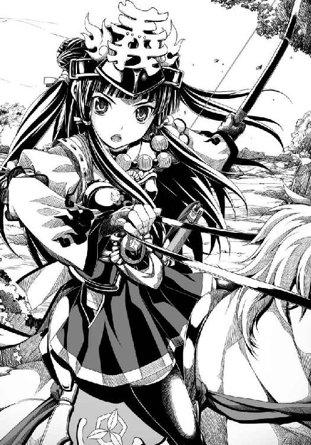
上杉謙信の懐刀、越後の直江兼続だった。
「わたしだ、梵天丸。直江兼続だ」
この時、兼続の兜の前立てには「義」の一文字が掲げられていた。
「直江どの？」
「かねたん？」
「かねたんではない！ わたしは上杉謙信さまのご命令で、伊達軍を討伐するために来た！」
「我を討伐だとう？ 最上義光から我を守るのがお前の使命ではなかったのか」
「お前が黙示録のびぃすとを名乗って奥州の人々を不安に陥れ、世の秩序を破壊したからだ！」
「やれやれ。さんざん人の屋敷で飲み食いしておいて恩知らずが、ククク」
「うぐぐ。梵天丸、お前がわけのわからない怪文書を撒き散らして謙信さままで怯えさせたからだぞ！」
「ククク。すっかり謙信の犬だな。やはり毘沙門天と黙示録のびぃすとは相容れぬ存在であったか」
「ええい、やかましい！ その妙な小芝居をやめろと言っている」
「小芝居ではない。我はまこと、黙示録のびぃすとであるぞ！」
「......はあ......今日は間に合わなかったが、後日決着をつけよう梵天丸」
兼続は米沢をあとにしたのち、南奥州から関東に至る諸城を巡り越後へ帰還する途中、梵天丸がなにやら得体の知れない真似をはじめたということで謙信の使者に命じられて連合軍に参加すべく人取橋へとかけつけたのであった。
数々の奇行を見た限りどうやら梵天丸は魔道に落ちたらしい、と誤解した謙信が奥州に危機が訪れていると事態を憂慮したためである。
いや、誤解ではないのかもしれないが。
正解なのかもしれないが。
梵天丸は執拗な宣伝活動で奥州を恐怖のどん底に陥れたが、あまりにもやりすぎたために上杉謙信の目にさえ悪の化身に見えてしまったのである。
兼続はすでに梵天丸と親しくなっていたから、まさかほんとうに魔王にはなっていないだろうと知っていた。「梵天丸は子供なので、家督を継いで調子に乗っているだけでしょう。わたしがお仕置きしてやりますよ」と余裕しゃくしゃくで越後への道から引き返したのだ。
しかしながら越後から合流してくる直江家の家臣たちを待っているうちに、戦場への到着が一歩遅れてしまった。
しかも連合軍の諸将も「直江とは誰だ」「越後勢の手など借りぬ」と兼続の到着を待たなかったために、連合軍が総退却をはじめた今朝になってようやく戦場へと辿り着いたのだった。
気位の高い兼続はがっかりして、一時は「わたしはこんなところに来とうはなかった」と泣きながら越後に帰るところだった。
だが、連合軍側の畠山某という男が輝宗を人質にして逃げおおせようとしていると知った兼続は、「そのような卑劣な悪事、たとえ味方であっても絶対に許さぬ」と謙信譲りの義憤を発し、今は敵となっている輝宗を救いだすために人取橋へと突進してきたのである。
「上杉謙信さまの懐刀であるこのわたしは、人質を取るような卑劣な真似はせぬ。輝宗どのはお返しする」
兼続が輝宗に猿ぐつわをかませたのは、自決しようとしている輝宗に舌をかみ切らせないための緊急措置だったのだ。
人取橋の上で、梵天丸と輝宗は抱擁をかわした。
「梵天丸......すまなかったゆえ」
「ちっ、父上～!!」
この間、兼続は小十郎に手を握られてさんざん礼を述べられ、「せ、正義のために悪を討っただけだからね」と照れまくって身をよじらせていた。
兼続が自分をいまだに男だと思いこんでいて、しかも恋のような感情を抱いていることにまるで気づかない朴念仁の小十郎は、成実に「小十郎のほうがそれがしよりも熱いな」とからかわれて「かたじけない」と謝った。
「ボクとしたことが......頭が真っ白になってしまいました」
「いや小十郎。あれでこそ家臣の鑑だ。本気で怒らせるとお前は誰よりもおそろしい」
「う、うむ。小十郎どのが暴走していなければ、わ、わたしは矢を射なかっただろう」
「なぜですか兼続どの？」
「そ、それは、小十郎どのに死なれたくなかったから......ではなくて、片倉小十郎ほどの花も実もある勇将をむざむざあのような男に殺させては義がすたるからだっ！」
兼続は、生涯不犯を誓っている上杉謙信譲りの奥手である。
小十郎どのの命を救いたかったとはなかなか素直に言えない兼続であった。
この間、梵天丸は輝宗の腕の中で「ちらりとでも父上を撃とうかどうか迷ったこと、許してください」と泣きじゃくっていたが、輝宗は相変わらずのっぺりとした表情で梵天丸の頭を撫でていた。
どうやら自分の生死のことなどまるで頭になく、梵天丸が無事だったことだけを喜んでいるらしい。
兼続は（二度も敵にたばかられて捕らわれるところも含めて、これはこれでそうとうの徳人なのかもしれない）と輝宗に多少感動している。
同時に、輝宗どのが無防備なままあちこちをうろうろしていると梵天丸の気が休まらないのではないか、とも心配した。
もちろん、実際に口にする言葉は梵天丸をからかうものだったが。
「梵天丸。ちらりどころか、輝宗どのを撃つ気まんまんですさまじく葛藤していたように見えたが」
「ふん。今日はなにを言っても許してやるのだ。かねたん、礼をやろう」
「礼か。銭や土地などはいらぬが......」
「なんだ、ほんとうに礼をもらう気まんまんなのか。意外と欲深だな」
兼続は、頰を染めて、わなわなと震えはじめた。
気位が高く、かつ奥手でうぶな兼続は、小十郎どのをわが夫にしたい──とはさすがにはずかしくて言いだせない。
「どうした。厠か？ 川岸でしてこいククク」
「梵天丸！」
「な、なんだ？」
「め、め、めごどのをわたしの妹にしたい！ くれ！」
「は？」
「めごどのだ！ 貴様の屋敷で居候しているうちに、わたしも家族というものがほしくなった！」
愛姫を妹に迎えてぺろぺろしたい、じゃなかった、姉妹として仲むつまじく暮らしたい。
これもまた兼続の偽らざる本心、見果てぬ夢であった。
「んにゃ？ 家族だとう？」
「わたしは天涯孤独の身、それはそれで正義のために心置きなく働けて幸いなことと考えていたが......めごどのたちと屋敷で暮らしているうちに、人間として完成するためにはこのままではいけないと悟ったのだ！」
「かねたん。そういうクッソつまらん能書きはいいから本音を言え、ククク」
「つ、つまりわたしはめごどののような妹がほしくなったのだ！」
「はあ？」
どーん。
どーん。
どーん。
「毘沙門天に誓う！ わたしはめごどのを幸せにしてみせる！ だからめごどのをわたしの妹にくれえええええええええ！」
どーん。
どーん。
どーん。
「アホかお前。めごはやらんぞ。越後にカエレ」
「ならば三日でいい、三日でいいからめごどのを貸してくれ！」
犬の子じゃあるまいしそんなことできるかアホが、と梵天丸は吐き捨てるように言った。
「貴様ああああああ！ このわたしが恥も外聞も捨てて頼んでいるというのにいいい！ そうだ、一日でいい、ただ一日でいいからわたしはめごどののお姉ちゃんになりたいのだ！」
「小十郎。なんだか戦う気が失せた。帰るぞ」
梵天丸は、いちど恥を捨てたらもうどうでもよくなってしまったらしい兼続を放置してそそくさと帰路についた。
「連合軍の追撃はやめたのですか？」
「小十郎、今から追撃してももう時間切れだククク。父上を安全な場所へ送り届けてから、時期を見て決戦し直す」
「でも、もう一度連合軍と対峙して勝てるんですか？ あちらには直江どのまで加わったんですよ」
「わが邪気眼が完全体となる日まであと少しだ。問題は、その日の戦場に都合よく連合軍を引っ張り出せるかどうかだ」
馬の背中に輝宗を乗せた成実が「そうだ」とうなずく。
「われらは今回の戦で勝ちすぎた。やつらを再び引っ張り出すのは難しくなったぞ、姫」
「戦略を立て直さねばならんな。やはりまだ邪気眼の力が完璧ではなかったから、このような危機を招いたのだ」
梵天丸は「どうやってあいつらをもう一度一カ所に集めるか、だが......」と片眼を押さえて思案している。
小十郎は、（ともかく大殿が無事でよかった）と胸をなでおろしていた。
輝宗が人質に盗られていた時のような苦悶に満ちた梵天丸の顔など、小十郎はもう二度と見たくなかった。
もしも人取橋の上で輝宗が無残に射殺されていたら、幼い梵天丸はいったいどうなってしまっただろう。
（武家のならいとはいえ......せめてあと五年、お子さまのままで過ごしてほしかったです）
だがあと五年梵天丸の家督相続が遅ければ、同じ事態を招いた時に梵天丸があれほど躊躇したかどうか。
もう子供ではなくなってしまった梵天丸ならば、撃たざるを得ない、と断腸の思いで父殺しを決断したのではないか。
それを思うと、小次郎は敵になったにもかかわらず己の正義を貫いて輝宗を救ってくれた兼続にいくら感謝しても足りなかった。
「もしも直江どのが軍師として采配を振れば、今回のように連合軍の足並みを乱すのは難しくなりますよ姫。あの方は姫とは少し人間の種類が違いますが、とてつもない切れ者です」
しかたがない、魔王と毘沙門天の子分とは最初から争う運命だったのだククク、と梵天丸は笑い飛ばした。
「だがな小十郎。かねたんは越後者だ、奥州の連中はかねたんのもとで足並みなどえぬ。佐竹さえ盟主に担ごうとしない連中だぞ。あいつらは、それゆえに我に敗れる運命なのだ」
「だといいですけど」
「次の一戦で完膚なきまでに連合軍を叩き潰し、上杉謙信の加勢を得ても無駄だと連中に悟らせ、絶望の悲鳴をあげさせてやる。ククク」
「次の一戦をどうやってお膳立てするか、ですね」
「うむ。黙示録の一節をばらまく手はもう使ったしな」
「これ以上あれを撒けば、かえって不気味がられ、みんなに巣ごもりされてしまいます」
「うにゃ～。人間とは妙なもので、追いかければひきこもり、逃げれば追いかけてくる」
「余に考えがあるゆえ」
からくも生きのびた輝宗がこの時、重大な決心を告げた。
「余が死んだことにせよ。余はこれより米沢を去り、お遍路の旅に出るゆえ」
「ち、父上？」
小十郎たちがけんめいに説得しても、輝宗は聞く耳を持たなかった。
「余のうかつさゆえに梵天丸をほんものの魔王にしてしまうところであった。梵天丸が奥州の覇者となる機会をも逸してしまった。余はこたびこそ、梵天丸のために役に立ちたいゆえ」
そこで死人となって米沢を離れ、世間から隠遁する、というのである。
梵天丸が「ダメです父上」と泣いて嫌がったことは言うまでもない。
「さようなことになんの意味があるのです、父上！」
「意味はある。余を討たれた梵天丸が激怒して復讐のために南奥州に攻め込んでくるというを流せば、南奥州諸将は震えあがって再び連合軍を結成するゆえ」
「......父上を殺された復讐戦......!?」
「どうであろう梵天丸。余の浅知恵ではあるが、使えるであろうか」
「使えます。使えますが」
つまり、この「輝宗死亡」の大芝居によってもう一度梵天丸が望む状況を作り出すことができる、と輝宗は言うのだ。
だがもちろん、いちど正式に葬儀を行って死を内外に発表すれば、輝宗は二度と表舞台には復帰できなくなる。
小十郎は（伊達家の人々はどうしてこうも極端なのだろう）と弱りきりながらも、輝宗がどれほど梵天丸を想っているかを思い知らされた。
「大殿は姫に無限の慈愛を捧げ、そのお若さで家督まで譲られました。もう充分です」
「いや。まだ、充分ではないゆえ」
「ですが。この上、ご自分の存在そのものまで差し出してしまうなど」
「梵天丸には、親の愛が必要であるゆえ」
輝宗は、己の心情をそれ以上語らなかった。
堺行きで梵天丸が覚醒したのは事実だが、自分は梵天丸の力になれなかった、義姫と梵天丸の仲を取り持つこともできなかった、という忸怩たる思いを輝宗は抱いていたのかもしれないが、そうではなくてやはりなにも考えていなかったのかもしれない。
伊達輝宗は人取橋で急死した、ということになった。
直江兼続のもとにも使者を送り、せっかくだが助けてもらった直後に父は心の臓が痛いとうめかれて倒れ、そのまま息絶えたと伝えた。
兼続は正直すぎる性格であるから、この急報を信じて輝宗のために涙ぐんだ。
一方の梵天丸には、悲しみにくれている時間がない。この輝宗の死という大芝居を次の戦いにおける宣伝に最大限利用する方法を考えねばならなかった。
梵天丸は、あくまでも時間と戦っている。
梵天丸にとっての敵は蘆名や佐竹ではなく、戦国乱世に生まれてくるのが少しばかり遅かった自分自身に残された時間である。
山形城の最上義光は、大好物の鮭を自ら調理して、里帰りしていた義姫にふるまっていた。
「しかしほんとうにまずいな、このたこ焼きっていうやつは」
冷え切ったたこ焼きを頰張った義光は、吐き出したくなるのをかろうじてこらえている。
義姫が「梵天丸が堺で学んだ新料理なのよ。わたしは苦手だけど」と嬉しげにたこ焼きを焼いたものの、たこ焼きには時間が経って冷めてしまうと急にまずくなるという欠点があった。
「お義。冷めてからもおいしく食えるように改良したほうがいいな、こりゃ」
「実は、温かくてもおいしくないのだけれど」
「そうだなあ。こいつには、味が足りねえんだよ。味つけを考えろ」
義姫が山形城に居座っているのは、言うまでもないが義光の横槍を封じるためだ。
だがしかし──。
そんな兄と妹のもとに、輝宗が敵軍の人質にされるという事件に巻きこまれて急死したため、梵天丸は仙道筋を占領することができず米沢に引き返した、という悲報が舞い込んできた。
「ほう、死んだか」
「輝宗どのが......？」
「お義、泣くのはおよし。なんちて」
「兄上！ つまらない冗談を言っている場合では」
「輝宗が死んだのならば、もう米沢に戻る必要もあるまい。このまま山形に住んだらどうだ」
「ことの真偽を確かめるために米沢へ戻らないと。梵天丸得意の詐術かもしれないもの」
「実は梵天丸が輝宗を殺したのかもなあ。これであのチビガキは伊達家を完全に掌握できたってわけだ」
「冗談はやめて！」
「いや。最上の血をひいているあいつなら、やりかねねえ」
義姫は混乱していた。
輝宗ほどの善人を義姫は見たことがない。
自ら望んで愛した南蛮商人の恋人に対するような情熱的な愛情を輝宗に抱くことはなかったが、夫として、梵天丸と竺丸の父親として、義姫は輝宗を敬愛していた。
「わたし、米沢へ帰る!!」
「そうか。道中注意しろよ」
「わたしを討ち取れるものなど奥州にはいないからだいじょうぶ！」
義姫が顔面蒼白となって米沢へ出立したあと、義光のもとには梵天丸に敗れた南奥州諸将からの使者が続々と舞い込んできた。
みな、これはまた別の意味で顔面蒼白になっている。
輝宗の死によって逆上した梵天丸が仙道筋へと突撃してくる。しかも今度は、禍々しい前宣伝のわりには意外に手荒な真似はやらなかったこれまでとは人が違ったような凄惨な殺戮戦をやるらしい......そういうで南奥州はもちきりなのだ。
「お前ら、あのチビガキに負けたそうじゃないか」
「なにぶん、得体が知れない相手でして」
「常識もなにもない敵でございます」
「すでにご存じのように輝宗公が不慮の死を遂げたことを伊達政宗は逆恨みし、われらを皆殺しにするとのこと」
「民百姓に至るまで殺し尽くされるやもしれません」
「最上どの。なにとぞ、ご加勢を」
「バカ野郎。お前らに直接加勢なんざ出せるか。お義が激怒するわ」
梵天丸が忌々しいのはたしかだが、義姫のことを思うと義光もまた梵天丸と正面から合戦する踏ん切りがつかない。
とはいえ、義光は妹かわいさのあまりこのまま手をこまねいているような甘い男ではない。
「では最上どのは、奥州の覇者の座をあの伊達政宗にくれてやると？」
「まあ聞け。まだ時期が早い。チビガキの実の伯父にあたるオレが今ここで直接米沢へ出兵するのはまずい。だが、お前らが勝つ手助けを陰ながらやってやる」
「おお。ありがたき幸せ！」
「あのチビガキは仙道筋を押さえていずれ関東へと繰りだすつもりだ。あれが伊達家第九代当主、政宗の名を騙っているのは、奥州の覇者では飽き足らず日ノ本の中央へと打って出ようという大それた野心の表れよ」
「おお......」
「ならばこそチビガキは必ず会津を狙ってくる。会津は仙道筋を押さえるための要だからよ」
「承知しております。だがわれらいまだ、伊達軍の秘密兵器の謎が解けず」
「そんなものは、ただのまやかしよ。あれは詐術の天才だからな。あいつに戦の実力などない。惑わされるな」
「しかし」
「聞け、ボンクラども。要はチビガキの兵力を南へ集結させなければいいのよ。北だ。北奥州の大崎を動かす」
「おお！ 北奥州の大崎家は、最上どのの御親戚でしたな」
「妻の実家だ。まったく。妻をめとらばうちの妹と決めておったのに、人間の世はどうして兄と妹の純愛を認めぬのか......こんな言いたいことも言えない狂った世の中じゃあ」
「は？」
焼いた鮭にかぶりつきながら、義光は「なんでもない」とごまかした。
「北の大地で大崎とチビガキを戦わせてやらあ。その隙にお前らは南から攻め上ってチビガキを二度と仙道筋へ出られぬように封じ込めろ。北と南から挟み撃ちだ」
「最上どのはいつ動かれる」
「まず北の大崎を動かす。あの横着なチビガキは北奥州を盗る機会が来たとばかりに北へ兵を出すが、どっこいオレがひそかに大崎に加勢している。あいつごときがオレに戦で勝てる道理はねえ。機を見て南奥州のお前らが再び集結して兵を挙げる」
「伊達政宗は窮地に陥りますな」
「チビガキがうろたえて南へ軍を反転させたところをオレが大崎とともにすかさず追撃し、伊達軍を木っ端微塵に粉砕する。これでどうだ」
義光は梵天丸の伯父で、以前から梵天丸が南蛮趣味にかぶいていたことをよく知っている。
従って、黙示録を駆使したハッタリ宣伝がまったく通じない相手である。
梵天丸にとって義光は天敵であり、かつ母の兄であるだけに実に扱いづらい相手なのだった。
だが義光は義光で、妹の義姫のことが気がかりであった。
（この前輝宗を脅しあげた時だってよ、お義がいなければあのまま輝宗をぶっ殺して米沢城を奪えてたんだよ）
オレも極悪人と評判だがお義だけはいけねえ、と義光は頭をかいた。
「気がかりなのは伊達輝宗が死んだという話だがな。チビガキの策略じゃねえのか、あれは」
「すでに米沢では葬儀が行われたとか」
「ほう、葬儀が？」
「人取橋で、畠山某というこちらの将が討たれています」
「この畠山が伊達輝宗を人質にして、人取橋を渡って逃げようとしたのは間違いありません」
「ほう。人質になあ。そんなことになりゃあ、容易に救出などできねえだろうなあ......」
「さよう。輝宗は辱めを受ける前にみごとに自害したか、あるいは」
「あるいは激昂したチビガキが調子こいて畠山ごとぶっ殺したか、それとも救出に失敗して無残に死なせちまったか、そのあたりか」
これぁ死んだな。こいつはちょっと洒落にならんかもしれん、と義光ほどの男が顔をしかめた。
まずいよ。お義が未亡人になっちまったよ......出家されたらどうしよう......義光は内心激しく動揺しながら、かろうじて平静を保っているふうな演技を続けた。
「そうかあ。お義とチビガキの仲はもう終わりかもしれねえなあ......」
輝宗がもういないのならば遠慮は無用。お義とチビガキの仲を引き裂いてお義を取り戻せばいい。それで遠慮なく米沢城を奪える、と義光はうそぶいてみせた。
第五の封印 魔王覚醒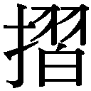上原
「梵天丸！ 輝宗どのをむざむざ死なせたとはどういうわけなの！」
米沢城に舞い戻ってきた義姫は、けろりとした顔で輝宗の葬儀を執り行っていた梵天丸を自室へ呼び出して有無を言わせず叱りつけた。
義姫は、自分が想像していたよりもはるかに錯乱していることに戸惑っている。
輝宗を失った衝撃は、思いの外に義姫の心を引き裂いていた。
そのあまりの剣幕に、梵天丸は「うう」と怯えて、なかなか口を開けない。
「家臣たちの中には、あなたが邪魔になった輝宗どのを謀殺したという風評まで広がっているのよ。あなたは誰よりも慎まなければならない身なのに......！」
「母上、それは」
「いったいなんのために、この母があなたに辛く厳しくあたってきたと思っているの？ 気が遠くなるほど、長い長い間。最上家から来たわたしたち親子が伊達家を乗っ取るのではないかという疑いを晴らすためだったのに！」
「母上。お、お聞きください」
梵天丸が、顔をあげた。
梵天丸の表情はすっかり硬直していた。
父上が死んだという話が伝わっているこのような時にも、母上は優しい言葉をかけてくださらない。
それどころか責め立てられるばかりで、弁明を聞いてももらえない......。
この上、真実を告げれば母上は喜ばれるどころか、ますますお怒りになるのではないか。
そのような不安が梵天丸を襲っていた。
興奮と動揺がおさまらない義姫は「言いなさい」とそんな梵天丸を怒鳴りつけた。
不器用な母と子は、お互いの息が鼻先にかかる至近距離でにらみ合った。
「他言無用です母上。父上は、生きておられます」
「生きている？」
「これは策です」
「策!?」
「もう一度南奥州連合軍を結成させるための策です。父を失った梵天丸は激怒して南奥州を火の海にする、と偽のを流し」
「あなたは、戦に勝つために輝宗どのを死んだことにして押しこめたの!?」
「父上は、お遍路の旅に出られました」
「梵天丸。いったいどうしてそのような真似をしでかすような子に。なんてことを！ 親不孝者！」
義姫は完全に逆上していた。
「母上、話はまだ途中でございます！」
梵天丸も、頭に血が上った。
義姫を隻眼でにらみながら、吼えた。
「母上が、我を奥州の覇者に、いや天下人にしたがっていたのではないですか！」
「輝宗どのを死人にしてまで天下を盗れなんて言った覚えはないわ！」
「天下盗りの野望のために我を厳しく鍛えてきた日々は噓でしたか！」
「卑劣な策ばかり弄して、真正面から戦をする覚悟はないのっ!?」
「我が望んでかかる親不孝な真似をやらかしたと頭から決めつけて疑わぬとは！ やはり母上は、我を嫌っていたのですな！」
「梵天丸！」
「結局母上は、竺丸がかわいいにょだ！」
「......わたしの部屋から、出て行きなさい！」
「出て行きまする！」
輝宗の葬儀に関して義姫と衝突したとはいえ、輝宗死去という偽報を発したことによって戦の勝ち運は梵天丸のほうへと再び巡ってきたと言っていい。
再度集結するかどうか疑わしかった南奥州連合軍が、「伊達政宗が白装束の軍団を率いて攻め込んできてすべてのものを撫で切りにする」と勝手に風聞を飛ばしあって怯えはじめ、蘆名家の本拠・会津へ続々と集まってきたのだ。
この白装束軍団のについては、梵天丸はあまり苦心していない。
南奥州の人々の間であっという間に広まったのだ。
お遍路の旅に出ると言い残して米沢から消えた輝宗の働きがあったのかもしれない。
そしてもうひとつ、想定外の「よき知らせ」が梵天丸のもとに舞い込んできたのは、「それでは実際に白装束の軍団を結成しようかククク」と小十郎と成実を相手に軍議を開いていた時であった。
「北奥州の大崎家が伊達領へ侵攻してきた。どう見る。成実、小十郎」
「今すぐ軍を北へ向け、大崎を倒すべし！」
成実はまさに毛虫のように猪突猛進、後退するという発想が最初からない。
「大崎家は最上義光さんの奥さんのご実家です、姫。つまり最上義光さんが大崎家を動かしています」
対する小十郎は至って冷静で、段取りを追って戦略を考えていく。
二人はこのような軍議の席では互いに激しく口論するが、導き出される結論と結果はちょうどいいところで折り合っていることが多い。
どちらも我にはもったいない家臣だ、と梵天丸は思った。
「小十郎。そんな理屈はどうでもいい。売られたケンカを買わねば姫の名に傷がつく」
「成実どの。最上義光さんと今対立するのはまずいです。われらには南奥州連合軍という敵が。落とすべきは会津です」
「それでは北の領地を放置しろというのか」
「そこはいろいろと微妙なところですので、ボクが使者となって大崎軍に行って来ます」
「生ぬるい！ また人質にされるのがオチだ」
成実にも一理あれば、小十郎にも一理ある。
「梵天丸は、あの狐が嫌いだ」
だから北上して大崎と戦おうククク、と梵天丸はけろりとした顔で言いだした。
「おお、よう申された！ 先鋒はこの成実にお申しつけあれ！」
「姫？ それでは会津はいかがします？」
「小十郎と成実は、南の最前線・猪苗代城へ入ってくれ。留守番を頼むぞ」
猪苗代城は猪苗代湖の北東にあり、小十郎が調略して味方につけたばかりの城である。
会津の蘆名家が本城としている黒川城からほど近く、まさに南の最前線であった。
「姫、小十郎はともかくそれがしまで留守番役とは!?」
ウラ、ウラウラ！ と成実が涙目で叫んでいた。
「義光さんと戦えば、ご母堂はますます姫をお怒りになります。ただでさえ大殿葬儀の件で大ゲンカしている最中ですのに」
「知らん。今さら母上にどれだけ怒られようが、これ以上母上に嫌われることはない。そもそも」
「そもそも？」
「我を天下の覇者にしようとしてしつけてきたのは、母上ではないか。我はすでに黙示録のびぃすととして覚醒し走りだしている。絶対に止まらぬぞ」
ぷううう、と梵天丸は頰を膨らませた。
小十郎は、梵天丸が義姫と互いに口もきかないほど険悪になっていることを憂慮している。
姫が「葬儀の件は父上自らが言いだされたことなのです」と素直にご母堂に伝えればいいものを、どういうわけか姫もご母堂もお互いに対して素直でないために誤解が誤解を生み怒りが怒りを生み──と小十郎は気が気でない。
ひそかに義姫に輝宗葬儀の策の真相──輝宗自身が考案した策であるという事実──を打ち明けてもみたが、義姫は「梵天丸のためにそのような戯れ言を言っているのでしょう」と怒りを解いてくれない。
そしてもうひとつ、小十郎が心配している問題がある。
取り扱いが難しい邪気眼の件だった。
「姫。完全版の邪気眼を戦場で用いて南奥州連合軍を潰走させるという例の戦略はどうします。もう、その日が訪れるまで時間がありません」
「定められた日にしか完全版は使えぬ。この機会を逃すと、次の機会は当分なさそうだなククク」
「そうです」
ええい姫は北へ行くと決めたのだもう黙れ小十郎、と成実があらぶって叫んだ。
「その時はその時だ。また新たな秘密兵器を開発すればよい」
「成実どの。そのようなもの、そうそうひらめくものではありません」
「小十郎は心配しすぎだ。それがしは今、毛虫型戦車というものを試作している。前へ前へとひたすら一方通行する仕組みで、決して後退できない夢の戦車だ！」
「なんですかそれは。退却する際に壊滅するじゃないですか～」
「退却しなければよい！」
「そんな無茶な」
「ともかく姫は北へ行くと決められたのだ。われらは猪苗代城を死守するぞ小十郎」
「邪気眼に用いる部品一式はどうします、姫」
「あれは北へは持っていかぬ。南の猪苗代城のほうへ運ぶにょだ、ククク」
「ということは、なにか策があるんですね！」
「うむ。今回は狐さまさまだ。気がかりなのは図々しく連合軍に割り込んでいるかねたんがどう動くかだが、そこは賭けだ」
「もしも連合軍が全力で猪苗代城へ攻めてきたら......」
「我が戻るまで、なんとしても持ちこたえてくれ。頼むぞ二人とも」
「「はっ！」」
梵天丸が率いる伊達軍本隊はかくして北へと進路を取り、大崎軍を目指して進軍を開始した。
南奥州連合軍と対峙する猪苗代城には、小十郎と成実がわずかな手勢だけで籠城することとなった。
南奥州連合軍は、猪苗代湖の西に位置する会津の黒川城に集結していた。
人取橋の戦いで夜襲部隊が謎の邪気眼に遭遇したため、総崩れとなった北関東常陸の佐竹軍も再び参戦している。
ただし、佐竹軍には今回の連合の主導権はない。
邪気眼なる謎めいたものに遭遇してしまった不運とはいえ、前回の敗戦のきっかけを作ったのだから、致し方のないところだった。
さりとて、蘆名軍が奥州の諸将を束ねることもできない。
各家いろいろと利害関係や血縁関係が絡み合っているために、奥州の人間が先頭に立っては調整不可能なのだ。
前回の合戦では、前哨戦で圧勝していながら諸将の足並みがわなかったためにむざむざ伊達軍に勝ちを与えてしまった。そのあたり、諸将もさすがに懲りている。
そこで──。
「ふふふ。この直江兼続が陰の軍師として諸君に勝利をもたらしてやろう」
越後の上杉謙信は関東管領として関東の諸将を率い、関東を侵略していた新興勢力の北条氏康と戦ってきた。この間、自分を頼ってくる関東諸将の領地はことごとく安堵し、一片の土地すら奪わなかった。
謙信が義の武将であることはすでに奥州にまで知れ渡っている。
直江兼続は、歳こそ若いがその謙信の懐刀であり、謙信から奥州の秩序を守るよう命じられている。
梵天丸が父を失って大激怒していると怯える南奥州諸将は、もはや揉めている場合ではなかった。そこで当初邪険にしていた直江兼続を丁重に迎え入れ、采配を預けたのであった。
この日、軍議は白熱した。
「伊達軍が北へ向かった」という知らせを前に、諸将の意見はやはりばらばらでまとまらなかったのだ。
「最上どのが約束通り呼応してくれた！」
「今のうちに伊達軍の南の拠点・猪苗代城を奪うべし」
「それでは、あの魔王の怒りに油を注ぐことに」
「こうして集まっておきながら戦わぬのか」
「いや、戦わぬわけではない。最上義光どのが伊達政宗を打ち破るのを待とう」
「それは日和見ではないのか」
「われらはまだ六六六の数字の謎を解いていないではないか」
「そうだ。六六六の数字。あの謎はぜんぜん解けそうにない！」
「黙示録のびぃすとは激怒している。南奥州は、曹操が通ったあとの徐州のように犬猫まで殺し尽くされるぞ」
かつて中国の三国志時代、曹操という高名な知将が若い頃に一度だけ我を忘れて徐州の民を大虐殺したことがある。
徐州を通りかかった曹操の父親が殺されたためだった。
今の梵天丸はその時の曹操と同じ状態だ、と諸将は真剣に怯えていたのである。
「南奥州一帯に、さらなる預言文書が撒かれておる」
諸将は「貴様たちは梵天丸ごときに怯えすぎている」と呆れている兼続の前に、梵天丸の新作怪文書を差し出した。
『この獣には、また、大言を吐き汚しごとを語る口が与えられ、四十二カ月のあいだ活動する権威が与えられた』
これは伊達政宗が大言壮語しながら、これより三年半ものあいだ奥州を暴れ回ることを預言しております、とすっかり黙示録研究家になってしまったとある武将がしたり顔で解説を入れた。
『また、大いなるしるしを行って、人々の前で火を天から地に降らせることさえした』
これは伊達政宗がいまだに謎であるおぞましき邪気眼によって敵対する者の心を折るという預言であります。どうやら邪気眼とは、天から降ってくるものであるらしいのです！
『第五の御使が、ラッパを吹き鳴らした。するとわたしは、一つの星が天から地に落ちて来るのを見た。この星に、底知れぬ所の穴を開くかぎが与えられた。そして、この底知れぬ所の穴が開かれた。すると、その穴から煙が大きな炉の煙のように立ちのぼり、その穴の煙で、太陽も空気も暗くなった。その煙の中から、いなごが地上に出てきたが、地のさそりが持っているような力が、彼らに与えられた』
来たるべき決戦において、天から星が落ちて参ります。この星こそが邪気眼の発動を預言していることはすでに明らかですが、なんと邪気眼が発動すると煙が立ちのぼって太陽も空気も暗くなり、その煙の中からおぞましいいなごの大群が攻めてくるのです。
これはもう人間技とは思えません。
ああ、ああ、おそるべきは黙示録のびぃすと伊達政宗！
『御使は、わたしを御霊に感じたまま、荒野へ連れて行った。わたしは、そこでひとりの女が赤い獣に乗っているのを見た。その獣は神を汚すかずかずの名でおおわれ、また、それに七つの頭と十の角とがあった。この女は紫と赤の衣をまとい、金と宝石と真珠とで身を飾り、憎むべきものと自分の姦淫の汚れとで満ちている金の杯を手に持ち、その額には、一つの名がしるされていた。それは奥義であって、「大いなるバビロン、淫婦どもと地の憎むべきものらとの母」というのであった』
びぃすとの上に乗っているこの女は、伊達政宗の生母・義姫のことに相違ありますまい。義姫は南蛮人の子をもうけながら、伊達家に輿入れしたのでございます。まさに淫婦でございましょう。この文章こそ、伊達政宗がびぃすとであるまぎれもない証拠！
「もういい。頭が痛くなる、梵天丸の妙ちくりんな文書の話はやめてくれ」
兼続は米沢逗留時代に梵天丸がいたずら好きの大山師であることをとことん思い知らされてきたので、この種の精神攻撃には耐性ができている。
輝宗どのが亡くなったというのに、梵天丸は相変わらずだ......心配して損をしたと、兼続はほとんど呆れていた。
（だが最後の、ひとりの女にまつわる預言がどうもひっかかる。自分では気づいていないのだろうが、梵天丸の心の奥底には、やはり母親への怖れがわだかまっているのか）
そもそも梵天丸がこの種の南蛮魔族活動さえやりすぎなければ、上杉謙信は梵天丸を支援するはずだったのだ。
なぜわたしは梵天丸を倒すために奥州くんだりまで来ているのだろう、と思うと兼続は越後へ帰りたくなってきた。
「今しばらくお待ちいただければ、六六六の秘密を解き明かしてみせますが」
「解き明かさなくていい」
兼続は先の戦で、梵天丸の戦い方をほぼ掌握している。
一言で言えば情報戦とハッタリで敵の心をへし折り、まともな戦をやる前に敵を潰走させてしまう、そういう横着にも程がある戦術だった。
まっとうな武士のやることではない。
ただしこれはこれで、兵が死ななくていい、という一面もある。
正面衝突の正攻法を両軍が採った場合、もしも両者の実力が伯仲したならば甚大な死傷者が発生する。
以前、上杉謙信と武田信玄が川中島で激突したことがあった。
日ノ本最強をうたわれる両軍の全面衝突は、悲惨な結末を迎えた。両者一歩も譲らずついには決着がつかず、川中島の地は死屍累々となり、武田信玄は片腕と頼む妹の信繁を失い、上杉謙信は「なんと愚かな戦をしてしまったのか」と両軍の将兵の多くを死なせたことを深く後悔した。
あのような悲惨な戦だけは、兼続は避けたかった。
また、謙信も望んではいない。
まして、相手は梵天丸である。
なにを考えているかさっぱりわからないひねくれた子供だが、あんなのでも愛姫の姉である。
（そうだ。めごどのを悲しませてはならない。梵天丸をおとなしくさせなければ）
上杉謙信の望みはあくまでも奥州の秩序を維持することであって、梵天丸を滅ぼすことではない。
梵天丸がされているような皆殺し戦術に出れば、その時は躊躇せずに梵天丸の首を刎ねてやろう、だが梵天丸が完全な悪に染まる前に救いだしてやることこそ謙信さまの望みである、どれほどおそろしげな文面であれ怪文書を撒いているだけならばまだ救える、と兼続は思っている。
「要は梵天丸の詐術を暴けばよいのだろう」
輝宗の死は事故のようなものだ。兼続が輝宗を救った時には、輝宗は無傷だった。
だから輝宗問題については、話し合いで解決できる、と兼続は確信していた。
あとは戦場で梵天丸が隠している謎の邪気眼というあやしのものの謎さえ解けば、梵天丸は「すいませんでした兼続さん」と土下座でもして米沢に帰るはずであった。
「直江どのには」
「解けますか、邪気眼の謎を」
「六六六の秘密を」
「まずは情報収集だ。邪気眼を見たという佐竹軍の目撃者たちは？」
「みな、祟りを怖れて出奔してしまいまして」
「全力を挙げて捜し出せ。祟りなどこの世にはない」
「いえ！ 伊達政宗は南蛮の血をひいた、ほんとうに呪われた者にございます！」
「あれは本来、この奥州にいてはならない者なのです！」
兼続は思わず采配を机の上に叩き付けていた。
激昂していた。
「きいたふうな口をきくな～!!」
やせた少女が発するものとは思えぬ、驚くべき大声であった。
まるで、毘沙門天が憑いているかのような激しい怒りの声であった。
諸将は、「う、うおう」と口ごもりながら兼続の足下にひれ伏していた。
「梵天丸の出自のことを再び口にした者は、この直江兼続が問答無用で斬るぞ！ 貴公らも侍ならば恥を知れ！」
兼続の凄絶な怒りを畏怖した諸将は、誰も反論できなかった。
（梵天丸。自らを恐怖させて奥州を平定しようとするお前の野望は、わたしが止める）
兼続は梵天丸やその家族たち、さらには淡い恋心を抱いている相手・片倉小十郎と親しく交わっている。
もともと、この戦にさほど乗り気でなかった。
だが、今はもう違った。
梵天丸の過激な自己演出はいずれ、取り返しのつかないところまで行ってしまうだろう。
当人が気づいた時にはもう、梵天丸は引き返せなくなっているだろう。
（謙信さまが毘沙門天の化身になられたのはまだよい。毘沙門天は人々を救済する正義の神だ。だが、この世を破壊する魔王になってしまうなど。梵天丸。それでいいのか。お前はこの世界に居場所を得られるのならば、そのような者になりきってしまってもかまわないのか）
兼続は、奥州の地図を凝視しながら、驚くべき速度と精緻さで戦略を組み立てていく。
「大崎との戦はわれらに兵をあげさせるための陽動だ。梵天丸は必ず反転して会津へ向かってくる。それまでにわたしが、邪気眼の謎を暴く。からくりとハッタリさえ奪い取れば、謙信さま譲りの軍略家であるこのわたしが伊達軍など一撃で蹴散らしてみせる」
邪気眼の謎を解けば、戦らしい戦をすることはない。梵天丸が率いる伊達軍など一瞬で潰走させられる。
兼続は、朗々と演説した。
「しかし。もしも皆殺し作戦に出られれば、民が犠牲に」
「梵天丸はそのようなことはしない。あれは偽悪趣味にかぶいているお子さまだ」
「ハッタリだと言われるのですか」
あやしげな梵天丸文書の数々を束ねて握りしめながら、兼続はつぶやいた。
「梵天丸、野望に取り憑かれし不幸者よ。お前が見ている悪夢はわたしが晴らしてやる。めごどのと米沢で静かに暮らすがよい」
「直江どの、伊達軍が北から戻って来る前に猪苗代城を奪還しましょう」
「相手は小勢、こちらは二万を超える大軍。あの城を放置していては士気にかかわります」
「片倉小十郎どのが守る城となると、容易には抜けぬぞ。わたしは知っている。あの者はその気になれば、奥州の覇者にすらなれる大器だ。どういうわけか梵天丸に心酔しているが......」
ほんとうに、どうしてなのだろう。あの人が生まれた場所が悪かったとしか思えない。
夢にすぎぬが、小十郎どのが越後でわたしとともに義のために戦ってくれれば......兼続は切なげにため息をついた。
しかし、戦に手心を加えるつもりはもうとうない。加えたくても、許されなかった。
そのようなことをすれば小十郎に対する礼を失するし、上杉謙信に仕えるもののふとして失格である。
義の戦を遂行することがどれほどの精神力を必要とすることなのか、兼続はようやく理解した。
「みなの衆。伊達軍が南へ戻るまでに猪苗代城を落とせば、それで梵天丸は米沢へひきこもるしかなくなり戦は終わる」
「落ちなければ？」
「落ちねば磐梯山の麓、上原あたりで決戦することになろう。その時にはわたしが邪気眼とやらのからくりを破る」
猪苗代湖の北東に、片倉小十郎が調略を用いて奪い取った猪苗代城がある。
黒川城から出陣した南奥州連合軍二万は、磐梯山の麓に広がる上原を東進し、猪苗代城へと向かった。
猪苗代城にわずかな手勢を率いて籠城している小十郎と成実は、北へ向かった梵天丸の南進を待っていた。
だが今、梵天丸の本隊はいまだ到着せぬまま、連合軍がいっせいに城へと押し寄せて来た。
黒脛巾組の諜報活動によって、兼続が連合軍の軍師となっていることはすでに知れている。
「直江兼続め、厳しい攻めをする」
「どうやら上杉謙信さんに、こちらが悪だと認定されてしまったようです。自業自得といいますか因果応報といいますか」
「兼続め！ あやつは、姫のお屋敷で居候をしていたはずではないか」
「それとこれとは別です、直江どのはまことの武将ですから」
「させるかあ！ この成実がある限り猪苗代城は落ちん！ ええい、毛虫型戦車さえ完成していれば！」
「それにしても。謙信さんは姫を守ってくださるおつもりでしたのに、どうしてこちらを悪と断じて......」
「それは、われらがさんざん怪文書を撒いたり殺戮戦をやるというが立ったりしたからだろう」
「敵を恐怖させて集合させるという策がはまりすぎて、上杉謙信さんまでが敵になってしまったということですか」
「そうだ。そもそも姫があのように胡散臭くなったのは小十郎のせいだ」
「ええっ？ 断じて違います。ボクがいなければもっと姫は悪化していますよ」
小十郎は「城門を開いて突撃だ」とあらぶる成実を抑えながらひたすらに後詰めを待った。
梵天丸が到着するまで持ちこたえれば、上原での決戦に持ちこめる。
だが攻め手である兼続も梵天丸の戦略を読んでいて、先に猪苗代城を落としてしまおうとやっきになっている。
あとは梵天丸の奇想が勝つか、兼続の正々堂々の知略が勝つか、だ。
それは城内の米が尽きて、虫好きの成実が将兵たちに「虫おかず」をふるまっていた日のことだった。
兼続の包囲は完璧なもので、小十郎と成実の両輪の働きによってかろうじて落城を免れてはいたが、籠城を続けていくにもすでに守備兵の士気・体力ともに限界に達していた。
兼続も「今日こそ落とす」と落城を確信して、早朝からしゃにむに攻め寄せてくる。
これはいかんとあわてた成実が、小十郎たちにとっておきの「虫おかず」を出してきたのだ。
「さあ食え！ シジミチョウのサナギのみそ漬けだぞ！ サナギは外は硬いが中はドロドロに溶けて汁のようになっていて、しかも栄養満点。食感と滋養の両方を楽しめる！」
「ボクは遠慮します......」
「食えっ！ 腹が減っては籠城戦はできぬぞ小十郎！」
「せめて、いなごの佃煮でお願いします」
「ウラ！ 知っているだろうが。いなごは今は食えぬ！」
成実の虫愛づる姫ぶりは、伊達家中では知らぬ者がない。
あまりにも好きすぎて、ついには食べ物にする始末なのだった。
成実と小十郎の言い合いを眺めていた守備兵たちは、飢えていることも忘れて盛り上がった。
「それにしてもこれだけの虫をどうやって集めたんです」
「城に備蓄してあった蜂蜜などをかたっぱしから撒き餌にした」
「蜂蜜を食べればいいじゃないですか～！」
そして──猛然と攻めてくる敵を前に、成実と小十郎が率いる守備兵たちが最後の奮戦とばかりに戦っているうちに、梵天丸の軍勢約二万がついに姿を現したのだ。
大崎軍と最上義光の加勢軍を相手に戦っていた梵天丸が、どうやって北の戦線から無事に離脱できたのかは、この時点ではわからない。
最上義光ともあろう者が、むざむざ梵天丸に無血撤退を許したのだ。
成実は「また姫は手品でも使ったのか」と目を見張った。
「ああ、姫。これで虫を食べる生活から救われます！」
「なんだ。これからしばらく虫づくしの予定だったのに」
「成実どの。南蛮暦によれば、明日です。明日が、完全版の邪気眼を用いることのできる日です」
小十郎は「ぎりぎりで間に合いましたが、直江どのが敵陣にいることが気がかりです」とつぶやいていた。
あと少しというところで猪苗代城を落とせなかった兼続は、小十郎の首を盗らずに済んだことにそっと安堵しつつ、「最上義光の策は破れたか。これよりわたしが梵天丸と戦い、そして勝つ」とほぞを固めた。
連合軍二万は猪苗代城の囲みを解き、磐梯山の麓、上原へと向かった。
決戦前夜。
上原の西側に連合軍、東側に伊達軍が布陣を終えた。
兼続は上杉謙信の軍略を継承している才児だが、これほどの大軍を率いて野戦の采配を振るのは初体験だ。
「謙信さまはつねに、このような緊張のもとに戦っておられたのか」
夜討ちを進言してくる者、梵天丸暗殺を提案してくる者、さまざまな者が次々と兼続の陣営にむらがってくる。
兼続は「夜討ちも暗殺もない」とそれらの者を追い返すと、ただひたすらに待った。
待っていたものは、佐竹軍から逃走した元足軽たちの調査報告である。
邪気眼の生き証人たちからの情報である。
その情報は、上杉家が用いている忍び衆「軒猿」によってもたらされた。
「──兼続さま。邪気眼の正体、どうやらつかめました」
「ご苦労」
「やはり人の恐怖心を煽るためのからくりであります。南蛮渡りのびぃすとなどは実在しないようです」
「証言をひきだすために拷問など用いてはおらぬだろうな」
「すでにやつらは邪気眼に関する記憶を失っておりましたゆえ催眠の術を用いました」
「記憶をなくしていた？」
「恐怖のあまり、体験そのものをなかったことにせねばならなかったのでしょう」
軒猿の情報に兼続自身の推測を加えると、邪気眼の正体はただ一つしか考えられなかった。
「......梵天丸自身が眼帯を取って、あの紅い瞳をさらし足軽どもを恐怖させたのだ」
あの、自らの瞳を恥じていた梵天丸が──。
考えられぬ行動だった。
怪文書にはじまるありとあらゆる詐術と演出は、すべて、梵天丸の色違いの瞳を魔物のそれと錯覚させるために周到に準備され実行されていた。
邪気眼出現の際に梵天丸が漆黒の甲冑を着ていたらしいというのも、瞳以外の部分を闇に隠してしまうためだったのだろう。
「強くなったと褒めるべきなのか。それとも、そこまでする必要などないと止めてやるべきなのか」
梵天丸は自らの弱点をそのまま反転して武器として用いた、自分の瞳にまつわる奥州人の迷信を逆用した、そこはさすがだと褒めてやりたかった。
しかし、なにか悲しい気がする。
輝宗の死を巡って義姫と険悪な関係になっている、という情報も耳にしている。
やはりあやつを放置してはおけない、魔王の道から引きずり戻す、と兼続は決意した。
「しかし梵天丸は北の戦線からどうやってこれほど早く撤退できたのだ。最上義光は逃げる梵天丸を執拗に追撃して北奥州で足止めする腹づもりだったはず」
北の戦線へ潜りこんでいた別の軒猿から、兼続はその経緯を聞かされた。
大崎・最上軍と北で戦い痛い敗北を喫していた梵天丸は、南奥州連合軍が猪苗代城を包囲したと聞くと「ついに戦場へと再び引きずり出したぞ」と狂喜し、その日のうちに陣ばらいを開始して大急ぎで南へと向かった。
最上義光は「今だ！」と手を叩いて大崎軍とともに逃げる梵天丸を追ったが、梵天丸が捨てていった陣地に奇妙なものを見つけた。
大量の逆さ十字架が百十一本、陣地あとに規則正しく立てられていたのである。
『普通、陣地あとにはたくさんの窯のあとが残っているものだが、この逆さ十字架はいったいなんだ？』
さしもの最上義光にもこの謎の意味はわからず、まして大崎軍の将兵たちは「またなにかおそろしい企みを！」と震えあがった。
最上義光は怯える軍勢を叱咤し、さらに追撃した。
翌日、追撃途中の高原でますます数が増えている逆さ十字架を発見した。
その数は、三百三十三本だった。
その翌日には、梵天丸がもうけていった逆さ十字架の数がまた増えた。
六百六十六本になっていた。
もしや、この数字は......!? と義光を除く全員が騒然となった。
『わからん。かの諸葛孔明が撤退しながら日々窯の数を減らして敵を疑心暗鬼に陥れ、追撃を防いだという逸話はあるが、いったいなんだこれは？』
なにかの軍略なのか、それとも南蛮のあやしげな魔術の類なのか──。
だがどう頭をひねっても、義光にも逆さ十字架の謎はわからない。
六百六十六という不吉で意味深な数字だけが、将兵たちの中で一人歩きした。
ついに大崎軍の大将が音をあげて「追撃はやめよう」と最上義光を押しとどめてしまったのである。
義光は「ふざけるな」と激怒したが、大崎軍は伊達軍を追い払えただけでもう充分だ、これ以上こんなわけのわからないあやしげな者にはかかわりたくないと弱気になり、撤退してしまった。彼らはもともとさほど戦意がなく、義光にすごまれて挙兵させられていたのだから、伊達領の奥深くまで追撃する気概はもともと少なかったのだ。
こうして大崎軍に去られた義光は「くそっ。どいつもこいつも弱腰で話にならんわ」と吐き捨ててしぶしぶ山形へと帰還したというのである。
義光の悪知恵を、梵天丸のハッタリが上回ったか、と兼続は小気味よく思った。
兼続にはすぐにわかった。
正解は、「六百六十六本の逆さ十字架にはなにかとても深い意味がありそうだが、実は意味などない」である。
義光も本音ではそう言いたかったのだろうが、それでは大崎軍の将兵が納得しなかったのだろう。
兼続は「わたしは策を弄さない。正面から戦って勝つ」と胸を張った。
「明日の合戦で、邪気眼のからくりを暴けばそれで戦は終わる」
だが明日も、小十郎どのはおそらく先鋒をつとめるであろう。小十郎どのがなぜ梵天丸にあそこまで尽くすのか、わたしにはわかりそうでわからない──と兼続は戸惑っていた。
梵天丸は小十郎を隣にはべらせ、月を眺めていた。
成実は「明日の準備があるので」と早めに陣から姿を消している。
「小十郎。ぎりぎりではあるが間に合った。明日、我は奥州の覇者となる」
「大崎戦でずいぶん手痛い負けを喫したと聞きますが」
「伯父上の加勢が意外と本気でな。うまくいけば大崎をやっつけて北奥州も併呑しようと欲をかいてしくじった」
「いけませんね。姫はすぐに横着をしたがりますから」
「最初から逃げる方法は考えておいたから、問題なかったぞ」
「明日も欲をかかないでくださいね。ボクは心配です」
「明日はちゃんと予定通りにやる、心配するな。母上もこの梵天丸が奥州の覇者になれば機嫌を直してくれるだろう。フハハハ!!」
「......そうですね。きっと、ご母堂も喜んでくださいます」
「......そのはずだ......」
小十郎は、梵天丸の小さな肩を思わず抱き寄せていた。
「ご母堂は、姫を溺愛しておられます。ただ、家臣団が姫に疑心を抱くことをはばかって素直に態度に出せないだけなのです。むしろ姫をご自分が邪険に扱うことで、最上家が伊達家を乗っ取ろうとしているのではないかという家臣団の疑惑から姫を守ろうとされているのです」
「......それは、ほんとうだろうか」
「はい。疑いありません。この小十郎、天地神明に誓います」
「ほんとうならば、我と母上との対立も明日で終わるのだな」
小十郎。我は明日、奥州の覇者になるぞ。
梵天丸は、そう言った。
上原の決戦は、翌日の朝、辰の刻にはじまった。
梵天丸は八ヶ森に本陣を構え、小十郎の部隊を先鋒に立てて前進させた。
成実は、小十郎の先鋒隊のすぐ後ろを静かに行軍している。
対する連合軍は高森山を本陣としていたが、先鋒に大部の兵力を割いた。
この日の朝の上原にはすさまじい西風が吹き荒れ、開戦早々両軍ともに種子島を使えなくなるという異常事態に陥った。
「空は快晴だというのに、面妖な」
「伊達政宗が南蛮の魔術を用いているのではないか」
連合軍側にはまたしても不安が広がったが、高森山で両軍の動きを睨んでいる直江兼続は動じない。
「梵天丸を前線へと引っ張り出せば、あとはわたしがこの三寸の舌先を振るって梵天丸の前で邪気眼の謎を暴いてみせる。それでお味方の勝利だ」
兼続はすでに邪気眼のからくりをほぼつかんでいる。
梵天丸の隠し技とも言える邪気眼は、夜にしか用いることができない。
また、邪気眼を見せるためには敵兵に接近しなければならないので、このような堂々たる野戦で使えるものではない。
少人数同士の小競り合いの場でしか披露できないのだ。
だから梵天丸は日中はのらりくらりとやり過ごして、またぞろ夜間に勝負をかけてくるはずだった。
「そうはさせぬ。全力で片倉小十郎どのの隊を突き崩して梵天丸を前線へと呼び出す」
小十郎への淡い想いをいざ戦場に立てば封印してしまえるのが直江兼続という姫武将だった。
そして実戦の采配にかけては、梵天丸よりも兼続のほうが上手であった。
はじめてとは思えないほどに整然とかつ冷静に着々と戦を進めていく。
先鋒隊同士の戦いは、連合軍側優勢のまま進んだ。
小十郎の隊は、じりじりと押されて後退している。
日頃とは別人のような鬼気迫る表情になった小十郎は「かかれ、かかれ」と声をからし、自ら槍を振るって連合軍の先鋒隊の中へと突進を繰り返すが、先鋒に大量の兵を投入している連合軍とでは人数に違いがありすぎた。
「邪気眼の発動を怖れる直江どのは夜までこの戦を引っ張らずに、日が高いうちに決着をつけるつもりです」
そして、ここまでは梵天丸の計算通りである。
壊乱寸前となったところで、ついに梵天丸が本陣を前進させて小十郎の隊を吸収しはじめた。
「ククク、よくぞここまで持ちこたえた。さすがは小十郎」
「姫！ はじまります。もう、まもなくです」
「わかっている。すぐに、風向きが変わる」
梵天丸は例の黒漆五枚具足を装着して、小さな青白い馬にちょこんと乗っている。
両軍が種子島を使えないので、梵天丸は馬を駆って戦場の最前線に躍り出た。
連合軍側の先鋒隊は、「出た！」「びぃすとだ！」「魔王だ！」と浮き足だった。
すでに梵天丸は、その小さな姿を見せただけで敵兵たちに恐怖される存在となっている。
形勢が逆転しつつあった。
しかし兼続はこの機を待っていたのだ。
「今だ！」
本陣にいた兼続もまた馬を走らせて、自らの旗本隊とともに最前線へと飛びだし、梵天丸の顔が見える距離まで突き進んだ。
「梵天丸、お前の邪気眼はすでに見切ったぞ！」
兼続はあらん限りの大声で叫んだ。
「梵天丸、このような騒動を起こすのはもうやめろ！」
兼続の声の大きさは異常。梵天丸にも届いた。
ちょちょーん、と馬上で「見得」を切って梵天丸が高笑いした。
「フハハハ！ 久しぶりではないか、かねたん！」
「かねたん言うな！」
「かねたん、めごがどうなってもいいと言うのか？」
「な、なにいいいっ？」
「貴様が降伏すれば、めごは助けてやろう！」
「な、な、なんという悪逆非道な台詞なんだ!?」
「降伏せぬのなら我はびぃすととして暴走し、めごの命も風前の灯火となるであろう！」
「ええい。めごどのはお前の妹ではないかこの外道が！」
「フハハハハ！ 貴様にはわからぬにょだ、黙示録のびぃすとを封印するために我がどれほどの力を使っているかを！ この戦に負けたら我は力尽きて内なるびぃすとを解き放ってしまうにょだ！」
「な、なんだって、それはいかん！」
「今すぐ降伏すればめごを貴様の妹にしてやる！ めごを貴様の抱き枕にすることをこの梵天丸が許可する！」
「わかりました降伏します！」
直江どの、あやつに丸め込まれておりますぞ！ と周囲の諸将に怒鳴られて、はっ？ と兼続は目を覚ました。
「い、いかん。うっかり梵天丸地獄に引きずり込まれるところだった!?」
「いいから降伏しろ、かねたん！」
「かねたん言うな！」
「「「直江どの！ またしても政宗地獄に引き込まれておりますぞ！」」」
「はっ、そうだった。い、いかん！」
生真面目な兼続と、どこまで本気なのかさっぱりわからない、人を食った梵天丸とが舌戦に及べば、圧倒的に兼続のほうが不利である。
兼続は（よくもこの戦場の最前線でふざけきった台詞を吐けるものだ）と梵天丸がますますわからなくなった。
思うに、本人にももう自分が本気なのか芝居をしているのかわからなくなっているのだろう、つまり梵天丸は危うい、と兼続は結論した。
「めごどのを保護するのはあとだ！ 梵天丸、ここで邪気眼の正体を暴いてやる！ 南蛮渡来のおそるべき秘密兵器・邪気眼などというものは最初から存在しない！」
おおおお、と連合軍の足軽たちが絶叫した。
「さすがは軍師どの！」
「タネがわかってしまえばもう怖くない！」
「まやかしであったのか！」
兼続は（梵天丸。悪く思うな。魔王の夢から覚めて真人間になれ）と心の中で謝りながら、ついに邪気眼の秘密を解き明かす決意をした。
「邪気眼の正体はその目だ！ そなたは隻眼ではない！ 闇の中でその両の瞳を輝かせる、それが邪気眼のタネだ！」
にゃんだとう、と梵天丸が吼えたが、
「闇の中で輝く二つの瞳だけがほんものなのだ。邪気眼にまつわるそれ以外のすべては、見た者を錯覚させるための演出にすぎない！」
兼続は矢継ぎ早に邪気眼のタネを明かしていく。
「その証拠に、邪気眼は夜でなければ使えない！ 明るい日中であれば瞳は輝かず、おそろしくないからだ！」
この時。
西風が不意に、やんだ。
梵天丸は降り注ぐ矢嵐の中に平然と身をさらし、なおも「クククク」と高笑いしている。
「遠い距離からは、その瞳を敵にはっきりと見せることができない！ 貴様が敵にもっと近寄るためには、闇が必要なのだ！」
おおおおお！
「なぜ政宗の瞳がそれほどおそろしいのか、わからぬが」
「つまりは手品であったか」
「詐術だ！」
連合軍の足軽たちの士気は、いっせいに最大値に達した。
語れば語るほど、士気があがるのが実感できた。
兼続は「勝ち戦を確定する」とばかりに次々と言葉を放った。
「梵天丸。あやしげな風説をばらまき兵を動かして奥州の秩序を乱したことを悔い改めれば、このまま米沢へ帰してやる。どうする!?」
兼続は梵天丸を乱戦で死なせたくはなかったし、両軍の足軽が死力を尽くして上原を血で染める光景も見たくはなかった。
舌戦で押しきって勝てるのならば、それが最善手であり、正義の戦とはそのようなものだと兼続は信じている。
（相手がほんものの悪党であれば通じぬが、梵天丸は周囲に怯えられる日々を過ごしているうちになにかが裏返り、自ら悪を演じているだけだ。めごどののためにも、そして小十郎どののためにも、わたしはそのような外道の道から梵天丸を引きずり戻すのだ）
兼続は、いちど語りだすと止まらなくなる。
無駄に台詞が長くなった。
そして──。
「ククク。時間稼ぎは終わりだ、かねたん」
「なにっ？」
兼続は口をつぐんだ。梵天丸がへらず口を叩いてわたしと漫才に興じようとしていたのは、時間稼ぎだったというのか？
（だがいったい、なにを待っていたというのだ梵天丸は）
この時。
突如として、激しい東風が吹き荒れた。
風向きが変わった──だが、それは梵天丸が待っていた変化ではない。
いつの間にか視界が薄暗くなっていることに、兼続は気づいた。
おかしい。
にわかに曇ったのだろうか？
兼続は、そして連合軍の足軽たちは、諸将たちは、ほとんど同時に磐梯山のさらに上空に昇っている太陽を見上げていた。
太陽が。
太陽が、暗黒に覆われはじめていた。
太陽の姿が、急激に消えはじめていた。
まるで弦月のようにかぼそい光だけを残して、天が闇に覆われつつあった。
（日食!? まさか。暦では、今日日食が起こるとは予測されていなかった！）
兼続は日食が起きていることにすぐに気づいたが、この日は日ノ本の暦では日食などあるはずのない日であった。
だが南蛮暦によれば、この日この時間に、太陽の大部分を闇が覆う部分日食が起きると正確に予測されていたのである。
「うわあああ！」
「伊達政宗が！」
「邪気眼を呼び出すぞ！」
「日中には使えないというのは間違いだったんだ！」
連合軍は、大混乱に陥りつつあった。
「フハ。フハハハハ!! 我は今こそ最後の封印を解き放つ。びぃすとよ、来れ!!」
伊達軍の中に交じっているらしき南蛮ラッパ隊が、不協和音を奏ではじめた。
そのラッパに合わせるかのように──。
磐梯山の中腹で、なにか巨大な爆発音がした。
「第五の御使が、ラッパを吹き鳴らした。するとわたしは、一つの星が天から地に落ちて来るのを見た。この星に、底知れぬ所の穴を開くかぎが与えられた」
星が落ちた！ と誰かが叫んだ。
「この底知れぬ所の穴が開かれた。すると、その穴から煙が大きな炉の煙のように立ちのぼり、その穴の煙で、太陽も空気も暗くなった」
強烈な東風に乗って、黒煙が吹き付けてきた。
足軽たちは、視界を失った。
上原の大地はもはや、暗黒の世界と化していた。
黒煙が先鋒隊の視界をふさぎ、すでに太陽は完全に闇に隠れているように見えた。
実際には、完全には消えていない。部分日食である。
だが群集心理というものがいったん発動すると、一人が「日輪が消えた」と叫んだだけで誰の目にもほんとうに太陽が消えているように見えた。
「待て。まやかしだ。これはただの日食だ！ 爆発音も黒煙も梵天丸の演出だ。梵天丸の策に踊らされるな......!!」
最前線で戦っている連合軍の中で、兼続一人が冷静だった。
（梵天丸はこの唐突な日食をなぜ予測できた？）
この新たな謎を解かない限り、兼続にも壊乱しはじめた兵士たちを鼓舞する術はない。
「その煙の中から、いなごが地上に出てきたが、地のさそりが持っているような力が、彼らに与えられた」
異様な響きを放つ羽音──。
いなごの大群が、黒煙に乗って連合軍の最前線を襲った。
これは、虫好きの成実が独自の方法で集めてきた大量のいなごである。
昨夜、成実が梵天丸の陣中からはやばやと姿を消したのは、この大量のいなごを準備するためだったのだ。
「預言が適中したああああ！」
「もうダメだ！ いなごにかまれたらたいへんだぞ！」
天も地も黒煙といなごに覆われた中、梵天丸は天使のように透きとおった声で、さらに預言を朗読している。
「彼らは、人間を殺すことはしないで、五カ月のあいだ苦しめることだけが許された。彼らの与える苦痛は、人がさそりにさされる時のような苦痛であった。その時には、人々は死を求めても与えられず、死にたいと願っても、死は逃げて行くのである」
そこで息を継いで、さらに読みあげる。
「これらのいなごは、出陣の用意のととのえられた馬によく似ており、その頭には金の冠のようなものをつけ、その顔は人間の顔のようであり、また、そのかみの毛は女のかみのようであり、その歯はししの歯のようであった。また、鉄の胸当のような胸当をつけており、その羽の音は、馬に引かれて戦場に急ぐ多くの戦車の響きのようであった。その上、さそりのような尾と針を持っている。その尾には、五カ月のあいだ人間をそこなう力がある」
「ふざけるな！ こんなものが戦であるわけはない、これはまやかしの芝居だ、人を驚かせる芸だ！」
しかしその邪道そのものとしか言いようのない梵天丸の芸に、正義の戦が敗れつつある。
「第一のわざわいは、過ぎ去った。見よ、この後、なお二つのわざわいが来る」
誰もが見た。
伊達軍の最前列に、太陽が姿を現したさまを。
天から消えたはずの太陽が、弦月の形をとって浮かび上がりはじめたさまを。
その弦月が徐々に輝きを増して、完全な円形の光る物体に変形していくさまを。
「日輪だ」
「日輪が、地に落ちた」
「魔王政宗が、日輪を操って引き寄せた」
その日輪の真下には、日輪の光に照らされて輝く二つの獣の瞳があった。
右の瞳は土のように茶色く、左の瞳は血のように紅かった。
兼続はそのらんらんと輝く二つの瞳の中に、なぜかこの異形の少女の底知れぬ悲しみを見た気がした。
もう、梵天丸が奥州の覇者でいい、とさえ願った。
なぜそのようなことを願ったのか、兼続にもわからない。
「我こそが黙示録のびぃすと、血塗られた宮殿の王、日輪を戦慄させる者、邪気眼竜政宗である！」
そしてなぜあの片倉小十郎が梵天丸に一途に尽くし続けるのか、兼続はやっと理解できた気がした。
「違う！ あの日輪は日輪ではない、梵天丸の前立てだ！ 梵天丸は弦月の前立てと、再び姿を現した日輪とがぴったりかぶさる位置に立っているのだ、まやかしだ！」
兼続は叫んでいた。
「あの瞳は魔眼でも邪気眼でもない！ 梵天丸は、普通の人間の子供だ！」
人間だ、ただの人間なんだ！ と兼続はどれほど叫び続けていただろうか。
だがここは戦場である。みな、さんざんに異様な光景を見せつけられている。
兼続の言葉を聞き入れる者はいなかった。
どうしてあのような巨大な弦月の前立てを梵天丸が兜につけていたのか、兼続はようやく理解した。
芝居も、ここまで練り上げられればもはや芸術に等しい、と兼続は舌を巻いた。
いや、梵天丸自身はこれを芝居だとは露ほども思っていない──知略を尽くして敵を欺きながら、黙示録のびぃすとを演じている自分自身はほんとうに本気なのだ、その矛盾を梵天丸はどうとも思っていないのだ、つまりは天才でありながら梵天丸はまだ正真正銘の子供なのだと気づいていよいよ（わたしにとっては最悪の天敵だ、相性が悪すぎる）と決定的な敗北を予感した。
「ククク。貴様らにはもうひとつ、わざわいが待っているぞ」
まだあるのかああああ！
最前線が、おそるべき速度で崩れはじめた。
「まずい。後退して陣形を立て直さなければ」
兼続は、負け戦というものを体験したことがなかった。
上杉謙信に率いられた越後軍は、決して壊乱しない。
あの地獄のような川中島からさえ、一糸乱れぬ統制を誇ったまま悠々と引きあげたのだ。
壊乱した部隊をいかに撤退させるか、兼続は不幸にも実地で学んだ経験がなかった。
（軍法書の文章を頼りに、最低限の秩序を維持しながら撤退するしかない）
のちに明らかになるのであるが、実は兼続は敵を蹴散らす勝ち戦よりも、味方の命をより多く救う撤退戦に才能があった。
はじめての壊乱、人生初の撤退戦指揮であったが、この時の兼続は水際だった活躍を見せた。
しかし──。
兼続が邪気眼の謎を暴くために本陣から最前線に突出していたことが、致命傷となったのである。
「騎兵隊の数は二億であった。わたしはその数を聞いた」
高森山の連合軍本陣はこの時、最前線で猛威を振るっている黒煙ともいなごとも無縁の状態であったが、日食による混乱の中どこからともなく現れた伊達成実の奇襲部隊によっていきなり襲われていた。
成実はこの時、全軍討ち死にする覚悟を決めてがむしゃらに暴れ回った。
「死ねえええええ！ 死ねええええええ！」
退路のことなど成実は考えていない。
「者ども、ここで討ち死にするぞ！ われらが姫を奥州の覇者とするのだ！」
ほぼ同時に、陣形を立て直した小十郎の部隊が正面から突進してきた。
「これよりこの小十郎は悪鬼羅刹となります。兼続どの、ご退却を！」
梵天丸を奥州の覇者に──義姫と梵天丸、母子の悲願成就を目前にした小十郎は兜に自らの位牌を結びつけ、文字通りの鬼となった。
さらにこの時、連合軍の撤退路上にある日橋川にかけられた橋もまた、黒脛巾組の工作によって落とされていた。
兼続は、禍々しい弦月の前立てやいなごの群れですら、別動隊に連合軍の背後を奇襲させ撤退路を封鎖するための梵天丸の芝居にすぎなかったことにあとになって気づくのである。
だがこの時の兼続は、自軍の兵をすみやかに前線から撤退させることで精一杯で、梵天丸が二重三重に策を練りこの日に照準を合わせて必勝の準備を進めてきたことには思い至らない。
この上原の戦における梵天丸は神懸かっていた。
日食と弦月の前立てを利用した完全版の邪気眼ですら、日食が作り出す闇と混乱に紛れた奇襲作戦を成功させるための目くらましだった。
梵天丸がただ詐術で勝ちをくすねたのではなく、乾坤一擲の奇襲作戦で完全勝利したことによって、南奥州諸将はもはや抵抗する意思を完全に喪失した。
邪気眼のからくりがなんであれ、伊達政宗の知略と小十郎・成実の武勇には誰もかなわない──この日より、この言葉が奥州の新しい常識となったのである。
むろん、梵天丸が日食が起きる日を知ることができたのは、堺でフロイスから教わった南蛮暦のおかげなのであるが、兼続がそのからくりに気づくのはさらに後日のこととなるだろう。
兼続が軍師として参加していなければ、連合軍は算を乱して潰走しながら同士討ちをはじめ、数千の死者を出したに違いない。
連合軍がこれほどの大敗北を喫しながらほとんど死者が出なかったのは、奇蹟に近い。
あるいは梵天丸は、兼続の参戦を知ってむしろ気兼ねすることなく自らの策を実行できたのではあるまいか。
「ここに、知恵が必要である。思慮ある者は、獣の数字を解くがよい。その数字とは、人間をさすものである。そして、その数字は六百六十六である」
夕刻──。
上原の大地に、梵天丸が黙示録を朗読する声が響いていた。
連合軍は拠点としていた黒川城を捨て、蘆名家は常陸の佐竹家を頼って会津から落ち延びていった。
南奥州の諸大名や豪族──二階堂、石川、白川、岩城、山内、長沼、河原田、穴沢、高玉などはすべて梵天丸の前に降伏、あるいは逃散した。
梵天丸は仙道筋と会津のことごとくを平定し、奥州の覇者となった。
第六の封印 馬上、少女過ぐ
「梵天丸が会津仙道筋を平定しただと!?」
最上義光は、山形城に帰還して早々に上原の戦いの結果を知ることになった。
逆さ十字架の奇策を用いて義光の追撃を阻んだ梵天丸率いる伊達本隊は南奥州へと進撃し、上原において連合軍と激突した。兵力はどちらも約二万でほぼ互角だったが、合戦中に風向きが劇的に変わり、そして予期せぬ日食が起きた──。
混乱の中、梵天丸が秘蔵している邪気眼という謎の南蛮兵器が用いられたらしいが、なにぶん最前線は視界が利かず兵士も混乱の極みにあったため、邪気眼がいかなるものかはよくわからない──。
会津の名門・蘆名家は黒川城を捨て、常陸佐竹家のもとへ逃亡。
蘆名家を失った南奥州諸将のほとんどが梵天丸に降伏、あるいは逃散した──。
義光は、梵天丸が連合軍を上原まで引きずり出すために敢えて北進してきたことにやっと気づいた。
「あいつ......このオレをまんまと利用しおったのか！」
わざわざ梵天丸の注文通りに野戦を挑んだ連合軍にも腹が立ったが、自分の知略をまだ幼い梵天丸のそれが上回ったことが義光を激怒させていた。
「しかも、いったいなんだ邪気眼とは。あれほど言ったのに、連中は梵天丸のハッタリ芝居にまたしても乗せられたのか！」
梵天丸が自らの生い立ちと容姿にまつわる因業めいた古くさい悪評を自ら利用して、連合軍の兵士たちの恐怖をできるだけ増大させたことこそが、梵天丸の勝利の秘密である。
義光は、あの臆病だった梵天丸がいつの間にか自分を超える策士に成長していたことが今も信じられない。
戦場で見た、小さな馬にちょこんと乗って采配を振る梵天丸の姿は、まだいたいけな少女そのものであった。
「オレの器量がお義に及ばないのはいい。本来ならばお義が最上家を継ぎ天下をうかがうべきだった。だが、お義の人生を台無しにしたあの子供に──あの南蛮商人のガキにすらオレが劣っているなど、認められるか！」
義光は父親や一族すらいっさい信用せず、自分よりも劣る者どもと唾棄してきたが、ただ一人、妹の義姫だけは別だった。
（知勇ともにオレはお義には及ばぬ。最上家はお義が継ぐべきだった。それなのにお義は、南蛮商人なんぞと恋仲になり、あまつさえ赤子を宿したのだ。親父どもが「一族の恥」とたけり狂ってあの二人を殺そうとした時、一族の中でオレだけはお義を守る道を選んだ──）
だが一族に対して兵を挙げてまで義姫を守った義光も、義姫に最上家の家督を継がせることはあきらめざるを得なかった。
南蛮商人は山形から追放され、身ごもった義姫は急きょ、米沢の伊達輝宗のもとへ輿入れさせるという形でこちらもまたていのいい追放処分を受けたのである。
そののち、家督を継いで兵力を増強した義光は、義姫を追放した父親や一族に再び牙をむき、ついには最上家を独裁するに至った。
幼い頃から尋常ではない才気を発揮していた義姫には、奥州の覇者となり天下盗りに参加するという野望があった。
「お義に成り代わって奥州の覇者となるのは、この最上義光だ。梵天丸などではない。あやつさえいなければ、お義は今頃──このオレのもとから去ることもなかった......！」
今、義光の中で、妹を奪い去ろうとしたあの南蛮商人と、梵天丸の姿が重なって見えた。
「お義は兄の仕打ちに激怒するかもしれん。だが、今度こそ目を覚まさせてやる。オレがお義の因縁を断ち切ってやる。梵天丸は、生まれてくるべきではなかったのだ」
義光は梵天丸が撒き散らしたという怪文書の束を炎の中に投じ、「かくなる上は」とこれまで己に禁じてきた忌まわしい策を用いることに決めた。
会津仙道筋を平定して米沢城に凱旋した梵天丸主従は、創作料理を準備していた義姫から歓待を受けた。
月にいちどの、伊達家のお食事会である。
輝宗がいないことが惜しまれるが、ついに梵天丸が義姫に認められる時が来たのだ。
愛姫は梵天丸の腕にしがみついて離れない。
「姉者。おめでとう。かっこよすぎる......」
「めごのおかげだぞ。よく留守番役をつとめてくれた」
「はあ......姉者がまぶしすぎて生きているのが辛い」
広間に集まっている伊達家の一族は五人。
義姫、梵天丸、成実、愛姫、そして義姫の膝の上に幼い竺丸（小次郎）。
隣室に、片倉小十郎とさらにもう一人。
南奥州連合軍を率いて梵天丸と戦っていたはずの直江兼続が、威風堂々となんら悪びれることもなく小十郎の正面に座っていた。
兼続は伊達家との講和のために、まだ梵天丸に対する不安を拭いきれない南奥州の諸将に請われて米沢までただ一騎でやってきたのだ。
これは上杉謙信の意向を汲んでのことではない。兼続の独断である。上杉謙信には「梵天丸は魔王を名乗っていますが、その性は魔王にあらず」と事後承諾させるつもりであった。
場合によっては上杉謙信の不興を買って失脚、あるいはこの米沢で謀殺されることも充分にある。
にもかかわらず、兼続は梵天丸と南奥州諸将の仲立ち役を引き受けた。
上原でみごとに総撤退を成功させた兼続は、南奥州諸将に「われらを救ってくださるのはあなたしかおりませぬ」と何度も請われたのだ。
だが、たとえ請われなくても、兼続は自らこの役目を果たすつもりでいた。
おそろしいほどの剛胆さであり、合戦で梵天丸に敗れたことに対してなんらの遺恨も抱いていないさわやかさであった。
兼続は、食事会の途中で梵天丸の前に進み出る予定となっていた。
家族団らんの場である。
最初から顔を出すのは無粋と遠慮したのだ。
兼続は（今が好機）と顔を赤らめながら小十郎に話しかけていた。
「こ、小十郎どのは、生涯を梵天丸のお小姓として過ごされるおつもりか」
「姫があの眼帯を外す時が来たら、ボクもほんとうのボクに戻ります」
つまり男装をやめて女の子に戻る、という意味なのだが、兼続は（なるほど。梵天丸が眼帯を外した時に、小十郎どのは自らの人生を歩まれる、つまり......ご自分の家族を持つということか！ はあはあはあ）と激しく誤解した。
隣で兼続が妄想に浸って身体をくねらせているのに、小十郎はぜんぜん気づいていない。
「母上。梵天丸は、奥州の覇者となりました」
上原で完勝した梵天丸は奥羽六十六群のうち約半分の群を平定し、南奥州のほぼ全域と言っていい地域を支配するに至った。
石高としては、すでに百万石を超えている。
童ほどの年頃にも見えるこの小柄な少女は、名実ともに奥州の覇者となった。
北奥州は平定していないが、関東に連なる南奥州仙道筋をことごとく手に入れた梵天丸は、関東出兵ひいては天下盗りへの道を拓いたことになる。
国力的にも、もはや北奥州には梵天丸と対抗できるような大勢力は見当たらない。
すでに北奥州の諸将は、梵天丸に恭順の意を示す使者をわれ先にと送りはじめている。
対抗できるとすれば山形の最上家ぐらいであるが、最上家に対しては義姫がにらみを利かせている。
北奥州の大崎に加勢を入れた最上義光が、梵天丸の鮮やかな南進と上原での勝利を見て「オレは梵天丸に知恵比べで敗れた！」と悔しがったというが、北奥州諸将をいっせいに梵天丸へとなびかせたと言っていい。
奥州の半ばを平定し覇者となった今、梵天丸は北奥州全域を奪うことも可能となり、関東へ打って出ることもまた可能となったのだ。
「兄上と北で戦ったそうね、梵天丸」
「あれは南の連中を引っ張り出すための陽動です。伯父上も気を利かせて我を助けてくれたのでしょう、ククク」
「そうかもしれないわね」
竺丸を膝の上に乗せた義姫は、梵天丸をほめちぎってあげたかった。
詐術に詐術を重ねて南奥州を奪い取った梵天丸であるが、第一に梵天丸は殲滅戦を避けて兵の命をみだりにそこなわず、かつ完璧に大勝した。第二に、梵天丸は自ら生まれ持った弱点を無敵の武器へと変えた。人々が自分に向ける怖れの視線を、逆に己の強さの源とした。
いずれも、短気な義姫であれば、できなかったことだ。
（今、梵天丸はわたしをはるかに超えた。わたしと梵天丸の戦いは、終わった。梵天丸が勝ったのだわ）
もはや、伊達家の家臣の中に「梵天丸さまがお世継ぎでいいのか」と異を唱える者など、ただの一人も存在しない。
若き奥州の覇者、第十七代伊達家当主、伊達政宗。
これまで梵天丸の身体に伊達家の血が流れていないことに不満を感じていた家臣のすべてが、幼くして奥州の伝説となった梵天丸を畏怖と尊敬の目で仰ぎ見るようになった。
義姫は、感無量だった。
心を鬼にして梵天丸を厳しく育てなければならない日々は、ついに終わったのだ。
しかもおそろしいほどに早熟の神童として世に出た梵天丸には、信じがたいことにまだ時間が残されている。
電撃的な速度で上洛を果たした織田家は、その反動ともいうべき「織田家包囲網」によって大苦戦中で、畿内を平定するに至っていない。
それどころか、いつ滅亡してもおかしくないという状況である。
梵天丸が関東へ出れば、梵天丸もまた天下人候補として名乗りをあげることができる。
（今日からは、わたしはただの平凡な母親として、梵天丸を慈しむことができる）
今日の義姫は、ひどく無口だった。
そして、梵天丸を見る目が、優しかった。
梵天丸はかつてこのような慈愛に満ちた目で義姫に見つめられた経験がない。
涙がこみあげてくるところを、「くっ......やめろ！ わがうちなるびぃすとよ、今は覚醒するな！」とけんめいに我慢している。
「梵天丸」
「はい」
「よくやったわね。偉いわ」
「......ははっ！」
「これから北奥州へ向かうの、それとも関東へ」
「しばらく米沢でごろごろしていたいと思います、ククク」
梵天丸は基本的に屋敷でごろごろして過ごすのが好きな少女である。
一言で言えば横着者である。
それを、義姫がそのお尻を叩いて、ここまで走らせてきたのである。
義姫は（もしかして、梵天丸はこれで満足してしまったのかしら）と顔をしかめた。
すでに梵天丸は奥州の覇者となっている。
本人が望む望まぬにかかわらず、天下人候補の一角となってしまったのである。
葬儀を行った輝宗に家督を返すわけにはいかないし、竺丸はまだ幼児である。
梵天丸は今さら、以前のように屋敷にひきこもってごろごろする生活には戻れないのだ。
この子はもしかして自分の立場がよくわかっていないのかしら、と義姫は不安になった。
「あなたはもう子供ではないのだから、ごろごろされては困るわ」
「梵天丸は、母上と一緒にいとうございます」
「......梵天丸」
「梵天丸は、母上と一緒にいとうございます」
この時に梵天丸が見せた切なげでいとおしい表情を、義姫は生涯忘れることがなかった。
ここで気を抜いて怠けてどうするの、これから戦わねばならない敵はもっと大きくなるのよ、と今までのように叱りつけることができなかった。
叱らなければ梵天丸は危うくなる、とわかってはいても、どうしても叱れなかった。
いちど母と子の感情のつながりができてしまえば、それまでのようには梵天丸に接することができないのだ、と義姫は悟った。
「......その話はまたあとでしましょう」
「はっ」
「今日はわたしが手ずから、料理をよそってあげるわね」
「......ありがたき幸せ」
とはいえ、義姫の前には相変わらずの無国籍唐辛子料理がずらりと並んでいる。
成実が「それがしもぜひ、義姫さまの唐辛子料理を！」と目を血走らせている。
愛姫も「うん」と喜んでいた。
だが梵天丸は、辛い料理が苦手なのだ。
しかも梵天丸は上原で緊張しすぎたのかもともと弱いお腹を痛めていて、せっかくのこの席で唐辛子だけは避けたかった。
「は、母上」
「なに？ 梵天丸」
「梵天丸はその、好物のたこ焼きを所望します」
「あら。たこ焼きなんてあったかしら？」
「そ、そこに」
義姫は創作料理の中に、伊達家中で大不評のたこ焼きが交じっていることに気づいた。
「たこ焼きなんて作った記憶がないのだけれど......誰かからの戦勝祝いだったかしら」
米沢城には戦勝祝いのつけ届けがあちこちから届いているので、それらもぞろりと食卓に並べているのだ。
隣室で直江兼続が「だいじょうぶなのか」と声をひそめたが、小十郎が「つけ届けの類はすべてお毒味にまわしてあります」と微笑んだ。
「まあいいわ。梵天丸、口を開けなさい」
「口をですか」
「わたしが一個ずつ、食べさせてあげる」
「......ははっ！」
梵天丸は「あーん」と小さな口を開け、義姫からたこ焼きを一つまた一つと口に放りこんでもらいながら、思わず感涙にむせんだ。
熱い出汁につけてあつあつに戻して食すという変わった趣向のたこ焼きだった。
誰が考えたのかわからないけれど、うまいことを思いついたものね、と義姫はこの出汁たこ焼きに興味を惹かれている。
「......おいしいです、母上」
「梵天丸。ほんとうに、よくやったわね」
「母上」
愛姫と成実が「たこ焼きはまずそうだけど、姉者、幸せそう」「それがしもいなごの佃煮を持って来た」とほほえみあい、隣室で小十郎が「......姫......」と顔を覆っている時に、事件は起きた。
義姫から与えられた三個目のたこ焼きを頰張って飲みこもうとしたとたん、梵天丸の顔色が変わったのだ。
「......うっ......!?」
「どうしたの、梵天丸？」
「たいへん。姉者がついに真の魔王として覚醒してしまう」
「またいつものびぃすと芝居か。姫といると飽きぬ。ところでいなごの佃煮を」
「まあ。梵天丸はいつもこんな人騒がせな芝居を？」
誰もが、梵天丸のいつもの座興──本人は本気だが──だと思って苦笑いを浮かべた。
しかし、梵天丸は全身から汗を噴きだし、痙攣しながら畳の上に突っ伏してしまった。
「うぐ......うぐぐぐっ......！ こっ、小十郎っ......!!」
みるみる顔色が青くなっていく梵天丸のさまを見て、義姫たちもやっと気づいた。
「小十郎、毒だ!! 毒を盛られたっ......!!」
隣室から小十郎が飛び込んできて、梵天丸の震える身体を抱き上げていた。
「姫!!」
「うぐぐ......ど、毒味はしなかったのか......!?」
「しています！」
「それでは......母上が、この場で我に毒を......!?」
梵天丸は、むせながらたこ焼きを吐きだした。
小十郎がけんめいに梵天丸の背中をさする。
「......げほ。げほげほげほっ！」
「あ、姉者！」
「姫。たこ焼きなど食べるからあたったのだ」
「......げほ、げほっ。違う！ 母上がとっさに毒を盛ったにょだっ！ それしか考えられんっ!!」
「姫、冷静に。落ち着いてください。そのようなことがあるはずが」
「手ずから料理を与えてくれるなど、おかしいと思ったにょだっ！ 母上が我に優しくしてくれるはずがにゃかったのだ！」
梵天丸の心の傷は、上原で勝利したことでふさがっていたはずだった。
しかし梵天丸の傷口は、この毒たこ焼きの衝撃によって再び開いてしまった。
ついに辿り着いた幸福の絶頂から、突然失意のどん底へと叩き落とされたのだ。
しかも最悪なことに、梵天丸が飲みこんでしまった毒は──おぞましい幻覚を見せる種類のものだった。
梵天丸の心の底に刻み込まれている、恐ろしい記憶と感情とが、視界いっぱいに広がる幻覚となって蘇っていた。
かつて義姫が作った料理を食べて倒れ、苦しみもがいた記憶が、恐怖が、噴きあがっていた。
「よくも......よくも......！ は、母上っ......!!」
梵天丸は、眼帯をはぎとって立ちあがっていた。
ふらつく足取りで、義姫のもとへと近づいていく。
誰も、震えながらなにかをつぶやいている梵天丸を止められなかった。
「御使は、わたしを御霊に感じたまま、荒野へ連れて行った。わたしは、そこでひとりの女が赤い獣に乗っているのを見た。その獣は神を汚すかずかずの名でおおわれ、また、それに七つの頭と十の角とがあった」
「いけない。黙示録の預言の言葉が、姫に取り憑いています！」
小十郎が「姫は幻覚を引き起こす毒を盛られたようです」と叫んだ。
だが、その小十郎も、成実も、梵天丸には近づけない。
すでに梵天丸が、腰の刀を抜いていたからである。
「兼続どのはいずこ!?」
直江兼続は、隣室からを開けて、事態を静観していた。
「小十郎どの。母と子の問題に、余人は手出し無用」
「でも！ 姫は、毒を盛られて尋常の状態では」
「梵天丸がいかなる人物となるかは、この瞬間に決まる......！」
梵天丸の心はこの時、毒によっていざなわれた闇に覆われていた。
心の傷口から噴きだしてきたなにかが、梵天丸を苦しめていた。
部屋の中が暗い。真っ暗だった。
日の光を失ってしまったらしい。
世界が、闇に覆われてしまったらしい。
これは夢。夢なのだ、と梵天丸は信じたかった。
（我は母上に愛されていない。いつか母上に殺されるのではないか）
ずっとずっと心の奥底にしまいこんでいた恐怖が、今、無数のいなごの大群となって梵天丸を襲っていた。
「この女は紫と赤の衣をまとい、金と宝石と真珠とで身を飾り、憎むべきものと自分の姦淫の汚れとで満ちている金の杯を手に持ち、その額には、一つの名がしるされていた」
ついに自分の想いに応えてくれなかった義姫が憎かった。
その義姫の膝の上であどけない笑顔を浮かべている竺丸が憎かった。
我を産んでおきながら、なぜ母上は父上の子を産んだのだ、と泣きたかった。
刀を振り上げた。
義姫は竺丸をその腕に抱いたまま、身じろぎ一つしない。
「それは奥義であって、「大いなるバビロン、淫婦どもと地の憎むべきものらとの母」というのであった──」
だが義姫は、もちろん身に覚えがない。
わが子を殺すために毒を盛ることなど、ありえようか。
あるはずがない。
「梵天丸？ わたしが毒を盛るはずがないわ。これはきっと誰かの」
そこまで言って、義姫はふと気づいてしまった。
（たこ焼きは一個ずつ焼くものだから、中に一つか二つだけ毒入りのたこ焼きを交ぜたならば高い確率でこの場まで持ちこむことができる。お毒味役が、当たりを引き当てなければ）
梵天丸が「母上！」と刀を振り下ろそうとしたその時。
義姫は、真相に辿り着いた。
（この毒たこ焼きは、梵天丸の好物がたこ焼きだということを知っている者からのつけ届けだわ──まさか）
奥州には、たこ焼きの作り方をその目で見た者がいる。
冷めたたこ焼きをまずい、味がない、と愚痴っていた者がいる。
（温かい出汁に、冷めたたこ焼きを浸せば、その二つの欠点を補うことができる）
最上義光。
（兄が、わたしの娘に幻覚を見せる毒を盛った──？）
兼続は、無言で、しかし唇をかみしめながら梵天丸と義姫を凝視している。
小十郎は義姫の盾になろうと動きかけたが、「手を出してはならない、梵天丸自身が自力でこの窮地を乗り越えねばならない」と訴える兼続の視線に気づくと、驚くべき精神力でかろうじて踏みとどまった。
「......はっ、母上......!!」
この時、義姫は信じがたい決断をした。
「梵天丸！ わたしが憎いのならば、わたしが信じられぬのであれば、遠慮なく斬りなさい！」
梵天丸は、振り下ろそうとした刀を途中で止めていた。
金縛りにあってしまったかのように、動けなくなっていた。
「斬れないの!? そんな弱気なことでは、天下人にはなれないわよ！」
「......う、う、う」
「母と天下と、どちらがたいせつなの。いつまでもわたしに甘えていて、それで天下を奪えると思っているの？ 梵天丸！」
「天下を盗れと言ったのは、母上だ！ 我は母上に褒めてほしくて！」
「違う！ あなたはあなた自身のために天下を目指すのよ！」
義姫は、どのような思いでこのような言葉を叫んだのか。
すでに走りはじめてしまった梵天丸を守るために、自らの命を差し出したのか。
斬られることで、梵天丸がこれからも走り続けていけるように永遠に「鬼母」の姿となって梵天丸を見守り続けようとしたのだろうか。
それとも、梵天丸に恨まれて罰されるのは当たり前だ、という自分の罪の意識を清算しようと思い詰めて発作的に叫んでしまったのだろうか。
母と子は、長年にわたって抑え続けてきた感情を、言葉を、怒りを、ぶつけあっていた。
「母上が梵天丸を父上の子として産んでくれていれば、梵天丸はそれでよかった!! それで幸せだった！」
「あなたは奥州の英雄としてこの世に生まれてきた、そういう定めなの！」
「噓だ！ 噓だ噓だ噓だ！ 母上の勝手な物語を梵天丸に押しつけるにゃあああっ！」
「出羽三山で、わたしは自分の子について月山の神より啓示を受けた。わたしが並の人生を過ごしていれば、わたしの子は梵天の化身であり英雄でありながら世に出るのが十年遅れる。天の時を得られなかった英雄は鬱々と無念の生涯を過ごさねばならなくなる。それが子の運命である。その運命を変えられるのは母親であるわたししかいない──」
「そんなの作り話だ！」
「だから、わたしは命がけで恋をして、十年早くあなたを産んだわ。もしもあの時兄上に守ってもらえなければ、わたしは最上一族によって殺されていた。梵天丸。あなたのためだったのよ」
「それなら、なぜ。なぜ、梵天丸に優しくしてくれなかったのだ！」
「梵天丸が、不憫で。あまりにも不憫で、ならなかったの。わたしの身勝手のために、自分の生い立ちを隠せない子として生まれてきてしまったと思ったの。どこかに負い目があって、素直になれなかったの」
「違う！ 梵天丸は、不憫などではない！ 我は黙示録のびぃすとだ！ 母上から与えられたこの邪気眼を使って、奥州を平定するのだ！」
「......あなたがあまりにもかわいそうで、どうしていいかわたしはわからなくなってしまったの......！」
「母上！ 梵天丸は、かわいそうな子などではない！ 我がかわいそうな子だと言うならば、母上に愛されなかったことが哀れなのだ！」
「......梵天丸」
梵天丸は苦しげに声をあげて懊悩した。
斬る。
斬れない。
斬る。
斬れない。
斬れない。
斬れない。
「......き、き、斬れるはずがない......!! 母上を斬れるはずがっ......!!」
斬れるはずがない。
しかし梵天丸の脳裏でこの時、黙示録の一節が、ひらめいた。
うまく解釈できなかったので宣伝には利用できなかった、謎の一節だ。
「また、大いなるしるしが天に現れた。一人の女が太陽を着て、足の下に月を踏み、その頭に十二の星が冠をかぶっていた。この女は子を宿しており、産みの苦しみと悩みとのために、泣き叫んでいた。また、もう一つのしるしが天に現れた。見よ、大きな、赤い竜がいた。それに七つの頭と十の角とがあり、その頭に七つの冠をかぶっていた。その尾は天の星の三分の一を掃き寄せ、それらを地に投げ落とした。竜は子を産もうとしている女の前に立ち、生まれたなら、その子を食い尽くそうとかまえていた」
赤い竜とは、紅い瞳を持つこの梵天丸である。
ならば、赤い竜が食い尽くそうとしている子と、その子を産もうとしている女とは──。
梵天丸は、自分がなすべきことを知らされたと思った。
もはや、母上とともに幸せに暮らすことなど、夢のまた夢となった。
黙示録のびぃすととして生きるためには、預言を成就するしかない──。
「は、は、母上のかわりに、は、母上が愛している、じ、じ、竺丸を──!!」
義姫の腕に抱かれていた竺丸と、視線が合った。
「あねうえ」
まだ、目の前でなにが起きているかを理解できる歳ではない。
竺丸は、梵天丸の紅い瞳を見つめながら、微笑んでいた。
夢の中で梵天丸が思い描き続けていた、義姫の笑顔に似ていた。
梵天丸は、刀を落としていた。
「......母上。できません......!!」
宝石のような双眸がきらめき、目尻から涙があふれ出ていた。
「梵天丸は、母上をお慕いしています」
梵天丸は、畳の上に座りこんで、ただ泣いた。
義姫は、そんな梵天丸の身体を強く抱きしめていた。
兼続と小十郎は、お互いに顔を見合わせると、脱力したように抱きあってその場にくずおれてしまった。
愛姫と成実は、最初からそれほど心配していなかったらしく、二人で縁側に並んでいなごの佃煮を頰張っていた。
「なんだ梵天丸、ぴんぴんしてるじゃねえか。やっぱりてめえは頑丈だな」
義姫にはじめて抱きしめられていた梵天丸が気づくと、最上義光が背後に立っていた。
「お義が心配になって来てみたが、どうやら取り越し苦労だったようだな」
「あなたが毒たこ焼きを届けたのですね！」
小十郎が激怒して詰め寄るが、義光は「さてなんのことかな」と取り合わない。
「証拠でもあるのかな」
「証拠は......」
小十郎が急きょ調べさせたところ、たこ焼きを届けてきた者は五名。それらのたこ焼きをすべて一つの皿に盛ってしまったため、毒たこ焼きを差し入れた者が誰かはわからなくなってしまった。
「奥州にはたこ焼きを食べる慣習はありません。あなたはわざと毒たこ焼きの出所をわからなくするために、姫の大好物であるたこ焼きを差し入れろと他家にも勧めて」
「憶測で語られて勝手に怒られてもな」
「あなたがご母堂の兄上でなければ、この場で斬って捨てるところです！」
「まあいいじゃねえか。もともと死ぬような毒じゃねえよ」
「どれほど姫のお心が乱されたか！」
「なんだかいい雰囲気じゃねえか。ことなきを得たってわけだろう？ だがな」
こんなチビガキが奥州の覇者だなんて認めねえ、奥州はオレが平定する、と義光は不敵に笑った。
「もはや許せません！」
冷静沈着な小十郎が唯一逆上する時が来た。
姫の心を弄んだこの男だけは斬る！ と刀の柄に手をかけた。
「なんだとう？ わざわざ挨拶に来てやったのによ。やるのか、てめえ？」
本来ならば止め役にまわるはずの小十郎が、完全に切れてしまっていた。
小十郎の唯一の弱点は、梵天丸なのだ。
武闘派の成実は「やれ。やってしまえ」とすっかり盛り上がっているし。
兼続は（こ、小十郎どの......！）と事態の成り行きをまたしても緊張しながら静観しなければならなくなっていた。
梵天丸の奥州統一は、まだ完成していない。
ここで最上家と全面抗争に突入すれば、またしても奥州は乱れる。梵天丸はまたはじめからやり直さねばならなくなる。しかも、梵天丸をよく知っている義光には邪気眼は通じない。
（いけない。これでは、梵天丸の戦勝が台無しに......！）
そう気づいた義姫は、とっさに叫んだ。
「毒を盛ったのはわたしよ」
と。
この一言で、最上義光も小十郎も、闘志を失ってしまった。
「お、おい。お義？ お前もしかして、取り乱しすぎて頭が。お、オレのせいか？」
「ご母堂、いったいなにをおっしゃる？ この狐をかばうことはありません！」
梵天丸は、（ほんとうなのか噓なのか、真実なのか作り話なのか、わからぬ）と戸惑いながら義姫の顔を見つめている。
「なぜかって？ 横着者の梵天丸を鍛えるためよ！ 奥州の覇者たる者、いつ毒を盛られるかわからないでしょう？ 不測の事態に備えた予行訓練よ！」
義姫は、梵天丸をどんっと突き飛ばして畳の上に転がしていた。
「あ～れ～」
「ちょっと戦に勝ったからって、すぐに油断するだなんて。まだまだね梵天丸！」
「は、母上～!?」
「まだ、このわたしを超えたとは認めないわ！」
「えええええ」
「悔しければ、もっと領土を広げなさい！ さぼって屋敷にこもったら、次こそほんとうに毒殺するわよ！」
義姫は「ええええ!?」と頭を抱えている梵天丸をそのまま放置して、部屋から去ってしまった。
「ままま待て。お義。なにを言いだすんだいったい。正気を取り戻してくれ！ オレが悪かった！」
義姫が乱心してしまったと恐怖してすっかり脂汗まみれになった義光が、「お前がわが子を毒殺しようとする妹のはずがない！」と悲鳴をあげながら義姫のあとを追っていった。
残された梵天丸は、
「結局どっちがほんとうにゃのだ。狐が犯人か、それとも母上が」
と首をひねった。
「すみませんでした逆上してしまって」と深く反省していた小十郎が、梵天丸の手の中に眼帯を握らせながら、ささやいた。
「なにが真実でなにが噓なのかは、姫自身のお心が決めることです」
「それはまやかしであろう、小十郎。我の心と母上の心とは、別々のものだ」
「姫が信じ続けていれば、いずれご母堂のお心にも伝わります」
「......母上が梵天丸を愛してくれる日は、ほんとうに来るのであろうか」
「もう、愛されています」
小十郎は、梵天丸の金色の髪をそっとなでた。
姫のその瞳に見つめられた者はみな、姫を愛さずにはいられません、心の中でそうつぶやきながら。
「ただいまの伊達家の立場は畿内における織田家と同じです。最上どのに包囲網を敷かれて追いつめられる前に、大攻勢に出る必要があります」
「うにゃあ。我は休めぬのか」
「どうしてそう横着なのです。今休んだら命取りになりますよっ」
「......母上も小十郎も厳しいにょだ」
「いかがいたします姫。進路は二つ。この勢いで北奥州を平定するか、それとも関東へ打って出るかです」
常陸の佐竹が関東遠征の際には伊達に全面協力すると誓って人質をよこしてきた、と成実がいなごの佃煮を頰張りながら言った。
「人質だと？ ククク、魔王の城に人質として送られる者はあわれだな」
「猫姫という、名前のまんま猫みたいな姫だ」
「鼠でも捕らせるか。まあいい、猫は南蛮では使い魔だからな。わが眷属に加えてやろう」
「むっ」
愛姫が頰を膨らませたのは、好敵手が出現したことを察知したためらしい。
「小十郎、関東へ行くぞ」
「北奥州のほうが難易度が低いと思いますよ」
「北へ行けばまたあの狐が邪魔をする。こっちこそあいつを毒殺してやりたいが、母上の兄では手を出せにゃい」
「関東の覇王北条氏康は強敵ですよ。関東の情勢はつねに流動的ではっきりとした石高は出しかねますが、一説には二百万石とも。これを破るには、まだ伊達家の国力は足りません」
「いいから関東へ行くにょだ！ 北奥州は、狐さえ黙らせればいつか盗れる。今は関東だ！」
「わかりました～。でも......なぜ関東にこだわるんです、姫？」
「ああ。そこにいる、かねたんが困るからだ」
なんだとっ？ と兼続は思わず立ちあがっていた。
「関東管領上杉謙信より先に、この梵天丸が関東を横取りしてやるのだ。上杉謙信が南奥州連合軍などに肩入れした罰だ」
貴様あああ！ と短気な兼続が怒声を発したが、梵天丸は聞いていない。
「そうだな、奥州の次は関東の秩序を破壊してやろう。かねたんはきっと上杉謙信にこってり叱られるであろうな、ククク」
「きいたふうな口をきくな～!!」
「ちなみに。我に新たな妹ができようが、めごは絶対にやらんし、小十郎をかねたんの夫にすることもできんぞ」
愛姫は「姉者......はあはあ」と息をあららげ、小十郎は「えっ？」と小さな声をあげた。
「梵天丸、ちょっと待てええええ！ 貴様というやつはあああ！ 言っていいことと悪いことが......」
「残念だったな、かねたん。小十郎は我の抱き枕なのだ、ククク」
金輪際、梵天丸を心配などしてやるものか、と兼続は誓った。
そして成実は、すでに関東の広大な平野をその目に見ていた。
「姫。それがしと小十郎とともに、どこまでも行こう」
米沢から山形への帰路。
山道を進む最上義光は、「お義。お前が伊達家に輿入れした日には、この道を逆に進んだものだった」と陰鬱な声で義姫に語りかけていた。
「あの時よ。お前は輿から飛びだしてきて、熊よりもでかい暴れ猪を種子島の一発で退治してみせたな」
「あれは兄上がけしかけた猪でしょう」
「お義の武勇と膨らんだ腹を見せれば、輝宗どのがひるむと思ったのよ。だが、輝宗どのには逆効果であったな」
「真相を知った伊達家の家臣団は、合戦をはじめかねない勢いで怒りだしたわね」
「だが輝宗どのは表情ひとつ変えずに『血などどうでもよい。わが妻の子は、余の子であるゆえ』と言いだしおった。まるで得体の知れぬやつだと、オレはあやつがおそろしくなった」
「もう過ぎ去った昔のことよ。あの人はもう」
「お義。なぜ梵天丸の前で自分が毒を盛ったなどと、噓の芝居を？」
義光は、目を離すとすぐに修羅の道へと突っ走ってしまう義姫を、見ていられなかった。
できることならば、山形へ連れ帰りたかった。
「輝宗どのが死に、伊達家の当主はもはや梵天丸以外にはない。気兼ねなく梵天丸と仲ようすればいいではないか」
「梵天丸は強くなったわ。でもわたしが今あの子に優しくすると、あの子はまた立ち止まってしまうから。天下盗りへの道は、まだはじまったばかりだもの」
「お前がすべてを捨てて守り抜いた子だ。強くないはずがなかろう──」
義光は、この山で父親が率いる最上一族と激しく戦った日のことを思いだしていた。
幼き頃の義姫は、最上一族はじまって以来の英傑になると周囲から期待されていた。
知略、美貌、武勇のすべてを義姫は兼ね備えており、長男で嫡子である義光よりもはるかに器量が上だと評判の姫武将であった。
万事に気位が高い義光自身も、義姫には自分はとうてい及ばないことを知っていて、いずれは最上家当主の座を義姫に継がせるつもりでいた。
だが......。
その義姫が南蛮商人の若い男と恋仲となり懐妊したことを知った最上一族は激怒し、兵を集めて義姫と南蛮商人が駆け落ちしようとしていたところを襲撃したのだ。
たとえ義姫が一騎当千の強者でも、多勢に無勢、あえなく討ち取られるはずであった。
その義姫を救出したのが、わずかな手勢だけを連れて一族にはむかった義光だった。
義光もまた、義姫の行動に激怒していた。
義姫を奥州の覇者にするという未来を、義光は頭の中に描いていたのである。
それなのに、一時の恋心などに振り回されてすべてを捨てるとは。
自分で自分の未来を閉じおったか愚か者め、と吼えた。
だがそれでも、義姫を死なせることはできなかった。
一族すべてを敵にまわした乱戦の中、義姫は義光に打ち明けた。
「出羽三山で、わたしは自分の子について月山の神より啓示を受けたの」
「月山の神だと!? お義、お前は神頼みなんぞしない女のはずだ。なにを言いやがる！」
「わたしが並の人生を過ごしていれば、わたしの子は梵天の化身であり英雄でありながら世に出るのが十年遅れる」
「だからガキのくせに大慌てでガキを作ったというのか!? お前、なんてことを」
義姫は、薙刀を振りながら詩を詠みあげた。
出羽三山で修行していた折に突如天から、この詩が聞こえてきたのだという。
馬上少女過ぐ
世平らかにして白髪多し
残軀天の赦すところ
楽しまざるをこれ如何せん
若き英雄として世に現れ、馬に乗って戦場を駆け抜けながらも天の時を得られず、天下盗りの夢破れて逼塞のうちに生きなければならなかった姫武将の強がり芝居とも嘆きともとれる詩が、声となって義姫の耳に飛び込んできたのだという。
その声はたしかに、まだ見ぬわが子の声であったと、義姫は言い張った。
義光にはそれが真実なのか、それとも悲恋に惑って自分の未来を失ってしまった義姫が絶望から這い上がるために強いて自らに信じ込ませようとしている作り話なのか、判別がつかなかった。
それはお義、結ばれ得ぬ恋の果てに誰にも望まれぬ子を身ごもってしまったお前が自分自身のことを詠んだ詩じゃねえのか、と言いたかった。
自分の心の内側から湧いてきた言葉じゃねえのか、と。
だが、言えなかった。
「天の時を得られなかった英雄は鬱々と無念の生涯を過ごさねばならなくなる。それが、この子の運命なの」
義姫にとっては、この言葉こそが、この詩こそが真実なのだ。
今、お義からこの詩を信じる心と産まれてくる赤子を奪い去れば、お義はもはや生きてはいられまい、と義光は思い知った。
「このお腹の子の運命を変えられるのは、母親であるわたししかいないの！」
「──承知した！」
哀れだがお義の子は奥州の覇者にはなれまい、産まれてくれば南蛮人の子だと一目でわかってしまうだろう、この雪深い奥州ではあまりに致命的な重荷よ、と義光は義姫のために嘆いた。
だが今は、お義が生きてさえくれれば、それでよい。
奥州を平定して天下盗りに名乗りをあげるお義の夢は、オレが引き継いだ、と心に決めた。
「オレだけはお義の味方だ！」
自分の父親に槍を向けながら、義光は咆哮した。
「父だろうが弟だろうが、お前を傷つける者は絶対に許さん」
「だからお義。兄と約束せい。お前は、生きろ」
「生きろ」
「生きてくれ」
最上一族を内紛で破滅させてもかまわぬとばかりにあらぶる義光の勢いを怖れた最上一族は、義光と和睦。「南蛮商人は山形から追放。義姫は、隣国米沢の伊達家へ嫁がせる」という条件で休戦に及んだ──。
......
山形城はもう近い。
義光は、この峠で義姫と別れなければならない。
次に会えるのは、いつになるのであろうか。あるいはもう、会うことはないのだろうか。
「お義よ。オレぁ、どうしても奥州の覇者になりたくてよ。今までなりふりかまわずめちゃくちゃやってきたがよ」
めずらしく口数の少ない義姫の隣で、義光は髪をかきむしった。
「オレはな、お義。お前にならいつ殺されてもいいんだ。山形城も最上家も、ほんとうはお前に継がせるつもりだったんだ。殺したいなら、今オレをここで殺せ。オレは、かまいやしねえ」
生きている限りオレは梵天丸と戦うぜ、つまりオレはお前の敵だ、と義光は言った。
「あの日からよ。どうしようもねえ野望の炎がよ、オレの身体をめらめらと焼いているんだよ、いつもいつもいつも。世に英傑として現れる前に梵天丸のためにすべてを失い、米沢なんぞに閉じこめられたお前の無念がよ、一日たりとも頭から離れねえんだ」
義姫は、このように打ちひしがれた兄の姿をはじめて見た。
どう言えばいいのか、わからなかった。
梵天丸と義光を和解させることはできないのだろうか、と思うと目の前が暗くなった。
「わかるか。梵天丸じゃなく、オレがお前の野望を継ぎたかったんだよ！ オレは生きている限り絶対にあきらめられねえ！ お前をオレから奪い取った梵天丸を許せるはずがあるか！ 止めるならば、お前の手で止めてくれ！」
「......兄上......わがままな妹で、ごめんなさい」
義姫は、馬上で静かに頭を垂れた。
「よせ。今さら。目から水があふれてくらぁ......」
ちり......ん。
山頂から、小さな鈴の音が響いてきた。
二人がふと山頂を見上げると、編み笠を深く被った一人の小柄な雲水が、立っていた。
「義光どの。激しい憎しみは、深き愛が裏返ったものであるゆえ」
なんだ？ と義光が目を細めた。
「梵天丸の悲劇的運命は、あの子を慈しんでくれた人々の想いによって、覆されたゆえ。お義、胸を張れ。あの子は不憫でもなければ、かわいそうな子でもない──誰よりも、強き子ゆえ」
雲水は、大声をはりあげて二人に語りかけてくる。
だが、実に淡々とした、清らかな声であった。
「輝宗どの、どうしてそこまで。どうして、あなたは」
「貴様、生きて......!?」
あっと雲水の正体に気づいた義光が声をあげた時にはもう、雲水の姿は消えていた。
風に乗って、声だけが流れてくる。
「いずれ、そなたたち三人の夢が重なりあう時が来ることを祈り続けるゆえ」
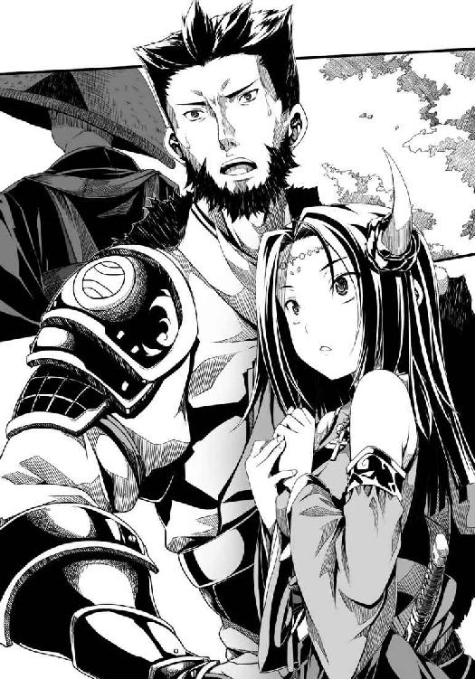
第七の封印 毘沙門天
越後。
上杉謙信の居城・春日山城。
南奥州諸将と梵天丸の仲立ちをし、奥州動乱の始末を終えた直江兼続は今、上杉謙信と二人きりで対面している。
「──以上のような経緯です」
兼続は自らが上原で梵天丸の奇略に完璧に敗れたことを含めて、包み隠さず自分が見てきた奥州動乱のすべてを謙信に伝え終えた。
ただし片倉小十郎への淡い思慕の念だけは、胸のうちにしまってある。
織田信奈から贈られてきた南蛮椅子に静かに腰掛けていた謙信は無言のまま、梵天丸を巡る長い長い物語にじっと聞き入っていた。
対する兼続は、畳の上に正座したまま、頭を下げている。
「梵天丸は竜なのか、魔王なのか」
謙信が、口を開いた。
天界から鳴り響いてくるかのような透明な声色は、人が発するものとは思えなかった。
上杉謙信は、尋常な人間ではなく、毘沙門天の化身である。
上杉家の家臣団はみな、その神話を本気で信じている。
「兼続はどう思う？」
謙信が問うてきた。
兼続は、万感の思いを込めて、謙信に伝えた。
「梵天丸の異形の瞳が不憫なのではありません」
「では、ない？」
「はい。そうではなく、母の愛をひたすらに求める姿が──」
そこまで声をふりしぼって、言葉に詰まった。
「──梵天丸は、決して魔王にはなりません」
「ならない？」
「当人が、まだ子供ゆえに気づいていないだけです。その心は、周囲の人々より注がれた愛に満たされております」
謙信が、手に抱いていた琵琶を、かき鳴らしはじめた。
謙信の心が揺れた時、彼女は無心に琵琶を鳴らす。
琵琶の音色に、自分の感情を込める。
「兼続。梵天丸は、幸福になれると思う？」
静かな口調とは対照的な、その激しい琵琶の音色に、兼続は一瞬魂を奪われてしまった。
ふと気づくと、謙信が「梵天丸はしばし関東で遊ばせてあげよう」とつぶやいていた。
「わたしへの懲罰は」
「兼続は梵天丸を、真の魔王へと落ちる道から救いだしてくれた」
「わたしはただ」
「ありがとう、兼続。これからも奥州と梵天丸を見守ってあげて」
「......はい」
「兼続はよき武将になる。でも、その奇妙な前立ては......？」
兼続は、「愛」の一文字を前立てに用いた風変わりな兜をかたわらに置いている。
「謙信さまより、義という志を教えられたこの兼続ですが、この乱世を鎮めるにはもうひとつ必要なものがあるのではないかと──梵天丸と過ごした日々の中で、気づきました。梵天丸が魔王を名乗りながらも、覇道を突き進みながらも、すでに与えられていることに気づかぬままに、求めてやまぬものです」
「それが、愛？」
実はこの前立ては『あい』と読むだけでなく『めご』とも読みます！ 掛詞です！ と兼続は漏らしそうになったが、あわてて咳払いをして我慢した。
「こほん。慈悲、では二文字になってしまい前立てが作れませんでした。キリシタンのようですが、ただ一文字で表現するのならば、愛、が最適かと」
「義とは理。でも、愛とは情。わたしには手にすることが、できないもの。兼続は、よき武将になる」
「戦国の侍が臆面もなく、愛などと。わたしはきっと後世に至るまで物笑いの種になるでしょうが、この前立てを掲げることでわが志が伝わるのであれば本望です」
兼続はよき武将になる、と謙信はみたび言った。
「でも兼続。『恋』の前立てではいけない？」
見透かされていた！
兼続は激しく咳きこんで、違う話を持ち出した。
「謙信さま、関東遠征はいかがします」
「関東はしばし梵天丸に任せたい」
「それでは関東平定という大戦略を変更されるのですか。なぜですか」
琵琶の音色が、ぷつり、と途切れた。
「もう......わたしにはあまり時間が残されていないと思うの、兼続」
「謙信さま!? そのようなことは」
「毘沙門天が地上にいられる時は、短いの。わたしは、還らねばならない」
「いいえ。謙信さまは、まことの毘沙門天です。戦場にてかすり傷一つ負われたことがなく、種子島も矢もすべて謙信さまを避けてゆきます！」
兼続は「還らねばならぬなど。そのようなことはありません」と叫びながら思わず顔をあげていた。
「謙信さまには、なんの罪も因業もありません！」
「兼続。わたしの父上は人を殺しすぎた。だから、わたしは父上の因業を背負ってこの世に生まれた──人ではなく、毘沙門天として地上に正義を実現するために」
静かに微笑んでいる謙信と、視線を合わせた。
「戦に勝ち続けるために、わたしは生涯不犯を貫くと決めたの。この世の者に恋をすれば、わたしはただちに死ぬの。それがわたしの運命」
生ける肉体を持った毘沙門天が、そこにいた。
真紅の瞳。
左も、右も、梵天丸の邪気眼を思いださせるほどに紅い。
兼続の心を捉えて放さない、美しい瞳だった。
謙信の身体には、色素というものがほとんどない。
瞳はどこまでも紅く、髪は白銀に輝き、その肌は越後に降る雪よりも白い。
上杉謙信は、albinoとしてこの世に生を受けた。
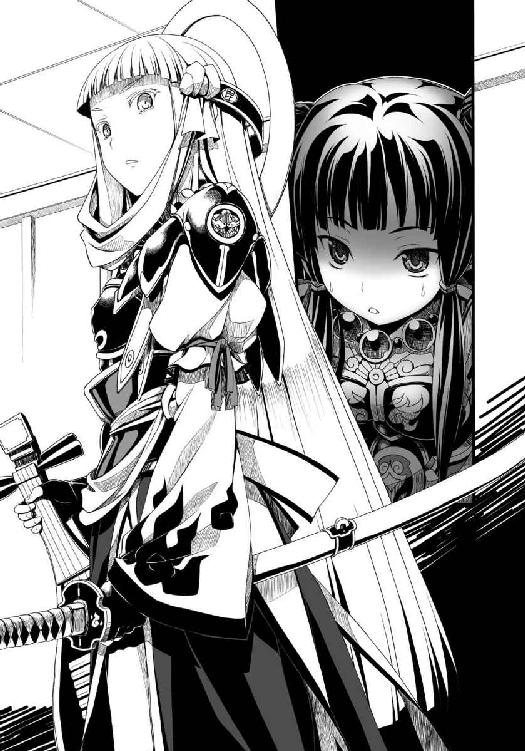
日光を苦手とする謙信は日頃は毘沙門堂にこもって姿を現さないが、ひとたび家臣団の前にその姿を現すや否や、家臣たちはみな謙信のこの世のものとは思えぬ神秘的な美しさの前に胸を打たれ、ひれ伏し、毘沙門天に命を捧げる死兵と化す。
長く毘沙門堂にこもりひたすらに毘沙門天と交感してきた謙信は、十八歳になるかならぬかという若い姫大名でありながら、神懸かりとしか言いようのない直感力を有していた。
霊感、と呼ぶ者もいる。
川中島で山本勘助が用いた「啄木鳥」の策を見破ったのも、理屈ではなかった。
謙信が「毘沙門天からの声」とも呼んでいる、直感力によるものである。
日光を避け薄暗い毘沙門堂にこもらねばならなかった謙信は、その孤独の中で精神を限界まで研ぎ澄ましたのだ。
「兼続。西に第六天魔王がいるという。わたしと信玄が川中島で戦っている隙に電撃的に上洛を果たした魔王がいるという。その者の身体は激しい野望の炎に燃えていて、いつかこの国のすべてを焼き尽くすかもしれないという。天下布武を掲げ、道ならぬ恋に生き、己の感情を爆発させ続けているのだという」
兼続は、ただ無言で少女の声に耳を傾けていた。
謙信がこれほど饒舌になることは滅多にない。
「信玄の上洛を阻んだのちに、わたしは自らその者と戦場で相まみえたい」
謙信は、彼方を見つめながら、かぼそい声をふりしぼった。
「なぜだろう、その者の名を聞くだけでわたしは胸が締めつけられる」
毘沙門天として生きるために生涯不犯を誓い、自らに恋も愛も禁じた少女にとって、生きることとは義のために戦うことに他ならない。
兼続はこの時はじめて、人であることを捨て毘沙門天となった謙信に悲しみを感じた。
梵天丸と出会う前の兼続ならば、決して抱かなかったはずの感情だった。
「わたしはきっと、その者と戦い、これを滅ぼし、ともに天へと還るためにこの地上に呼ばれたのだと思う。そしてその時は近づいている」
謙信は瞼を閉じた。
長い睫までが、水晶のように白く輝いている。
「兼続。わたしは織田信奈と戦い、そして討ち滅ぼす」
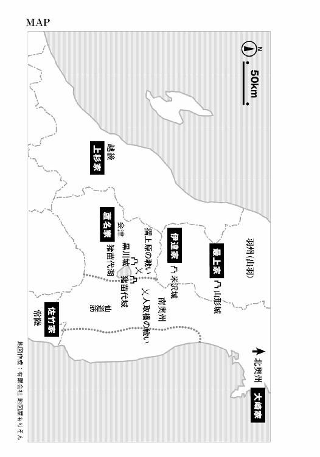
あとがき
梵天丸もかくありたいスゴイソード!!
というわけで「織田信奈の野望」シリーズ初の外伝、『邪気眼竜政宗』をお届けします。
奇跡の「まるごと一冊梵天丸」、そして上杉謙信と直江兼続がシリーズ初登場ということで、「織田信奈の野望」の読者の皆さまにもぜひ一家に一冊お勧めします。
また「織田信奈の野望」未読の方にも『邪気眼竜政宗』は独立した作品として読めるように工夫したつもりです。
両者は同じ世界観と時間軸を共有する話ですが、信奈には信奈の物語があるように、梵天丸には梵天丸自身の物語があるわけです。
戦国時代最大の中二病（厨二病）との呼び声も高い梵天丸（伊達政宗）は、戦国の世に生まれてくる時期が遅かった戦国武将です。
若き梵天丸が奥州の覇者になった時にはもう、天下は豊臣秀吉のものになっていたのです。
あと十年から十五年ほど早く生まれていれば、梵天丸は天下を競うことができたとよく言われています。
しかし信奈の世界の梵天丸は、どういうわけかわれわれが知っている史実よりも少しばかり早く生まれています。つまり、ぎりぎりで「遅れてこなかった」梵天丸なのです。
このことが梵天丸にとってどれほど大きな違いであり幸運であるかは、本編のほうでのちのち明らかになっていくかと思います。
もしも現代日本に生まれていれば「邪気眼ちゃん」としてクラスのマスコットになっていたこと請け合いのアイタタタな梵天丸ですが、戦国時代は邪気眼も中二病もオールオッケー。
邪気眼のうずくままに奥州そして日ノ本を駆け巡る梵天丸に今後ともご期待ください。
とにかく、どういうわけか梵天丸が好きでたまらないという春日とみやま零先生のなんだかよくわからないスゴイ魂のほむらがぶわーっと重なったところからこの作品は誕生しました。
この感情は純粋な愛である！
なお、本文中の聖書の文章は、日本聖書協会の『口語訳聖書』を原則的に活用させていただきました。「黙示録」、とにかくすごい迫力です。
次はいよいよ本編の10巻をお届けする予定です。『邪気眼竜政宗』読後にそのまま続けて読んでいただければ、物語はするりとつながると思われます。
最後になりましたが美麗なイラストを描いてくださいましたみやま零先生、アルコールの量が増え続けている担当さん、すごいロゴを作ってくださったデザイナーさん、いつも売ってくださる営業の皆さん、この本を手にしてくださいました読者の皆さまに御礼申し上げます。
著者
春日みかげ（かすが みかげ）
おかげさまで「織田信奈の野望」シリーズ初の外伝を書かせていただきました。一冊まるごと梵天丸という贅沢な内容となっています。本編を未読の方もぜひどうぞ。一家に一匹梵天丸。
イラスト
みやま零（みやま ぜろ）
今回のカバーは、元祖邪気眼でデコに３つ目のある御方っぽく黒龍を召喚してみました。相棒かライバルで同様の病のキャラが出てきたら、薔薇のムチを持たせようと思います。
ファンレター、作品の感想をお待ちしています
＜アンケートページはこちら＞
https://emob.jp/m/fi.php?a=gabunko&d=6&i=4877
（このページのスクリーンショットを撮って、ＱＲコードリーダーアプリで読み取ればアンケートページにアクセスできます）
〈あて先〉
〒１０６－００３２
東京都港区六本木２－４－５
ソフトバンク クリエイティブ（株）
ＧＡ文庫編集部 気付
「春日みかげ先生」係
「みやま零先生」係
http://ga.sbcr.jp/
ＧＡ文庫
織田信奈の野望外伝
邪気眼竜政宗
春日みかげ
発行人 小川 淳
発行所 ソフトバンク クリエイティブ株式会社
〒１０６－００３２
東京都港区六本木２－４－５
装 丁 株式会社ケイズ（大橋勉／彦坂暢章）
組 版 アーティザンカンパニー株式会社
印刷・製本 中央精版印刷株式会社
２０１２年１２月３１日 初版第一刷発行
２０１３年４月１日 電子第一版発行
©Mikage Kasuga ISBN 978-4-7973-7209-0